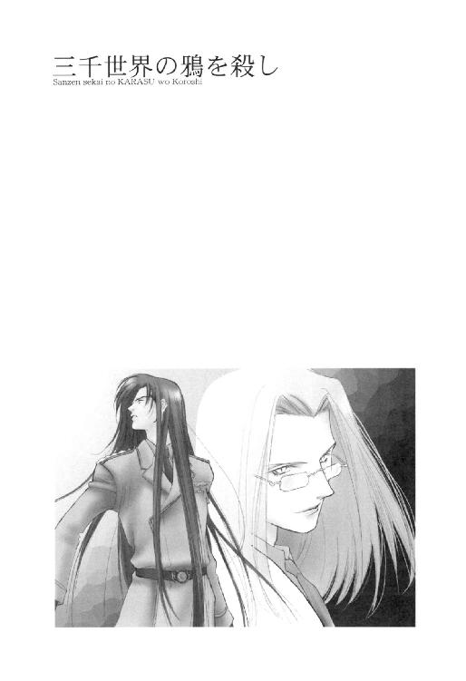

| 三千世界の鴉を殺し(3) (ウィングス・ノヴェル) | |
| 津守時生 | |

１
宇宙港の構造は、その規模と検疫室の存在をのぞいて基本的に通常空港と大差がない。
バーミリオン星の宇宙港は、首都カーマインに一ヵ所存在するだけだった。にもかかわらず、発着が旅客便と貨物便の一日一回ずつという事実は、ここがいかに辺境の惑星であるかを物語っている。
その一番近い惑星アンバーからの星間定期便でさえ、四日に一回休航するありさまだった。
カーマイン基地に駐屯する銀河連邦宇宙軍陸戦部隊は、惑星軍でいうところの一個師団、約一万五千名。
六連隊あるうちの二個連隊がひと組みになり、一ヵ月交代で宇宙港警備を担当する。各連隊は、三ヵ月に一度、警備の順番が回ってくるたび、宇宙港と空港を交互に担当していた。
第六連隊の今月の受け持ちは宇宙港。
旅客ターミナルと貨物ターミナル、管制塔と整備場、シティ・サイドの三ヵ所が、三個大隊に割り振られる。
各大隊に所属する四個中隊が、利用客の多い日中勤務に二個中隊、準夜間勤務と深夜勤務にそれぞれ一個中隊という具合に、一週間単位のローテーションで配置につく。
転任二ヵ月目を迎えるルシファード・オスカーシュタイン大尉の中隊は、シティ・サイドの日勤から始まった。
大気圏と宇宙空間両用のエンジンを搭載したシャトルが、一日二回宇宙ステーションを往復するほかは、政府の特別機もしくは軍の宇宙船でも飛来しない限り、宇宙港の滑走路と発着床は、ただの空き地のままだった。
軍と共用している通常空港のほうは、主要都市を結ぶ定期便が、頻繁に発着しているだけに、どうしても宇宙港の閑散としたようすが際立つ。
「一日一便しかないわりには、あまり見送り客がいないのね」
シティ・サイド・エリアの警備主要地点が映し出されたモニター群をながめて、中隊副官のライラ・キム中尉が言った。
宇宙港と空港警備の兵士は、全員都市パターン迷彩の戦闘服を着用し、グリーンのベレー帽をかぶっている。直接現場の監督をせず、デスクワークと見回りが仕事の士官も、戦闘服着用は義務付けられていた。
メリッサ・ラングレー大尉の通信中隊から派遣されている通信兵のひとりが、宇宙港警備の勤務は初めてになる転任士官の彼女に説明をする。
「乗客の大半は、商用で出張するビジネスマンですから、わざわざ見送りにくるものはいません。着陸便も同じです。バーミリオン星には、ほかの惑星にない観光資源があるわけでもありませんし、保養地やリゾート地はあっても、わざわざこんな辺境惑星まで保養にくる物好きはいないでしょう。大学受験や卒業、入学、就職のシーズンになれば、他惑星に向かう人間の家族たちが見送りに来るので、それなりに別れを惜しむ姿も見られます」
「あなたが、ここの警備に配置されるようになってから、どんな事件があったの？」
「そうですね......。一番よくあるのが置き引きやスリです。派手なところでは、三角関係を清算しようとした果ての殺人もありました。愛人と旅立とうとした妻を、追ってきた夫が射殺した事件です。それから、最近三度ほど続きましたが、都市警察の刑事が、惑星外に高飛びをしようとしたイエロー・タウンの犯罪者を空港内で逮捕しています」
「都市警察との関係は良好？」
銀河連邦宇宙軍と銀河連邦警察は、しばしば生じる縄張り争いのおかげで仲が悪い。それと同様に、銀河連邦惑星軍と都市警察も惑星内が活動範囲なだけに、これもまた伝統的に仲が悪い。
軍同士、警察同士なら仲がいいのかと言えば、これはこれで決して友好的と言えないのが、むずかしいところだった。
かように縄張り意識というのは、どこの組織でもやっかいかつ、重大な意味を持つ。
果たして、通信兵はシニカルな笑みで片頰をゆがめ、なげやりに言った。
「全部事後承諾です。どうせ俺たち、ナメられてますから」
「どうして？」
「わが基地は、民間の警備会社に委託しようにも、その経費が出ない赤字の宇宙港を代行して警備することで、かろうじて存在意義があると思われています。この近辺に仮想敵すらいないのは、だれもが承知のことですし」
「それは......ちょっと、くるものがあるわね。──〝連邦軍旗にかけて〟！ 都市警察のやつらが、面と向かってそれを言いやがったら、絶対にアゴの骨砕いてやる」
一見クールに見えるものの、沸点の低いライラは、こぶしをにぎって獰猛にうなった。
周囲の兵士は、女性士官の怒気を含んだ過激な言動に目をむいたが、すぐに全員破顔する。
彼らは、軍人の誇りがなんであるかを知っている新しい上官を、すっかり好きになってしまった。
「一同まことに同感あります、中尉殿！」
「しかし、俺たちなんてまだマシなほうです。バーミリオン惑星軍は、ＡＦＳが一機も配備されていませんから」
別の通信兵が訴える。
「......一機も？」
信じられないことを聞いたライラは、オウム返しにつぶやいたきり絶句した。
宇宙軍の軍事費は、銀河連邦議会の承認を得た年間予算を連邦軍本部が、各方面軍に割り当てる。
さきほど通信兵が言った通り、バーミリオン星の周辺宙域は、仮想敵さえいない。したがって、カーマイン基地にＡＦＳ──陸上戦用人型兵器が二十二機しか配備されていないのも、予算配分の優先順位を考えればしようのないことだった。
だが、惑星政府が組む予算によってまかなわれる惑星軍が、カーマイン基地を上回る貧乏所帯だとは、予想だにしなかった。
「イエス・マム。ＡＦＳ一機が、ひとつの基地の年間予算に匹敵するという話です。この星の連中は、惑星軍を災害救助隊程度にしか思っていません」
「......気の毒すぎる......」
同じ軍人として、惑星軍に所属するものたちの胸中をおもんぱかり、瞑目した彼女のつぶやきに、シティ・サイド監視コントロール・ルームにいたほかの通信兵たちも、深くうなずく。
「年に一度、親睦を深める目的で、惑星軍との合同演習があるんですが、演習後のパーティーで酒が入るにつれて、連中の泣きも相当入ってくるんです。最初はグチとかボヤキ程度で、そのうち聞くも涙、語るも涙......しまいには、みんなで泣きながら〝お互い、むくわれなくても軍人の誇りを持って、がんばろうな〟って励まし合うんです」
それを話す兵士は、最後のほうで涙声になる。
思い出したのか、ほかの兵士も涙目になっているものがいた。
「そんな話をしないでちょうだい。もらい泣きしそう」
半分本気で言いながら、ライラはここにルシファードがいなくて幸いだったと思う。
あの男は、こんな場面でまったく感情を動かさない。他人の哀しみに共感するという繊細さが欠落し、なぜ泣くのか理解できないこともあるが、それ以上に──。
〝金がねえ？ 備品もねえだぁ？ だったら文句の出ねえトコから盗んでくりゃいいだろーがよ〟
きっと部下の前でも、平然とそう言い放っていただろう。
そして、恐ろしいことに彼は、本当に文句の出ないところから盗んでくる。明らかに犯罪なのだが、その斬新な発想と証拠を残さない手際のよさは、間近で見ていたものですら神か悪魔のしわざかと思うほどだった。
目的のために手段を選ばない彼の罪悪感のなさは、銀河連邦軍情報部部長を長年つとめる父親ゆずりだという。彼の母親は、そんな資質を有する息子を育てるのに、さぞ多大なる苦労をしたことだろう。
もっともルシファードが人並みの罪悪感を持っていたら、ライラと彼は今頃この世にいなかったのも事実なので、早々に〝バレなきゃいいんだ、バレなきゃ〟という心境に達している。
数々の違法行為の思い出にひたりかけていたライラは、担当エリアを見回りに出ていった上官の帰りが、ずいぶん遅いことに気づいた。
それとなくモニター画面を見たが、どこにも映っていない。
「ちょっと聞きたいんだけど。モニターで、オスカーシュタイン中隊長殿の姿を最後に見たのは、どこ？」
監視役の通信兵たちは、ライラの質問にあれやこれやと画面を指差して話し合い、一時間前にゲート２の画面で見かけたのが最後ではないかという結論を出した。
ゲート１は、カーマイン市を構成するイエロー・タウンとパープル・タウンからのびた道が合流し、有料の直通道路となった道が、今度は宇宙港行きと空港行きに分岐する料金所付近を指す。シティ・サイドの警備は、そのゲート１から宇宙港の旅客ターミナルの入り口までが範囲とされている。
ゲート２は宇宙港の入り口だった。
見回りの順路として最後になるゲート１は、そのゲート２を通って行く。ルシファードの見回りは、ほとんど終わっていたも同然だった。
「ゲート２のカメラを動かして」
「アイ・アイ・マム」
ライラの命令を受けた通信兵が、現場のカメラのアングルをコンピュータで変えた。
移動していく視野の中に、道路からはずれて横転したリニア・カーと、その脇に停車したもう一台の派手な車が映し出される。
深紫に黄色という補色関係にある二色を塗装した非常に趣味の悪い車は、屋根の真ん中に赤いライトのバーが取り付けられて、さらに最悪な色彩感覚の見本と化している。
「都市警察のパトロール・カーです！」
「なんてダサイのかしら。あんな恥ずかしい車に毎日乗って平気な連中とは、絶対お友達になれないわね」
一瞬殺気立った室内が、ライラの軽口でなごむ。
二台の車のそばには、銃を手にしたふたりの兵士が見張りとして立っているだけで、どちらの車内にも人影はない。
戻ってこないオスカーシュタイン大尉が、この光景に深くかかわっているのは、ほぼ確実と思えた。
さすが、トラブルメーカーの面目躍如と言うべきか。
ゲート２の現場責任者であるアダン曹長を呼び出し、事件の説明をしてもらおうとライラが考えたところで、ルシファードがモニター・ルームに戻ってきた。
彼の後ろには、六芒人並みの巨漢のアダン曹長までいる。
「遅くなってすまん。ちょいと出先でトラブった」
ルシファードは、戦闘服の布製ベルトに弾倉を入れたパウチと拳銃ホルスター、万能ナイフを下げていた。士官といえども見回りの時は武装する。
すかさず副官の厳しいチェックが入った。
「大尉殿。ベレー帽着用の際は、髪を編むかひとつに束ねてくださいと、何度か申し上げたはずですが」
「クセがつくから、やぁだとお答えしたはずですが」
ダーク・グリーンのベレーを取って、口うるさい副官に投げ渡した中隊長は、まっすぐ飲料提供機のところへ行き、コーヒーと紅茶をいれた。
上官手ずからの給仕に恐縮するアダン曹長へ、紅茶のカップを手渡す。
ライラは静かにたずねた。
「ゲート２で、なにが起こったのですか？」
「んー？ ことの起こりは、ゲート１からの報告だったな。たった今通過した車が、どうやら都市警察のパトカーに追われているらしいっつーんだね。まだ搭乗時間に余裕があったから、とりあえずゲート２で停車させて、ただのスピード違反なら搭乗予定者だけでも、ターミナルに行かせてあげましょうということになったワケだ」
運転者が搭乗予定者ではどうしようもないが、それが同乗者ならば、警察と宇宙港利用者双方に配慮した、いい判断だった。
「ところが、おとなしく止まりゃしねえんだな、これが。なに考えていやがんだバカヤロー、軍をナメんじゃねーぞ、と当然、お怒りになった監視兵のみなさんが、高速撤甲弾を駆動部へブチこみまして、強制的にとめたら、ひっくり返っちゃった、と」
一息ついてコーヒーを飲む上官に代わり、ゲート２責任者のアダン曹長が、キム中尉に説明する。
「今日のシャトルで、ほかの惑星に高飛びをもくろんだ犯罪者どもでした。都市警察の車に追われて逆上し、血迷ったようです。我々が横転した車内から、ふたりの男を引きずり出したところで、都市警察が到着しました。モニター画面のあの位置にです」
「それで、その都市警察と犯罪者たちはどうしたの？ 一応上層部にあいさつするにしても、パトカーをあんなところへ置きっ放しにするなんて」
「は。それが......刑事一名と犯罪者二名は、我々が拘束し、宇宙港警備本部に連行いたしました。残る刑事一名は、救急車にて軍病院へ搬送後、現在治療中です」
ライラの視線が、言いにくそうに説明した小隊長から、再びルシファードに移動した。
「どうしてそのような事態になったのか、説明していただけますか？ サー」
「都市警察の野郎どもが、ろくに礼も言わねえうちに、我々が追ってきた犯罪者だから、すみやかに引き渡してくれと抜かしやがってよ。だったら、上層部に話を通してあるのかって聞いたら、そんなヒマはなかったが、いつも事後承諾ですましているって言うだろ」
「私もさきほど、ここでそれを聞きました。非常に納得できませんね」
無表情に言う副官の低い声が、怒っているのだとわかるルシファードは、それに励まされて言葉に力をこめる。
「だろ！ 問い合わせるので、ちびっと待てっつーたんだわ、俺は。すると年配のチョビヒゲ野郎さまが、おたくらは警備会社の代行だけしていればいいなどと、お抜かしくださったわけですよ」
通信兵たちが、一斉に怒りの声を上げた。
「それで病院送りにしたのですね？」
「いいえ。私、ブレッチャー司令官になぜだか、厳しくチェックを入れられている身ですから、いきなりそんな無謀なマネはできません。そこで、口のきき方をご存じないようだから、礼儀正しい気持ちになるまで、しばらく黙って反省していただきましょうと、アゴの関節をはずして差し上げただけです」
そこかしこで、兵士たちの忍び笑いがもれ始める。
つとめて紳士的にふるまったように話しているが、刑事たちをバカにしきった言い方が、彼の行動の本質を物語っている。
アダン曹長が、笑いをこらえようとするあまり、苦虫を嚙み潰したような渋面になって、そのあとを引き取った。
「そのように非友好的な場面において、背後に立った相手が、上着の内側に手を入れる動作をした場合、こちらとしては極めて危険な敵対行為と解釈するのが妥当です。私は、連邦軍旗にかけて、若い刑事の戦闘能力を無力化したオスカーシュタイン大尉殿の行為は、軍人として正当かつ当然のものであったと、マオ連隊長殿に証言いたしました」
ふたりそろって戻ってきたことに得心がいく。
はずしたアゴの関節は、すぐ戻せるにしても、軍側が先に手を出したという非難はまぬがれない。それでも都市警察側の言語道断な暴言でチャラか、おつりがくる程度のものだろう。
しかし、続く都市警察側の行動は弁解の余地がなかった。
おろかな若い刑事が、彼らの上司に相談するべく連絡を取ろうとしただけのことであっても、一言も断らなければ銃を手にする動作と混同される。
臨戦態勢に入っている勤務中の兵士に対し、攻撃と誤解を招く行動をとった刑事が悪い。
軍側が同じことをして、誤解した都市警察側が発砲した場合、彼らは正当防衛を主張するだろう。
好奇心に負けた兵士が、はずむ声で直接大尉に尋ねた。
「それで、具体的にどのようになさったのでありますかっ？」
コーヒーを飲み終えたルシファードは、あくまでも詳細を知りたがる彼らの野次馬根性に苦笑し、教えてやった。
「うしろ蹴りで右肩の骨を砕いた。手加減なしでやったから、もと通り治すのは大変だろうな。ドクター・アラムートには、面倒な仕事を増やしてすまんと、先に謝っておいた」
後半は、ライラへの報告になる。
とりあえず副官としての仕事はなさそうだと考えながら、ライラは今回の事件に対する自分の判断を伝えた。
「刑事は、射殺されても文句は言えないところです。それを超一流の医師の手で治療までしてやろうというのですから、感謝されてしかるべきではないのでしょうか」
通信兵たちは手をたたき、口笛を吹く。
都市警察とのあいだに今後深刻な対立の火種をまいた男は、空のカップを回収箱に放り込むと、のびをひとつする。
そして、だれにともなく言った。
「今まで好き勝手できたとしても、これからは俺たちの縄張りでナメたマネは許さねえ。都市警察だろうが、流民のマフィアどもだろうが、それをとっくり思い知らせてやるぜ」
薄笑いを浮かべて宣言した彼の、その色気さえ漂う凄味と胸のすくカッコよさ。
自分こそマフィアのボス顔負けのセリフだったが、人並み以上に見目がいいだけあって、強烈な印象をまわりに与える。
見慣れているはずの副官ですら、血が熱く騒いだ。まして免疫のないほかの連中は、もはや、どこまででもお供いたします状態だった。
一兵卒からたたき上げた苦労人アダン曹長も、空のカップをにぎりつぶし、感動にうち震えている。
──出た出た、ルシファの必殺男殺し。本人はいたって素直に、自分の思っていることを口にしているだけなのにねえ。
そうは思っても、今一瞬、自分が〝この男についてきてよかったあぁぁぁーっっっ〟とこぶしをにぎって感動しかけたことは、否定しようがない。
地球人のあいだで一番ポピュラーな宗教が、悪しき誘惑者として作った悪魔の王の名前を持つ男は、その名に恥じない存在だった。
道徳的に極めて問題のある行動を取りながら、それを意識させないばかりか、魅力的だとすら思わせてしまう。
長年にわたる彼の影響で、明らかにライラ自身も、かなり常識を逸脱した思考をする人間になっていた。
しかし、当の本人は、部下たちのひそかな熱い盛り上がりに全然気がつかず、モニターを順にながめている。その視線が、ターミナル前の画面で止まった。
「通信兵。こいつとこいつを中心にズーム・アップしてくれ」
「アイ・サー」
上官の雰囲気が一変したのを敏感に感じ取った副官は、使用していなかった監視室のパソコンにすばやく歩み寄り、起動させる。自分のＩＤカードを読み取らせ、基地のホスト・コンピュータにログインした。
副官がすでに待機しているのを横目で確かめ、ルシファードは先に示したふたりの男女の画像を彼女のパソコンに転送させる。
宇宙軍が所有する犯罪者のデータと照合すると、十秒ほどで回答が出た。
「男は、ボリス・リビューモフ。身代金目的の誘拐、殺人、人身売買など余罪多数でレベル５の手配。女は、アムナ・コルドハ。宗教テロリストで爆発物の専門家です。手配はレベル３」
「レベル３......！」
キム中尉の読み上げた内容を聞き、ルシファード以外のものは一様に驚く。
レベル１から３の犯罪者を捕らえた場合は、銀河連邦警察に連絡し、引き渡すことになっている。犯罪者は、連邦裁判所で直接裁かれるが、死刑をまぬがれたとしても、刑務所から生きて出られる程度の短い懲役刑が判決で下されたケースはない。
レベル４と５は、身柄の引き渡しを求めている惑星政府があることを示す。
どちらも、こんな辺境の惑星でお目にかかるとは思ってもみなかった大物だった。
空気が緊迫感に満ちたものに変わる。
「旅客ターミナル警備の責任者を呼び出せ」
「アイ・サー！」
「中隊長殿。私はこれにて失礼し、ゲート２に戻らせていただきます」
長居は無用と判断したアダン曹長は、大尉に辞去の意を告げた。
ルシファードは表情をやわらげ、微笑みかける。
「ご苦労だった。君やゲート２の警備兵は、実に手際よくやってくれた。ゲート２の現場は、状況撮影後、事故車両を撤去するように。都市警察の車は、軍関係者用駐車場に回して施錠し、警備本部へそのことを報告せよ」
「アイ・アイ・サー。失礼いたします」
アダン曹長は敬礼をしながら、改めて着任一ヵ月が経過したばかりの上官に感銘を受けた。
オスカーシュタイン中隊長は、なにかあれば必ず笑みとともに礼を述べ、相手の行為にねぎらいの言葉をかける。
ささいなことだが、上官にこれをされると、部下は自分の仕事を認められたという思いを強く抱く。
軍隊という全体主義の集団にあって、兵士が一個の歯車としておのれの責務を果たすのは当然にせよ、やりがいがあってこそ、士気も高まるというものだった。
彼の軍服の胸にびっしりと並んだ略綬の陰には、作戦を成功させた多くの部下がいる。
類稀な美貌と士官にあるまじき奔放な言動は、確かに多くの部下を心酔させるが、この男の統率者として優れている点が、カリスマ的魅力だけではないことを、いったいどれだけの人間が気づくだろう。
プライドが高く、気難しかった前任者のヨハンセン大尉は、ことあるごとに下士官の小隊長に対して、一線を引くところがあった。ほかの士官の小隊長たちにそれを意識させないよう、彼の気苦労は絶えなかった。
屈辱のあまり、衝動的に何度か除隊願いを書いたこともある。その都度、妻と六人の子供と二匹の犬を飢えさせるわけにはいかないと、提出を思いとどまった。
その苦労がむくわれた気がする。
さきほどのような一過性の感動ではなく、アダン曹長はその思いを嚙みしめながら、監視室をあとにした。
旅客ステーションを警備する日勤の二中隊のうち、こちらからの連絡にワルター・シュミット大尉が出る。
「あんたでちょうどよかった。これから、連邦警察レベル５手配の男とレベル３手配の女のふたり連れが、そっちへ行く。こっちの監視カメラに入った映像と手配資料を転送するので、逮捕に向かってくれ。ただし、女は遠くから麻酔弾でねらうんだ。本当は、即時射殺が望ましいくらい危ない女で、間違いなく破壊力の大きな爆発物を持っている。下手をすれば全身爆弾の塊かもしれん。絶対に逮捕の気配を悟らせるなよ」
ルシファードの矢継ぎ早の指示は、通話画面のワルターも含めて周囲を驚かせ、同時に緊張させた。
だが、ワルターはここで多くの質問を発し、いたずらに時間を浪費するまねはしなかった。質問は、逮捕してからでもできる。
「わかった。シティ・サイドの監視室にいるのなら、君もこっちにきてくれ」
「了解」
通話を切ったルシファードは、ライラがデータを転送しているあいだに、この監視室と続いている隣部屋へ行く。
彼と同じ日勤組の第三中隊のロザリンド・バーガー大尉が、宇宙港警備をしていても追いかけてくる書類の山を横に積み、副官とともにデスク・ワークにいそしんでいた。
「ロザリー。緊急事態で旅客ターミナルへ行くことになった。ライラも連れていく。悪いんだが、あとを頼めるか？ ゲート１以外の見回りはすんでいる」
「了解。あなたの仕事は、ほとんど終わっているわけだし、それにもうすぐ私との交代時間よ。どんな事態か知らないけれど、早く戻ってこないとデスク・ワークで残業だわね」
金髪をベリー・ショートにした女性士官は、いたずらっぽくウインクする。
ルシファードは、自分の書類仕事嫌いを見抜いた彼女にからかわれ、迷彩服の肩を落とす。
「せっかくの勤労意欲をそぐようなコト言わんでくれよ」
「あぁら、それはごめんなさい。いってらっしゃい、楽しんできてねー」
「緊急事態だっつーの。どこが楽しいんだ」
「あなた、トラブルと相性のいいタイプと見たわ。危機管理能力高そうだし、スリリングなこと、好きでしょ」
「アナタ占い好きでしょ。そーゆータイプ」
捨てゼリフ代わりに軽口をたたいた彼の広い背中を、ロザリンドのほがらかな笑い声が追いかけた。
すでに出入り口で待っていた副官と合流し、車をとめてある場所まで早足で歩き出す。
旅客ターミナルの左翼一番はずれに位置するここから、シュミット大尉のいる右翼の監視室まで、歩けば小一時間かかってしまう。
不意にライラが口を開く。
「思い出したわ、惑星ガルシアの『黙示録の聖騎士教』を。汚れた世界を滅ぼし、神の栄光に満ちた聖世界を降臨させることを目的として、次々に主要な施設を爆破した狂信者の集団。あの女、唯一の生き残りの幹部ね」
「ああ。掃討作戦で、あれの中心メンバーだったコルドハを殺し損なって、しばらく気にしていたんだ。だから、すぐに思い出せた。男のほうは知らんがな。あんな女と行動をともにしている以上、カタギじゃねえだろうと思っただけだ。......案の定と言うには、ちょっと妙な取り合わせだな」
リニアカーに乗り込みながら、ふたりは話を続けた。
「でもレベル３手配なのに、どうして整形も変装もしなかったのかしら。違法整形だって、暗黒街なら簡単にできるのに」
「違法整形は、犯罪者のやるものであって、神に選ばれた聖騎士は、神の加護のみを盾として戦う──とか、メンバーのひとりがほざいてたっけな。こっそり仕掛けた爆弾で、だれかれかまわずフッ飛ばす連中が、だぜ。安全な場所から起爆スイッチを押すのに、神のご加護って必要なのか？」
ルシファードは、自分を棚に上げて正義感を振りかざし、憤激するような人間ではなかった。理屈が通らないと、あきれているだけにすぎない。
彼の中にあるのは、善悪の倫理観ではなく、敵か味方かという線引きだった。ある意味において、彼の単純な区別こそが、すぐれた兵士に必要な資質かもしれない。
戦いとは、自分と相手の正義を賭けた力のぶつかり合いであり、勝ったほうの正義が〝真の正義〟となる。
正義や善悪は絶対的なものではない。今、この瞬間に自分の敵か味方か──その事実だけが、戦う兵士にとって重要だった。
「掃討作戦の時は、監視装置で主なメンバーがアジトに集合したのを見計らって、誘導型ミサイルを撃ち込んだのよね」
全身爆発物の塊のような人間を逮捕する際の危険性を考慮し、全員射殺許可を得た上での皆殺し作戦だった。
誤算だったのは、アジトに隠されていた爆発物の破壊力が予想を上回り、周辺家屋にも大きな被害を出したことだった。
ただし、爆発で死亡した周辺住人の大半が、当局の捜査に対する妨害および監視を目的として、アジト周辺に移り住んできた『黙示録の聖騎士教』の信徒だったことから、宇宙軍への大きな非難は起こらなかった。
狂信者たちのテロ活動で、宇宙軍施設にも大きな被害が出ていたせいでもある。
「今だから言うけどよ。あの時、俺と部下の三人で、五台の監視装置の中へついでに爆発物仕込んだんだよな。誘爆しやすくして」
軽いショックを受けたライラは、思わず助手席の上官の横顔を見遣った。
スクリーン・グラスの有無とは関係なく、そこにはなんの表情もない。
この男は、シンパの家族に親の主義など関知しない幼児や赤ん坊がいても、まったくためらわなかったに違いない。
無差別爆破テロの被害者には、子供も多く含まれた。お互いさまなのだと頭で考えても、ライラはこうしてショックを受ける。
当時のルシファードは、そんな副官の心を知っていて、信者一掃作戦に参加させなかったのだろう。
ルシファードは、相手を排除すべき敵と認識した時点で、相手に対する個人的な感情を失う。あとは、もっとも効率のいい戦術を立案し、完全排除の行動を取る。
そのムダのない非情さこそ、つねに彼の作戦が戦略コンピュータＭＭシリーズたちから支持される理由かもしれない。
十分ほどでターミナル正面に到着したふたりは、その一帯を警備している兵士に駐車の許可をもらい、一般人と同じ出入り口から中に入った。
「そろそろ、今日の便の搭乗受け付け開始時刻ね」
時計を見上げて言ったライラは、すぐ近くで起きた小さな騒ぎに注意を引かれる。
見送り客らしき若い女性数人が、こちらを見ながら互いを小突き合って、興奮気味に何事かをしゃべっている。
つい苦笑がもれた。
通りかかった連邦軍士官の類稀な美貌と、常識はずれの長髪に驚いているのだろう。
ライラもここまで長い髪の男は、ほかに出会ったことがない。
女性ですら、手入れの面倒さと長髪ゆえのわずらわしさで、これほど伸びるまで我慢するのは大変だった。少しでも長くなると、大抵結い上げるか束ねてしまう。
そこまで考えて、気づく。
「ルシファード！ 港内着帽は義務よ。それから、髪の毛を束ねるか編みなさいったら」
「やぁだってば。クセついたら、みっともねえ──」
どうせ必要になれば、すぐに伸ばせるんだから切っちゃいなさい、と言い返すつもりだった彼女は、上官の言葉を急にとぎれさせた原因を求め、その視線を追った。
警備の兵士が数人ずつ、ふたつの塊になって、正面ロビーをななめに横切る形で歩いてくる。
その塊の中心にいるのは、それぞれ後ろ手に拘束され、両脇と背後から銃口を突きつけられて歩く男女。
ライラが、犯罪者リストに照合したボリス・リビューモフとアムナ・コルドハだった。
「ばかやろう......っ」
小さくうめいたルシファードは、その集団から目を離さないまま副官の腕をつかみ、ターミナルの外に出ようとする。
だが、逮捕の指揮を取っていた分隊長の軍曹は、そんな彼の姿を認めると、逮捕の報告をかねたあいさつの敬礼をした。
何人かの兵士の頭が動き、その気配に顔を上げた男女の視線も同じ方向に向かう。
浅黒い肌をした女の顔が、物憂い表情から驚愕、そして怒りへと変わっていった。
絶対に忘れられない同胞の敵を見つけたアムナ・コルドハは、憎悪の叫びを放つ。
「シャイターンッ！」
昔、ライラがどこかで聞いた地球の古い言葉だった。相手の表情と立場からして、罵倒語なのは見当がつく。
ルシファードが彼女の腕を強く引いた。
罵倒語の意味を反射的に思い出そうとしたライラの体は、急な動きへの反応が遅れて大きくよろめく。
風景全体の輪郭が激しくぶれ、めまいを感じる。正面ロビーに満ちていたざわめきが消え、一瞬、全身を空中に投げ出されるような錯覚を感じた。
音も色も光も──五感の感覚が消滅し、意識が空白になる。
うつぶせに床に倒れた痛みで、ライラは正気に戻った。
倒れるほどバランスを崩した覚えはなかったが、脳貧血でも起こしたのか、少し意識が遠くなったらしい。
上官の乱暴にむかっ腹を立てた彼女が、起き上がろうとして床に両手をついた瞬間、足が向いている方角で、あたりを揺るがす大爆発が起こった。
訓練を積んだ肉体は危険に反応し、損害を最小限にするべく、とっさに両手で頭をかかえ込み四肢を縮める。
一秒、二秒、......。
続く爆発はない。
爆発の衝撃が薄れるに従い、吹き飛ばされたものの残骸が落下する音と競うようにして、すぐ隣から大きな警告音の二重奏が聞こえてきた。
爆発の大音響にかき消されていただけで、爆発とほぼ同時か、それより少し前から鳴り出していたらしい。
──なんの......？ ルシファのＰＣリングのだわっ！
警告音の大きさはただ事ではない。
次の爆発の危険も忘れ、あわてて飛び起きたライラは、周囲のようすに愕然とする。
自分が倒れているのは、ターミナルのロビーではなかった。
旅客ターミナルからロータリーをはさんで、さらにむこうにあるリニアカーの駐車場だった。
駐車場に入ったばかりだった車の乗客が、車外に飛び出してターミナルを見つめ、呆然と立ちつくしている。なにかを叫びながら、走っていくものもいた。
ライラの隣には、ルシファード・オスカーシュタインが横様に倒れている。
つややかな長い黒髪が、舗装された路面に広がる光景は、言葉でうまく表現できない美しさがあった。
切れと言わなくてよかったと、心のすみでぼんやり思う。
失神している彼の両腕にはめられたサイキック・コントロール・リングは、低く大きな警告音を威圧的に発し続ける。
ふたつのＰＣリングが、これほどの音を出すからには、かなり強い超能力の波動を関知したのだろう。
力を続けて使わせないために警告として発する衝撃波も相当強烈なものだったはずで、彼が気絶しているのも無理はない。
──超能力......ルシファのは念動力なのよね......。まさか、これが空間移動......？
ライラは戦慄した。
念動力で瞬間的に空間を移動する超能力など、絵空事の世界の話だと思っていた彼女は、彼が現実にそれを行なったとしか思えない異常な状況に恐怖さえ感じる。
だが、彼女はそれを理性で抑え込む。
神経をいらだたせるＰＣリングの警告音を停止させ、ルシファードの首に手を当てる。
感じた脈の弱さに別の戦慄が走った。
旅客ターミナルは、正面ロビーで起こった爆発で大騒ぎになっている。常駐している軍医や看護兵は、当然負傷者の手当てにかり出されるだろう。
自分たちの乗ってきたリニアカーが、無傷で放置されているのが見えた。
軍病院には、自分で運んだほうが早いと判断し、ライラは車に向かって走った。
２
女テロリストの自爆により、宇宙港旅客ターミナル正面ロビーの爆発は、死者二十五名、重軽傷者八十二名を出す大惨事となった。
幸いだったのは、搭乗受け付け開始間近で、早めに到着していた乗客が、受け付けカウンター前に集まっていたことだった。爆発がもう十五分早いか遅かったなら、被害はその倍以上になっただろうと言われている。
負傷者にはカウントされなかったが、ＰＣリングの衝撃波で危なく心臓が止まりそうになったオスカーシュタイン大尉も、爆発の被害者のひとりだった。
大事をとって一日連邦軍病院の内科に入院することとなったルシファードは、カジャ・ニザリのくだした入院宣告が、大いに不満だった。
「こんな落ち着かねえところに半日だっていられるか」
「ドクター・ニザリの許可をもらって、面会謝絶の表示は出しておいたわよ。でないと、獰猛な子羊ちゃんたちが、羊飼いさんの容態がとっても心配なのって、押し寄せそうだったから」
「あんな筋肉でムキムキした羊の群れに押し寄せられたら、俺は押しつぶされて死ぬ」
副官の言葉に身震いする彼を見て、見舞いにきていたロザリンド・バーガー大尉とワルター・シュミット大尉が笑う。
すでにシフトは、準夜間勤務の中隊に移っていた。
陽気なロザリンドが、すかさず冷やかす。
「そんなつれないコト言っちゃいけないわよぉ。子羊さんたちオロオロしちゃって、いじらしいったらないんだもの。愛されてるね、羊飼いさん！」
「子羊の大群もいやだが、入れ替わり立ち替わり白ウサギたちが、のぞきにくるんだよ。それが落ち着かねーっての」
「白ウサギ？ ああ、ナースのコト。面会謝絶でも入れるもんね。あはは！ モテる男はつらーい」
「あはは、じゃねえよ。寝顔を盗み撮りされるなんて真っ平ごめんだぜ。だから、俺は自分の部屋に戻って休む」
きっぱり宣言し、上掛けをはいで寝台から降りようとする彼を、ライラがあわてて制止する。
「ダメよ！ まだ神経のマヒが残っているんだから。夕方にもう一度薬を投与して、ようすを観察したあと、明日の朝一番で検査するって、ドクター・ニザリがおっしゃったの。勝手に帰れないわ」
「もうなんともねえ。大丈夫だ。自分の体は自分がよく知っている」
「そう。だったら、私の手をにぎってみて。指先を使う動作に支障がなければ、あなたの言葉を信用するわ」
ルシファードは、差し出された彼女の手をとったが、にぎろうとする指先が震えるばかりで、思うように曲がらない。
「ほーら。おとなしく入院していなさい」
「ちくしょう。いくら俺でも、そんなに長時間眠れねえぞ」
「退屈するだろうと思って、仕事の書類を全部持ってきてあげたわ。就寝時間まで、ベッドの上が出張オフィスということで、お仕事しましょう」
にこやかに言われた男は、やや間を置いて哀れっぽく訴える。
「あの......ライラさん。私、手がこんな状態なので、書類にサインができませんが」
「心配しないで。手にペンをにぎらせて、包帯巻いてあげるわ」
「ひでえっ！ 死にかけた人間を一晩安静にさせておく人権感覚もねえのか、ウチの副官はっっっ」
「男に人権？ それって初耳」
ライラがなにかを言う前に、ロザリンドが突っ込む。
ひゃあ、人でなしっ！ と小さく悲鳴を上げたワルターに向かって、ルシファードがぼやいた。
「ワルター。あんた、よくこんな生きものたちと二回も結婚する気になれたな。恐れ知らずにもほどがあるぜ。信じられねえよ、ホント」
「いやぁ、俺ってマゾなんだよね。寝る前にムチでぶって、ハイヒールで踏んでもらわないと、寝つけなくってさ♡」
「そっかー。確かにメリッサって、網タイツとか革のビスチェとか似合いそうだもんな」
ふむふむと納得している黒髪の男の片耳を引っ張り、ライラがしかる。
「そーゆー具体的な描写ができるというのは、ラングレー大尉殿に対して失礼な姿を想像したということね。反省しなさい」
「想像なんてしてませんって。お約束のアイテムでしょー」
まあまあと、元凶のワルターがふたりのあいだに割って入り、副官をなだめにかかる。
「俺に免じて、もとの体調に戻るまでは、ルシファに優しくしてくれないか。せっかく忠告してくれたのに、俺が現場に最終判断を任せて、危うく君たちを殺してしまうところだった。ルシファの〝力〟がなければ、間違いなく君たちは死んでいた。本当にすまない」
「もういい。気にするなよ。俺たちは生きているんだし、すんじまったコトだ。あの女がどんなにヤバイ存在だったか、実感がなかったのも無理はねえしな」
言葉通りルシファードに同僚を責める気持ちは、まったくなかった。
死んだ一個分隊の兵士たちは、ワルターの部下だった。一番彼を責めているのは、ワルター自身だろう。
死んだ乗客や見送りの人間については、まったく知らない連中のことなので、なにかを感じろと言われても、彼には無理な相談だった。
なによりも、あの女が〝シャイターン〟と叫んだ時、本気で死を覚悟した自分とライラが、こうして生きている。それだけで充分だった。
そして、入院するはめになったのは、ワルターのせいではない。
「ねえ、ルシファの力ってなんのコト？」
「危険を察知する〝勘〟です、マム。さすがトラブルメーカーなだけあって、その方面には鼻がきくとでも言いましょうか。それで、何度も危機を脱してきました」
口をすべらせたワルターが、下手なごまかしを口にするより早く、この手の質問に慣れているライラが、笑顔で平然とロザリンドにウソの説明をする。
長いつき合いがある〝監視者〟の自分ですら、一瞬恐怖を覚えたほどの〝力〟だった。
空間移動ができると大勢の人間に知られるのは、悪い結果にしかならないだろう。
ＡＦＳが壊れた一件で、ゆがんで開かない装甲板の胸部カバーをはずした出来事は、一部始終を見ていた砲撃手に吹聴して回るなと、ルシファードが言ってある。それでも多少ウワサになったが、ほとんどの人間は半信半疑だった。
表向きは、危険を察して正面ロビーから出ようとしかけたが、起こった爆発に吹き飛ばされ、副官をかばったために全身を打ったという話にしてある。
「さすが現場の場数を踏んでいるひとは違うわぁ。ウチの基地は、一発の爆弾で大騒ぎだもの。平和って退屈だと思っていたけれど、なくしてわかるありがたさ、ってね」
「なんでもそうだぜ」
「明日から宇宙港警備が増強されるから、体がよくなるまで入院していなさいな。それじゃ、私は約束があるので、これにて失礼。お大事にね」
「結局、戻れなくてすまなかったな」
よく笑い、よく話すバーガー大尉が出ていくと、病室は急に静かになった。
ワルターが、おずおずと謝る。
「ごめん。口すべらせた。......この手の話には、キム中尉も場数踏んでるみたいだね」
「おかげさまで。ウソのほうが真実味がありますもの」
「まさに。俺だって、爆弾魔と向かい合っている君たちの姿を監視モニターで見ていなければ、空間移動だなんて超能力を絶対に信じなかったと思う」
「俺なんか、今でも信じられねえよ」と、寝台に上体を起こしたままの本人が、ぶぜんとして言う。
見舞いと謝罪に訪れた友人に、手で寝台のすみへ座れと招く。
「あの女が俺を見て叫んだ時、こいつはマジに自爆のまきぞえくらうなと思った。あの距離だと即死だったろうし、コルドハもそれをねらって自爆したんだからな。たぶん、本気で命の危機を感じたから、空間移動なんぞという荒技ができたんじゃねえの？」
「だけど結局、そこで爆死するか、そのリングに殺されるか、究極の選択ってヤツになっちゃったんだろ？ きついよなぁ。俺が君の忠告を聞き入れていれば、入院することもなかったんだから、本当に申し訳ない」
「それは、もういいって。今度バーで一杯おごってくれよ。それでチャラにしようぜ」
ルシファードは苦笑いをして、優しい口調でたしなめる。
不思議そうに一、二度目をしばたいたワルターの口元にも、ゆっくりと明るい笑いが広がった。
「そーゆーコトにしちゃおうか」
その光景をそばで見ていたライラは、わずかに鳥肌が立つような思いに耐える。
親密な空気を作り出し、他者にわからない言外のなにかを交感している男たちを見るたび、ホモ遺伝子発動中と周囲に警戒警報を出したくなる。
副官の迷惑も知らず、束の間、男だけの世界を作っていたルシファードは、話を爆発事件に戻す。
「あの連中のやり口から推測するに、あの女は俺と遭遇しなかったら、あんたのいる場所で自爆したと思うぜ。俺がとっさにかばえるのは、そばにいるライラくらいだ。死んだあんたの部下には気の毒だが、意識を残して捕縛した場合の、これが軍側にとって一番マシな結果だろう。何人の将校が監視コントロール・ルームにいたのか知らんが、将校ひとりを一人前に育てるコストは、一般兵士十人の比じゃねえからな」
「コスト？」
相手の使った冷徹な言葉に軽くまゆをひそめ、ワルターがたずね返した。
非人間的な部分が顔を出した上官が、これ以上問題発言を重ねないよう、ライラはあわてて別の話題を持ち出す。
「ルシファ。アムナ・コルドハが、あなたに向かって言った〝シャイターン〟っていう言葉、どんな意味だったか覚えている？」
「〝悪魔〟だよ。やつらが、ベースにした雑多な宗教の中のひとつが使っている単語だって、だれかが教えてくれた」
「悪魔？ あの爆弾魔が君に？ どっちが悪魔だよ！」
猛然と憤慨したワルターに対し、ルシファードはあっさりと肯定してのけた。
「主だったカルト仲間全員と、シンパたちまで皆殺しにした俺は、間違いなくあの女にとって悪魔だろう。別に気にしねえよ。あの女に限ったことじゃなく、よく言われるしな」
「皆殺し......？」
「そう。俺は敵を皆殺しにする主義だからな。女子供でも容赦しねえもん」
ライラは、彼女のフォローを次々と無にしてくれる上官の言動にたまりかね、その胸倉をわしづかみにする。
「いい加減にしないと友達なくすって、何度言ったらわかるの！ 人でなしは人でなしなりに、自覚を持って謙虚に生きなさいっ」
「あ、死にかけたケガ人相手に乱暴な......」
「この際、臨死体験までいってみればっ。そうしたら、少しは世の中の見方が変わるかもしれないわよ！」
「そんなむなしい希望的観測を」
「自分で言うかあっっっ！」
友人の答えに困惑していたワルターは、日頃の苦労が如実にうかがえる彼女の怒りを目のあたりにして、盛大に吹き出す。
「副官殿。さっきも言ったけれど、俺に免じて彼には優しくしてあげてよ。公言するのは感心できない主義に、ちょっと動揺しちゃったがね」
「そう言うが、非戦闘員と称する女子供だって、銃を持てばあんたや俺を簡単に撃ち殺せるんだぜ。初めてひとを殺したのは四歳の時だった俺がいい例だ」
「どこが、いい例なのよ、どこがっ」
「いい例だっつーたのっ。例のほうに比重があるんだって」
立ち直りかけたところで、再びかなりの衝撃に見舞われたワルターだったが、好奇心に負けて聞かずにはいられなかった。
「どうして四歳の君が、人殺しをするような事態になったんだい？」
「四歳の俺を想像してみろよ。俗に言うところの〝天使のように〟かわいらしい子供を」
「中身は悪魔のくせに、外見は天使のようなかわいらしい子供、でしょ。他人への説明は、大事なポイントをはぶかないこと」と、すかさず入るライラの教育的指導。
「まぁ、そーなんだけどぉ」
「一応否定しろ、コラ」
ワルターは、漫才調の会話に耳をふさいで、目の前にいる超絶美形が四歳児であった時の姿を思い描く。
「ものすごーくキレイな子供だった？」
「ムラっときた？」
「くるわけないだろうっ！ 俺を幼児に欲情する最低な変態あつかいする気か。──あ、ひょっとして、そんな変態に襲われた......とか？」
「ああ。そんな時のために、母親が護身用の拳銃を持たせてくれたからな。笑えねえぞ、お道具袋に拳銃を入れて通園する幼稚園児だぜ。母親の迎えの車が少し遅くなった時、近所に住む顔見知りの男が、母親に頼まれて迎えにきたって言ってな」
ライラとワルターは、同時に猛烈な嫌悪のうなり声を上げた。
「もういいわ、そんな胸クソの悪くなる話。撃ち殺して大正解よ。だれが許さずとも私は許します」
「首を絞められていたんだから、あれは完全に正当防衛だ。頭か心臓をねらえない時は、腹を撃てと母親に教えられた通り、まず腹に一発ブチ込んで、とどめに頭に一発」
「よくぞ、やった！」
ライラのように称賛したい気持ちはあるものの、四歳児がとどめをさしたという事実に複雑な心境のワルターは、とりあえず話を本筋に戻す。
「ええと......つまり......なんの話をしていたんだっけ？」
「さあ？ それより、例のミスター胃痛が、またこめかみに青筋浮かせているんじゃねえのか？」
「ああ。夕食後、関係者は胃痛氏の事情聴取を受ける。君も退院次第呼び出されるから、覚悟しておいたほうがいいぞ。君のせいじゃないとだれもが知っているのに、君がきてから災厄続きだと怒っていたよ。俺も司令官殿は苦手なタイプだが、君はすっかりきらわれちゃったな」
官僚的保身主義者のブレッチャー司令官は、賞罰多数の型破りな英雄を露骨にきらう。
ＡＦＳの事故の時に続いて、またルシファードのせいでもあるかのような口ぶりだったと聞き、ライラの表情がけわしくなる。
「別にいいんじゃねえ？ なんとも思っていないやつに、どう思われたって関係ねえし。俺に当たりたい鬱屈でもあるんだろう」
「そんな君の強さが、癇にさわるんだと思うね。気がついていると思うが、この基地はいろいろとゆがんでいるんだよ。陸戦部隊の編成は、原則的に惑星軍に準じるわけで、そうなると師団長の基地司令官は少将のはずだ。なのに司令官が大佐のせいで、本来は大佐クラスの連隊長が中佐だ」
「基地司令官が大佐の惑星もあるぜ。ブレッチャー大佐はエリートなんだろ」
ワルターは、興味のない相手に対するルシファードの投げやりな見解に苦笑した。
「こんな辺境惑星の貧乏基地の司令官が？ エリートほど出世の階段を途中で踏み外した末路が哀れなのは、君が一番よく知っているんじゃないのか？」
「なんで？ 親父は確かに超エリートだが、しばしば階段に油を流して、他人の足元のすべりをよくしてやることはあっても、自分がコケるようなドジは、絶対に踏まねえぞ」
自分を好きな息子にここまで言われるＯ２の父親ぶりに悩みつつ、ライラはルシファードに助言をする。
「二十七歳で中佐なら、充分エリートと呼ばれる資格はあるのよ。それに、軍服の胸にびっしり並んだ略綬を見れば、ブレッチャー司令官殿でなくとも、いびりたくなるでしょう。アルヴ・ストレナーゼ大勲章を三度授与されている現役の将校は、銀河連邦全軍の中で、あなたひとりなのだから」
「えっ、ひょっとして俺がエリートだったと言っているのか？ それ、マジ？ 冗談じゃねえぞ。やめろよ。エリートのイメージが壊れるじゃねえか」
「その感覚、私ももっともだと思うわ」
本当に心底驚き、本気で抗議している彼と、真剣にうなずいている副官を見て、ワルターはため息をつく。
「いやになっちゃうなー。君たちを見ていると、この基地に転任になった最初の頃にグレていた自分が、すごーくバカに思えてくるじゃないか」
「前のところで、なにかやらかしたワケ？」
「いや、まぁ、そのぉ......。上官の奥さんとちょっと親しすぎちゃったかも......」
「あんたの場合は、もはや麻薬中毒者のようなもんだな。これで身を滅ぼすとわかっていても手を出してしまう」
「わははは。うまいっ！」
上官の寝台の脇に立つライラは、手を打って愉快そうに笑う男を冷たく一瞥した。
すでに離婚しているにしても、あの聡明なメリッサが、どうしてこの男と結婚するような失敗を犯したのか、かなうならば一度聞いてみたいと思う。
ルシファードのほうは、いかなる結果を招こうとも異性限定の博愛主義を貫く同輩の態度に感心する。
「そこで笑えるあんたのほうが大人物に思えるぞ、俺は。──ところで、ミスター胃痛の責任追及を少しでもやわらげたいなら、夕食前にバーミリオン星着の宇宙船の予約者リストを片端から調べたほうがいい。もし可能なら、宇宙ステーション使用許可を申請している個人の宇宙船か、チャーターの特別便の有無と、その乗客名も」
「定期便の予約は一ヵ月前から取れるが、そこまで先になると、全然席は埋まっていないと思う。だけど、どうして乗客リストを？」
口調と雰囲気を厳しく一変させた同輩に戸惑いつつ、ワルターが当然の質問をする。
「コルドハと一緒にいたレベル５手配の男ボリス・リビューモフが、罪状の筆頭に営利誘拐を挙げられていただろう？ あの妙な組み合わせのふたりは、今後のために下見をしていた可能性がある。いざとなれば爆弾を使って騒ぎを起こしてでも誘拐したいほど、高額の身代金を要求できるか、もしくは政治的な取引材料としての価値の高い予約客を探すんだ。候補者が多ければ、リビューモフの詳細な資料を当たって、各事件を調べるといい。どんな仕事をしたやつかわかる」
「そう......か。わかった。だが、あのふたりが爆死して、計画は頓挫したのじゃないか？ 仲間がいるにしても、これだけ派手なことになったんじゃ、警備も厳しくなるので断念すると思うんだが」
「それは、こっちの決めることじゃねえよ。希望的観測ではなく、最悪の状況を想定して行動するべきだ。一味の標的になりそうな客には、この事態を説明し、来星の予定を変更するか、身辺警備を強化するよう、司令官殿の許可を得た上で警告する。大変不快な思いをするだろうが、コルドハたちの仲間の捜査は、司令官殿から都市警察上層部に要請してもらうんだな」
「それは我慢してやっていただこう。どれほど不快でも、それがブレッチャー司令官殿の仕事だ。偽の身分証明を見抜けず、レベル３と５の手配犯を入星させたこちらの落ち度は、いさぎよく認めるのが建設的な態度というものだ」
黒い軍服の背筋を伸ばしたワルターは、ともすれば相手に迫力負けしかける自分を内心でしかりつけた。
今、彼が向かい合っている男は、副官に耳を引っ張られてしかられていた男と別人の観さえある。
鋭利な刃物を連想させる硬質で冷たい相手の気配は、息詰まる圧迫感と緊張感を生むが、決して不快なものではなかった。
それは、戦艦を降ろされて以来、久しく遠ざかっていた戦場の緊迫感に似ている。
戦いには、つねに死の恐怖と生の昂揚の両極が存在した。
震えてくるほど恐ろしくて、なのに鼻歌が出そうなほど楽しい。
兵士たちは、相反する感情に翻弄されないよう、それぞれのやり方で引き延ばされた時間の経過に耐えながら、戦端が開かれる瞬間をひたすら待ち続けた。──戦艦内の各自の持ち場、砲座、艦載機の操縦席、もしくはＡＦＳの中で。
今のルシファードの漂わせる雰囲気は、なつかしく恐ろしいそれらを思い出させる。
「爆発現場で採取したＤＮＡを市のメイン・コンピュータに照合すれば、やつらの偽ＩＤナンバーが判明する。入星以来、犯罪歴がないなら文句のつけようもないが、一度でも逮捕歴があるなら、偽ＩＤを見抜けなかった都市警察は、間抜けさで軍とご同類だ。現場の連中の尻をたたいて、ＤＮＡ照合を急がせるんだな。逮捕歴があれば、こちらのものだ。司令官殿も交渉するのに気が楽になる」
「わかった。それじゃ、早速取りかかる。多くのアドバイスをありがとう。お大事に」
「いえいえ。本日、都市警察の刑事おひとりさまを病院送りにいたしました私の立場上、ミスター胃痛のストレスを、少しでも減らしておいたほうがよろしいかと思いまして」
気ぜわしく立ち上がったワルターの動きが、途中で凍りつく。
啞然として振り返る同輩を見上げ、悪びれもせずにやつくルシファードは、もはや見慣れたいつもの彼だった。
病棟の消灯時間が過ぎ、爆弾テロの犠牲者たちの見舞い客や報道関係者も去った軍病院は、ようやく望ましい静けさが戻った。
好奇心という下心を白衣に隠した病院関係者に何度か邪魔をされつつ、持ち込んだ書類をかたづけられたライラは、明日の検査が終わり次第迎えにくるから連絡をするようにと言い残した。が、最後にひとこと、つけ加えるのは忘れない。
「爆弾騒ぎでドクター・アラムートはお疲れだと思うけれど、せっかく同じ病院内にいるのだし、できれば直接お会いして、面倒な患者をひとり作り出したおわびは言っておいたほうがいいと思うの」
上官兼親友のひととなりをよく知る彼女は、ドクター・サイコと仇名される外科医に対するルシファードの関心を、彼の常にないものと看破していた。
上官のそばへサラディン・アラムートを配置することにより、ルシファードのワンフ軍団を遠ざけようという彼女の遠大な野望も知らず、彼はいたって素直に同意する。
中隊が空港警備担当になる前から、多忙な仕事の合間をぬって、何度か医師に連絡を取ろうとしたのだが、サラディンは連日の手術で長時間手術室に拘束され、まったくつかまえられなかった。
これでは、いつまでたってもＯ２の送ってきた蓬萊人のデータが読めず、いざという時の仕事に支障をきたす。──と、懸念するほど職務に忠実でもないルシファードだったが、課題を残した宙ぶらりんの気分でいるのは、なんとなく居心地が悪かった。
明日のことは明日決めるにして、問題は招かざる白ウサギたちの深夜の訪問だろう。かといって眠らず警戒するのは、非常に無理な相談だった。
──しようがねえ、その時はその時だ。
彼の男らしい覚悟とは裏腹に、ミーハーぶりでは外科にまさるとも劣らない内科ナース軍団は、見回り時刻がきても彼の部屋だけは素通りしていった。
ルシファード・オスカーシュタインの安静を守るべきだという内科主任医師の申し渡しが、内科の入院患者を含むすべての関係者に浸透している。
院長通達でさえ、ここまで厳守されない。
二度目の見回り時刻が過ぎた深夜──。
内科主任の厳命を破り、黒髪の大尉の病室に入ったものがいた。
部屋の明かりもつけず、緊急呼び出しブザーの場所を教える蛍光塗料だけを目印として、ほぼ暗闇に等しい室内をまっすぐ寝台に歩み寄っていく。
左側に立ち、ルシファードの眠りを覚まさぬよう、上掛けの外に出ていた左手の甲に自分の手をそっと重ねたのは、内科主任のカジャ・ニザリ本人だった。
ルシファードの左手首のＰＣリングは、治療の便宜を図るため、ライラによって特別にはずされている。
接触テレパスのカジャは、失神して運び込まれた彼の治療に当たった時、容態を知るため無意識に使った超能力で、ＰＣリングのない側の手なら、リングを発動させずに彼の心が読めることに気づいた。
サラディンには、ＰＣリングをふたつも装着しながら、平気で活動できる化け物に手出ししたくないと告白したカジャだったが、前言を撤回して忍び込むような行為に出たのは、垣間見たルシファードの内面の異様さに、強く興味を引かれたせいだった。
精神を病んでいるものを含めて、普通の人間とは、まったく構造が違う。
加えて、白氏族の敵であるＯ２の不利になる情報を得られれば、という打算的な思惑もいくらかあった。
カジャが認識する人間の内面世界は、ジャンル別に分類された記憶の塊が、古い順番に積み重なって蜂の巣状にひしめく中、そのあいだを縦横無尽に走り抜けた光のテープが、たえまなく飛び出してくるといったものだった。
時にからまり合い、ねじれ、ちぎれたりもする光のテープには、さまざまな〝色〟と膨大な〝信号〟が、データとして納められている。
色が感情、信号が思考だった。
個人の脳というバイオ・コンピュータの吐き出す光データを捕らえ、だれのものでも読み取り、読み解くことのできることのできる万能翻訳機──。カジャの能力を簡単に説明するとそうなる。
種族の違いで記憶層の形状は異なるものの、噴出するデータの解読が困難なほど異質な異星人に出会ったことはない。
ルシファード・オスカーシュタインの記憶層は、初めて見る斬新な形をしていた。
記憶そのものが光の塊だった。光の太い糸を巻いて球にしてあるように思える。何本かの集合体なのかもしれないが、カジャにそこまではわからない。
光球は奥にいくほど暗くなっていく。
異様だと感じたのは、表面の光に感情の〝色〟がないことだった。思考の〝記号〟はめまぐるしく浮かび上がっては消えていく。
その思考の中に感情の情報も入っている。
感情と理性は、互いに影響を与え合う車の両輪であり、天秤の左右の皿だった。
感情を思考するのは、経験と状況判断により、こう感じろと自分に命令しているようなもので不自然だった。
本来の自分が、思ってもいない感情を表現する人間がいないわけでもない。──それは、役者だった。
もしそうなら、ルシファードは日常的に自分の感情を演じていることになってしまう。入力されたプログラムを状況に応じて修正し、喜怒哀楽の反応を返す自己学習型アンドロイドと変わらない。
カジャは肌に粟立つものを覚え、思わず身震いした。
──......そんなはずがあるか。普通の人間だったぞ。ちゃんと検査をしただろう。
動揺を静めるために自分に強く言い聞かせる。
なんとかしてルシファードの本当の感情を見つけようと決心した白氏は、右腕のＰＣリングが超能力の波動に反応する危険を冒しながら、力の影響の及ぶ限り深層まで探りを入れた。
光球の内側では、重なり合った記憶の糸の狭間で、時折火花が散るように瞬間的な光がはじけた。それに感情の〝色〟がある。
だが、それはあまりにも短い時間なために、持続力も激しさもなく、気分に近い淡い〝感情〟だった。これは、眠っているせいばかりではない。
知るほどに気味が悪くなる。
──これは、一体なんだ？ ＰＣリングをふたつも着けて封じねばならない、この化け物は......！
カジャがそう思った瞬間、今までのものより強い光の火花が散った。
鮮明な〝色〟が、怒りと哀しみを伝える。
その感情を深く受けとめる前に、カジャは接触テレパスである自分の思考を、逆に読み取られたことに衝撃を受けた。
自分の能力を上回る精神感能力者ならば、それも可能だろう。
だが、ルシファードの超能力は、別系統の念動力だった。
狼狽のあまり、理性で抑えていた異形の存在への嫌悪と害意が、一気に吹き出す。
カジャの害意に反応するものが、ルシファードの中にあった。
光球が奥にかかえ込んだような闇。ただの虚無だと感じていたそれが、暗闇のまま急速に存在感を増していく。
さらに奥、底知れぬ闇の中から強大な力が浮上してくる。
カジャの思惟は、恥も外聞もなく恐怖の悲鳴を発し、ルシファードの内的宇宙から即座に逃走した。
重ねた手を離しただけでは足らず、その場を飛びのこうとした医師は、突然寝台から吹き上がった闇に四肢をからめ取られ、寝台の上へ宙吊りになる。
身体的接触を断って、のがれたはずの恐怖が現実に追ってきたと錯覚したカジャは、あまりの恐ろしさにもはや声も出ない。
金色の小さな輪が、激しく震える白氏を見上げていた。
「こんばんわ、白ウサギさん」
感情のない声は、口調を裏切ってユーモアのかけらもなかった。
「寝顔を写真に撮られるのもゴメンだが、頭の中身をのぞかれるのは、言語道断のプライバシー侵害だな」
カジャは、自分の四肢と首にからみついて自由を奪い、空中に全身を固定しているものが、ルシファードの長い黒髪だと知った。
もっともそれで恐怖が消えるほど、話は単純ではない。自分を空中に固定している力は、相手の念動力だった。
ＰＣリングを反応させず、この程度のことをしてのけるなら、その力で手足を折るくらいは造作もないだろう。
「暴れたり叫んだりする気なら、手足を切断するぜ。骨まで一瞬だ」
淡々とおどすルシファードの本気は、テレパシストでなくても感じ取れる。
抵抗の意志がないと伝えたくても、震えて言葉にならない。見えるか否かは不明だったが、必死で小さくかぶりを振る。
すると重力を感じる方向が反転し、黒髪の呪縛から解放された体は、空の寝台の上へあおむけに投げ出された。
しかし、寝台を医師にゆずった男は、のしかかる大柄なおのれの体で、十五歳相当の少年の肉体しか持たないカジャを押さえつける。
サラディンが〝日蝕眼〟と名づけた異形の双眸が、蒼白な白氏の顔を間近からのぞき込む。
カジャはすくみ上がった。心臓が口から飛び出しそうなほど早く脈打つ。
「かわいそうにな、こんなにおびえて」
声は優しくなったが、この男の〝感情〟がどんなものかを知ったカジャには、気休めにさえならない。
「こんな思いをしてまで、親父の──Ｏ２の弱みを知りたいか？ そんなに白氏の長老どもがこわいか？」
うなずいていいものか迷う少年の上で、ルシファードの笑う気配がする。
「俺が知る親父の弱みは、たったひとつ。フリーダム・ゼロ......俺の母親だよ。だが、フリーダは強いぜ。あんたらの種族中、おそらく五指に入る超能力者だったウィーヴの首の骨を、素手で折って殺した女だ」
長い間、一族が探し続けていたにもかかわらず、行方不明だった女性──思春期の少女の外見で時を止めた同胞の名を聞かされ、カジャは愕然とした。
一族の最長老だった亡きスクトラバ元帥の後継者候補として、必ず名前が挙がっていた超能力者の彼女を殺せるのは、元帥とほかの候補者、そして、ウィーヴの書類上の夫だったＯ２くらいだと思っていた。
「一応言っておくが、彼女が今どこにいるかなんて俺は知らねえよ。十五の時に別れて以来、音信不通だ」
「......なぜ殺した」
カジャは、やっとの思いで声をしぼり出す。ウィーヴの死を長老たちに報告するにしても、もっとくわしく調べろと言われてしまう。
「哀れだったから──と、フリーダは言っていたな。彼女はだれよりも優しい。敵は容赦しないが、あの口ぶりは違う。俺にも身に覚えがあるから、なんとなくわかる気もするが、なんであれ俺の生まれる前の話だ」
「Ｏ２が命じたのか」
「あのフリーダのようすじゃ違うな。──そんなことより、約束していただきましょうか、サー。二度と私の頭の中をのぞき見たりなさらないと」
中佐の階級を持つカジャに対して、いまさら丁寧に話しかけるのは、優位な立場を誇示するための慇懃無礼でしかない。
カジャは、屈辱のあまり体が熱くなるのを感じた。
束の間、誇り高い白氏の激しい怒りが、恐怖を上回る。
「いい気になるな、この化け物が......っ！」
思わず罵声が、口をついて出た。
闇の中で、少年の姿をした白氏族を見下ろしていた両眼の金環が、まさに日蝕の金環蝕のごとく放射状に黄金の光を放つ。
──殺される......っ！
それを悟ったカジャは、その瞬間、ただ恐怖にとらわれて、本能のままに猛然ともがいた。
あばれて自由になった片腕をのばし、相手を突きのけようとする。その手のひらが、ルシファードのあごにかかった。
黄金の輝きが、カジャの視界に広がる。
昏い闇の中に燃え上がる金環蝕の輝きではなく、彼が無意識の力で読み取っているルシファードの心象風景だった。
祝福するように天から降り注ぐ日差しを浴び、燦然と輝く黄金の長い髪──。
黄金の髪、白銅の肌、銀の眼、赤銅色の唇。すべて金属を連想させる色彩を帯びた、奇跡のように美しい女だった。
完璧に整った顔立ちもさることながら、非情なまでの強い意志を宿すまなざしや、全身から漂わせる高貴な雰囲気が、女の美しさを唯一無二の得がたいものに思わせる。
たとえ、その長身にまとうものが着古した黒革のジャケットとパンツでも、彼女には女王の風格と威厳が備わっていた。
右手ににぎられていた大きな拳銃の銃口が、ゆっくりと上がってねらいを定める。
まごうかたなき殺意。
彼女が引き金を引く寸前、ルシファードの心に現われた美しい幻影はかき消えた。それと前後して彼の殺意も消滅する。
わずかのあいだのことだったが、カジャはルシファードの心の中に安全装置あるいは断罪者として存在し、自分を救ってくれた女に感謝した。
不意に、扉の開くかすかな音がする。
病院内のドアは、開閉音に配慮された構造なので普段なら意識もしない。
光度を落とした廊下の明かりが、病室の一角に差し込む。カジャたちの位置は、戸口にたたずむものの視野の外になる。
「カジャ？」
中にいるはずの医師を呼ぶささやき声は、外科主任医師のものだった。
白氏の中では、助けを求めたい気持ちと醜態を見られる恐怖がせめぎ合い、結局声にはならなかった。
だが、サラディンは不穏な気配を察したのか、病室の照明のスイッチを入れる。
最小光度の明かりでも、暗闇に慣れた眼にはまぶしかった。
「こんばんは、ドクター」と、ルシファードが、まぶしげな表情であいさつをする。
室内へ足を踏み入れたサラディンは、なんとコメントしていいのか悩むようすで、寝台の上のふたりを見遣った。
もがいて着衣の乱れたカジャを、迷彩服姿のルシファードが押さえ込んでいる光景は、美少年を手込めにしようとする美青年の図と見えなくもない。
これを目撃したのがゴシップ好きのナースなら、さらにいかがわしく誇張して、院内にふれて回っただろう。
サラディンの目には、よからぬ薬物の投与を目的として忍び込んだ医師が、その侵入を感づいた将校に取り押さえられた図と映る。目的は違っていたが、さすがに彼はふたりを正しく理解していた。
最初の驚きから覚めた蓬萊人の医師は、ため息をひとつついて腕組みをする。
「そんな顔をしても同情できませんよ、カジャ。オスカーシュタイン大尉の容態をうかがおうと連絡したら、当直のナースが、あなたは大尉の病室に出かけたと言うではありませんか。どうせロクでもない用事だろうと思って駆けつけたら、これですからね。以前、大尉には手を出さないと、私におっしゃいませんでしたか？」
この格好では、アラムート医師との受け答えもままならないだろうと考え、ルシファードはカジャの自由を奪っていた手を離し、おのれの身をのけた。
身を起こした白氏は、悄然とうなだれていたが、いきなり立ち上がると駆け出して、この場から逃げようとする。
しかし、寝台を離れるより早く、その上半身に背後から黒髪が巻きついた。
「うわあぁ......っ！」
意志を持ち、命あるもののごとく動く闇色の触手は、ルシファードの内的宇宙をのぞき見たカジャにとって、恐怖の象徴だった。
弱々しくひきつった悲鳴を上げた小柄な体が、その触手を通じて発揮される念動力によって引き戻される。
緑のＴシャツの広い胸が抱き止め、背後から長い腕がはすかいに回された。
「ドクター。約束がまだだぜ......」
長身をかがめてカジャの肩にあごを乗せ、耳元でささやく低い声。
その優しい口調が、たったひとつの答えだけを言うように脅迫していた。
体はカジャの意志に反して、勝手に震え続ける。
ルシファードの要求に屈する以外、この恐怖からのがれられないのだとわかっていても、相手の思い通りになる自分が許せない。
おびえた小動物のように身をすくませて震えながら、それでもかたくなに口を閉ざす白氏の横顔を目のすみで一瞥して、黒髪の大尉は物騒な笑みを浮かべた。
彼の長い髪の一房がうねって再び宙を泳ぎ、ニザリ医師の着た白衣の左胸へとのびる。
軍病院関係者用ＩＤが、だれにでも見えるようにつけられたポケットには、色違いの筆記具が二本入れられたままになっていた。そのうちの一本を抜き取り、数ヵ所に髪の毛の先端をからめたそれを、これ見よがしにカジャの眼前まで移動する。
力を入れる動きもなく、唐突に病院の備品は、数個の破片と化して床に散らばった。
白衣の体が、男の腕の中で大きく一度はねる。
「俺にとっては、人間の肉体も物体だ。首さえ落とさなければ、深層心理への負荷暗示は発動しねえんだよ。この程度のことは、両方にリングを装着していても楽勝さ。......なあ、ドクター。人間って、全血液の何パーセントを失うと死ぬんだっけ？」
カジャだけではなく、それまでの経緯がわからず、ただ啞然とながめているしかないサラディンも無意識に身震いを放つ。
明らかにルシファードは、おのれの意に沿わなければ殺すとおどしている。
卑劣な脅迫なのに、どこか睦言めいた響きを感じてしまうのは、なぜなのだろう。あの耳に心地よい、低く優しい声のせいだけなのか。
それとも──。
サラディンは、妙な方向に走りかけた思考を急いで引き戻す。
あくまでだんまりを決め込む少年の細いあごを片手でとらえ、ルシファードはむりやり上向かせる。
「言えよ。約束すれば、すぐ解放してやる」
傲慢に命じる男の顔は、善良な人間のそれとはお世辞にも言えないものだったが、目のやり場に困るほどセクシーだった。
カジャのオレンジ色の大きな目に、くやし涙がふくれ上がる。
「......や...約束、する」
震える唇がようやく開き、嗚咽をこらえるしわがれ声で、それだけを言う。
「いい子だ」
百五十歳だという白氏の軍医に対し、平然と暴言を吐いたルシファードは顔を寄せ、あふれかけた片目の涙を舌先でなめ取った。
カジャは、口を開いてなにかを言いかけたが、驚愕を言葉にする前に耳まで赤くなる。
言った通りゆるめられた男の両腕から抜け出すと、今度は黒髪の追跡もなく扉まで走った。
片手で口を覆うサラディンとすれ違った一瞬、見上げたオレンジ色の目と焰色の目の視線が、思いがけない強さでまじわる。
内科主任は立ち止まらず、涙を見られる屈辱に顔をそむけ、すぐに駆け去っていった。
３
自分の体の奥から急にわき起こった得体の知れない不快感の正体がわからず、サラディンはしばらくその場を動かなかった。
いましがたまで、いやらしく内科医をいたぶっていた男が、前髪を片手ですき上げた姿勢でひとりごちる。
「ちょっと、いじめすぎちまったかなぁ？」
「......は？」
「俺の知っている白氏族は、みんな優越感全開で面白半分に他人をいじめ殺す連中だったからな。あのくらいやってちょうどだと思ったんだが、シャレきつかった？」
「もしかして、芝居であんなことをしたのですか？」
最初の不快感が、別な種類の不快に変質していく。
ルシファードは、彼の怒りをなんと思ったのか、屈託なく白い歯を見せる。
「結構面白かったぜ。美少年の泣き顔っていうのは、かわいいモンだな。ハマるかもー♡ なんちゃってよ」
脱力した。
生まれてから、たった二十七年しかたっていない人間にこんなふざけたセリフを吐かれて、カジャはなんと思うだろう。
あの内科医と三十年のつき合いになるサラディンは、初めて七十七歳年下の喧嘩仲間に同情を覚える。
「カジャには、密告しないでおいて上げます。感謝しなさい」
「はい、感謝します、ドクター。そのほか、いろいろと心配してくれて、ありがとう」
「心配というほどのものはしていません。その調子だと、具合もよろしいようですね。無事を確認した以上、仕事も残っていますので医局に戻ります」
外科医は、事務的にそっけなく言った。
今日は殺人的に忙しくて疲れている。これ以上、この男に振り回されたくない。
「久しぶりなのに、もう帰るのか？ 俺、ずっとあんたに会いたかったんだけど」
「無邪気にいきなり〝たらし〟なセリフを吐いてくれますね」
自覚のない相手は、医師が品のいい笑顔で放ったイヤミをまったく理解せず、軽く肩をすくめる。
「ドクターが、俺にたらされるタマかい。忙しくて疲れているところを本当に悪いんだが、あと少し時間をくれよ。話したいことがあるのにお互いこの調子でスレ違っていると、次にいつ会えるかわからねえし」
「ラフェール人の話ならば、カジャから聞きました。彼はラフェール王家の直系最後の王子にも、お会いしたことがあるそうです」
「マリリアードに？ へえ～。マオ連隊長殿といい、こんな最果ての基地なのに、なぜだか親父たちと関係がある人間によく会うな。ドクターは、マオ中佐殿を知っているか？」
「基地の一兵士として、彼の医療データは把握しています。ただし彼は、この基地に着任して一年程度ですから、たまに私が軍の士官食堂を利用する時、姿を見かけたことがあるくらいのものです」
同じ中佐でも、個人的に親しい副司令官のラクロワ中佐とは違い、六人しかいない連隊長のひとりでなければ、特別記憶にも残らなかっただろう。
「マオ中佐殿は、外見は全然似ていないが、そのマリリアードに話し方や雰囲気が似ているんだ。今度、ドクター・ニザリにそれを教えてやってくれ」
「なぜ？」
「なぜって言われるとナニだが......きっと、ドクター・ニザリもマリリアードが好きだったと思うから──んー。別に本人なわけでもねえし、関係ねえか」
「ラフェール人はともかく、種族の中で異端の彼は、大変美しい方だったと、カジャにしては珍しく本気でほめていました」
ルシファードは、うれしそうに笑って、肉親を称賛された子供のように少し得意げな口調で言う。
「だろ。ラフェール人をきらう白氏にさえ、マリリアードは好かれていたんだ」
「その、だれからも好かれるマリリアード王子に、マオ中佐は感じが似ているのですね？ それで、あなたも彼に好感を持ったわけですか」
だれからもきらわれるドクター・サイコは、にこやかにたずねた。
「ああ。もちろん、それだけじゃねえぞ。公平で視野の広い、上官にいてくれると非常にありがたい将校だとも思った。......あ、俺がバンカー中佐殿の連隊に配置されていたら、丸刈りにされちまうトコだったんだ。うっへー、俺が丸刈り！ ぞっとしねえー」
いまさらながらおのれの幸運を実感している男は、自分の不用意な言動がどれほどマオ中佐を不幸にしたか気がつかない。
サラディンは、自分の心の中にあるマオ中佐のデータに特別扱いのしるしをつけ、とりあえず満足する。
「何度も申し上げますように、あなたは頭蓋骨の形がとてもよろしい。丸刈りもよくお似合いでしょう」
「ヘアスタイルの問題もあるが、それ以前に髪が短いと不便でしようがねえ」
「不便？ さきほどカジャにしていたような使い方ができなくて、ですか？」
「ああやって、時々小出しにでも力を使っていないと、肝心の時にコントロール方法を忘れて、大変まずい事態になる。このクソＰＣリングをいちいち鳴らさずにすむから、髪の毛を利用するのが一番便利なんだよ」
道具として使うなら少しでも長いほうがいい。膝裏まで達する異常な長髪の理由は、知ってしまえば単純明快なものだった。
こうして、少しずつ知っていることが増えていく。
とてもわかりやすい性格をしているようにも思えるし、底の知れないものも感じる。
カジャは、ラフェール人の王子とルシファードの中身はまったく違うので、似ているという印象はあまりないと言った。
だが、だれからも好かれるという点は似ている。
だから、カジャも──。
「ドクター。ちょっと......」
寝台脇にあるサイドボードの上からスクリーン・グラスを取ったルシファードは、それをかける前に目線でドアを示す。
サラディンはそれだけで事情を察し、足音を忍ばせて戸口へ歩み寄ると、壁の開閉スイッチにかるく触れた。
いきなり開いたドアに身を隠す余裕もなく、ひとりの看護婦が、その場に棒立ちになる。
「ドアごしの見回りでは、患者の容態はわかりませんよ。それとも内科と外科では、見回りの方法が違うのでしょうか？」
「い、いえ......。その......こちらから戻っていらしたドクター・ニザリのごようすが、ちょっと......変なので......」
真っ赤になった中年のナースは、発覚した立ち聞きをなんとか言いつくろおうとして、何度も口ごもりつつ言葉を続ける。
ルシファードが事情を説明した。
「さっきドクターに起こされたついでに、とっておきの怪談をしたんだよ。そうしたら途中で出て行ったんだ。まさか、あのドクターがあんなにこわがりだと思わなかったな」
「こわければこわいほど怪談は面白いのですがね。外科も人死にが出るだけあってネタには事欠きませんし、大尉ともう少し怪談話に興じるつもりなので、また聞きたくなったらおいでなさいと、カジャに伝えてください」
「は、はい。失礼します」
うまく話を合わせてナースを送り出した外科医は、黒髪の大尉を振り返る。
「ウソ言ってねーよ、俺は。震えたり泣いたりするほど、こわかった〝怪談〟だろ。なんだったら、本当に病院や戦艦内の怪談をしようか？ いっぱい知っているぜ」
悪びれもせず言うと、ベッドに座れと手招きをする男にあきれて、ため息が出た。
「それで、カジャは具体的になにをしたのですか？」
「接触テレパスの力を使って、俺の頭の中をのぞいていた。たぶん親父の弱みでも、うまくつかめればと思ったんだろう。治療のためにＰＣリングを片方外したのが、まずかったな。ともかく、プライバシーの侵害だから、二度とやらないと約束しろと言っていたら、そこへドクターがきたんだよ。──疲れているんだろう？ そんなところにいつまでも立っていないで、ここに座れば」
「こんな夜更けに男ふたりが、ベッドで隣り合って座りながら、仲よく怪談話に興じるわけですか」
皮肉を言いながらも、すすめには従う。
裸足で床に立っていたルシファードは、すっかり冷たくなった足に閉口し、寝台に戻ると背中をヘッドボードにあずけた。
「隣にくっついて座らなくても別にいいんだけど？」
「これが、あなた以外のひとでしたら、ベッドの端まで追いつめて、逃げ場を奪ってから座ります。もっとも私を生きたオカルトとみなす人間が多い中、私と怪談をしようなどと言う猛者は、あなただけでしょう」
「みんな全然わかってねーよな。あんたはカッコいいし、すげえきれいだし、色っぽいのに」
寝台の中心あたりに腰をおろしたサラディンは、相手の相変わらずの調子に苦笑する。
こんな風に作為もなく称賛の言葉を並べられるのは、子供くらいだろう。──本当の子供が、色っぽいなどとは言わないにしても。
「ほう。あなたは、白衣を見て興奮するクチでしたか。ならば、ここは天国でしたね」
「また、勝手にひとを変態にする。俺は、ロリコンでもＳＭマニアでも白衣フェチでもねーっての。あの......例の弦楽器を弾いて歌っていた時、歌の内容の影響もあったにせよ、色っぽいなぁと思ったんだ」
「それは、とてもうれしいほめ言葉ですね。あの三味線を友人の形見と言いましたが、彼女は私がただひとり愛した女性です。......老いた地球人の彼女と死に別れるまで、一緒に暮らしました」
だれにも言ったことのない、きわめてプライベートな話だった。
蓬萊人の医師は、それを抵抗もなく口にしてしまった自分に戸惑い、羞恥を見透かされまいとして目を伏せる。
もっとも、サラディンのそんな危惧は無用だった。
寿命の短い人類に属する地球人を基準にしても、まだ若者の範疇に入ってしまうルシファードは、軽く数十年は前の出来事と思われる恋人の死におくやみを言うべきか、異種族の恋愛の悲劇について同情的なコメントをするべきか、そちらのほうに気を取られていたので、医師のはじらいには気づかない。
最終的に彼らしい前向きな発言を選ぶ。
「きっと彼女、すげえ喜んでいるぜ。異種族にもかかわらず、恋人が貴重な民族楽器を受け継いでくれたなんて、本人には一番うれしいことじゃねえの？」
「だといいのですが。私は、彼女の足元にもおよばない不出来な弟子なのに、忙しくて最近は弾くひまさえありません。私は、彼女以外の奏者を知りませんが、非常に才能のあるひとだったと思います。すぐれた歌手の例にもれず、弾く曲ごとに彼女は別人のように見えました。私の前で、多くの女のさまざまな形の恋愛を、それは見事に唄い分けたものです」
その光景を思い浮かべているのか、ゆっくりとひとことずつに思いをこめて語るサラディンは、日頃の怜悧な印象が消え、別人のように優しく穏やかな表情を見せた。
それだけで、その女性と暮らした日々が、どれほど幸せなものだったかがわかる。
だが、ルシファードは、昔に死んだ自分の知らない女の話に興味を持てない。
おそらくサラディンが、自ら進んで過去を話すなど非常に稀な機会だと理解していながら、我慢して聞くのは、かなりの不快感を伴った。
──どうも変だな......。
自分の抱く不快感の不自然な大きさに、違和感を感じる。
激情による超能力の暴走を防ぐため、生まれながらに感情の大きな起伏が抑制されているルシファードは、人間的な感情の欠落部分が多すぎた。現在の自分がどんな理由で、なんと感じているのかを時折自分自身でも把握できなくなる。
そんな時、ライラが専任カウンセラーよろしく彼の混乱のもとを聞き出し、明快に解説してくれるのだが、彼女がそばにいない今は、納得できる回答がない。
いつものように〝なんとなく不愉快〟ならば無視できるが、今は〝結構不愉快〟なので、その原因が気にかかる。
あいづちも打たず沈黙する彼の態度に、外科医は遅まきながらおのれの話題の身勝手さに気づく。
「すみません。つまらない話を聞かせてしまいました」
ルシファードは、医師の謝罪に意味不明の問いを返した。
「鴉を殺したかった？」
「は？」
「彼女のために〝三千世界の鴉を殺し〟たかった？」
ようやく得心のいったサラディンは、心からの笑顔を見せる。
「ああ、あの唄ですか。覚えていてくださったのですね。ありがとうございます。──それなのに申しわけありませんが、答えは否です。彼女との暮らしは、激しい情熱とは無縁の平穏でやすらかな日々でした」
「そうか。それならいいんだ、別に」
「なにがでしょう？ 大尉」
意味のわからない〝結構不愉快〟が消滅したルシファードは、機嫌よく答えた。
「親父が、あの唄をマジに地で行く野郎なんだよ。もっとも相手は恋人じゃなくて親友だから、朝寝をしたいワケじゃねえんだが」
「......ひょっとして、先日お話しした時、そのひとなしでは生きていけないというセリフをあなたに聞かせたというのは、お父さまなのでは？」
「ああ。親友が自分をかばって死んだ時、そのショックで視力と聴力、あとで出せるようになったが、声も失った。もともとスペシャル級の精神感応者だったから、なにも困らねえにしても壮絶な話だろう？ 普通悪女の深情けとは言うが、悪党の深情けっつーのもあるんだと、親父を見ているとつくづく思うんだな」
「ご自分のお父さまを、そんな風におっしゃってはいけません」
サラディンは、父親の友情に本気で感心しながら、つい茶化さずにはいられない息子の不謹慎な言動に笑ってしまう。
「いいんだよ、言いたい放題はお互いさまなんだから。その親友というのが、例のマリリアード王子なんだ。一時期、親父は彼の復讐だけが生き甲斐という、この世でもっとも危険な生体兵器だったんだぜ。テロリストを支援した組織をつぶすために、ひとつの太陽系をブラックホール化して、六百億人を道連れにするところだったそうだ」
「それは......迷惑というレベルを少し越えていますね......」
「論外なまでに、すげえオーバーしているよ。だけど、そこまでだれかを好きになれた親父が、うらやましいと思う。ドクターもそんな恋愛をしたのなら、ますます疎外感がつのるところだった」
ルシファードは言いながら、あの〝結構不愉快〟の原因がわかった気がした。
「いつか......あなたも、そんな風に愛せるひとと出会えるでしょう。まだ二十七年しか生きていないのに、今から疎外感を感じるのは、気が早いというものです」
「そいつは、下手ななぐさめだぜ、ドクター。俺は、自分がどれほど壊れた人間か、多少自覚しているつもりだ。あの白氏のドクターに聞いてみろよ。俺の心の中を見た彼をあそこまでおびえさせたほど、俺は異常な人間なんだよ。......人間とさえ言わねえかもな」
らしくない自虐的なセリフを吐いた彼に対し、否定したくても根拠を持たないサラディンは、切なくもどかしい思いをした。
周囲のだれもが心魅かれずにはいられないほど、多くの魅力にあふれた男なのに、本人はだれかを深く愛せない自分の心のゆがみを嘆いている。
こんな皮肉な話はない。
「そんな顔をしなくてもいい。普通の人間なら、悲観して自殺しかねない大問題でも、おかげで〝ちょっとマズイ気もするが、まぁしようがねえか〟ですむし。もう少し普通の両親から生まれたら、俺もこんなじゃなかっただろうと思うが、子供に親は選べねえし、親も子供を選べねえもんな。あのクソ親父とは、お互いさまだからいいとして、フリーダには合わせる顔がねえや」
最後のくだりは、ひとりごとめいたぼやきに変わった。
「フリーダとは？」
「母親の名前だよ。フリーダム、地球の言葉で〝自由〟という意味の名前の通り、個人用宇宙船〝冥府の王妃〟号に乗って、たぶん今も放浪していると思う。俺は、六歳の時に親父と別れてから十五歳で士官学校に入るまで、賞金稼ぎをする彼女の助手として、宇宙船暮らしをしていたんだ」
Ｏ２のような男を夫にして、ルシファードのような息子を育てたのだから、普通の女性でないのは当然としても、子連れの身で指名手配犯の賞金稼ぎを仕事にしていたという女性の姿が、医師にはまったく想像できない。
「お母さまは、どんな方ですか？」
「女としては異常の極致。人間としては、だれよりもまとも。戦士としては超一流。その気になれば完璧な母親。その気がない時は完璧な父親」
よどみなく答える男の常軌を逸した回答を聞き、サラディンはめまいを覚えた。
確かに選べるものなら、もう少し普通の両親のあいだに生まれたかっただろう。
人間の人格形成には、幼児期の成育環境だけでなく、子供自身の遺伝的資質も大きな役割を果たす。
だから、性格に関係した問題の根が、すべて両親に原因があるとばかりも言えないが、一度カウンセリングを受けるようすすめたくなるほど、ルシファードの両親は非常に個性的だった。
転任の際に提出された彼の医療データは、半分記憶しているほど何度も見ている。定期的に行われるメンタル・チェックにひっかかった過去はなかった。
どんなことを調べるのか、今度精神科医のだれかをつかまえて聞いてみようと思う。
「ドクター。あんたの両親は？」
「お話しできるようなことは、あまりありません。父は、母が子供を作るためだけの一夜の相手だったそうです」
混合種と登録している以上、言うべき話ではなかったが、ルシファードには誤解されたくなくて、わずかにためらったのちに続けて言ってしまう。
「──私の種族は、同族の男女のあいだでなければ子供は生まれません。そして、同族と出会うことは、もはや奇跡に近い状態です」
「そうか。その奇跡が起こってよかったな。ドクターの両親の出会いがなかったら、俺、あんたと会えなかったんだし。純血種なら、ドクターの母さんも夢みたいにきれいなんだろうな」
美しいひとだったと答えようとして、サラディンは自分がもう、母の顔を思い出せないことに気がついた。
すぐ背後に迫る追っ手から必死に逃げ続け、息子を逃がすためにおとりとなった母は、形見の品になるようなものをなにひとつ残さなかった。
今の自分に残された彼女の思い出が、彼女を失った時の底知れぬ絶望感だけとは、あまりにも悲しすぎる。
暗く翳った焰色の双眸を見て、ルシファードは緊張した。
「ドクター。俺、またなんか失言した？」
「いいえ。私の母は、私がまだ子供の頃に死にました。美しいひとだと思った記憶はありますが、もう顔を忘れてしまったことに今、気がついて......少々ショックを受けているところです。母は神経質なひとで、自分の姿を映像に記録されることを、とてもきらっていましたし」
サラディンは力なく答えると、膝の上に乗せた両手へ視線を落とす。
なかば呆然とする彼の白い横顔にしばし見とれていたＯ２の息子は、父親の上官としての命令を思い出した。
〝蓬萊人の末裔を狩る者どもから守れ〟
その言葉が、医師の語らなかった部分の悲劇を暗示する。
それを自然にたずねる方法はないかと悩み、ためらいがちに古典的な手法を使ってみた。
「その......ドクターが医者になったのは、お母さんが病死したせいとか？」
「いいえ。母の死は病死ではありません。本当に死んだのかどうか、今もわからないままです。途中で別れて......それきり待ち合わせ場所には現われませんでした。ただ、あの時の母のようすからして......おそらくむごい殺され方をしたのだと......そう思うだけです」
「犯罪に巻き込まれたのか！ 警察は？」
小さくかぶりをふったサラディンは、しばらく自分の指先を見つめたまま無言でいたが、やがて感情をこめない淡々とした口調で話し始めた。
「私が物心ついた時には、もう、母はいつも追跡者の影におびえていました。何度住む星を変え、名を変えたことか。そして、はっきりと追跡者の気配を感じたあの日、母は私を少しでも遠くに逃がすためにおとりになったのです。母と二度と会えなくても、決して警察に相談するな、だれにも頼るなと言い残して。私たち母子を執拗に追跡し、母を連れ去ったものがだれなのか......母がなぜ追われていたのか、私には知るすべもありません」
しばらくその場を重い沈黙が支配する。
やがて、なんとか気を取り直し、気まずい思いをさせたことをわびようとした彼を、ルシファードがさえぎって言った。
「たぶん、ひとりで残された時のドクターの気持ちが、俺にもわかると思う」
「そんな風に言っていただかなくても、私は大丈夫ですよ、大尉。本人ですら記憶が薄れてしまった、二百十数年も昔の話です」
「違うよ。適当なことを言ってあんたをなぐさめられるほど、俺は器用じゃないさ。似た経験をしたことがあるから、本当にわかる。──俺は十歳の時、仕事でとんでもないドジを踏んだんだ。フリーダは残って、俺が安全な場所に逃げるまで追っ手を全部引き受けた。彼女を待っているあいだ、すげえ、こわかったよ。こわいって感情がどんなものか、あの時に初めて知ったんじゃないかな......」
耳に心地よい低い声が、感情の乱れを反映したのか、少し震えて明瞭さを失う。記憶をもとにして、十歳当時の感情をなぞる彼の言葉は続いた。
「もちろん錯覚なんだが、ひとりで放り出されたとたん、自分を取り巻く世界が無限大に広くなって、圧迫感に押し潰されそうになったよ。自分は無価値なゴミみたいだと思った。すげえみじめで最低な気分でさ。無力感と孤独にすくみ上がり、なのに泣くこともできず、ずっと縮こまって震えていた。──あの時のことをたまに思い出すと、なんだか妙に人恋しくなる。だれでもいいから、すがりついて......その温もりで安心したかった気持ちが、一緒によみがえるせいかもな」
この男の内面が、どの程度他人と異なっているかは、本人でないサラディンにおしはかりようもない。それでも、他人に感情移入して追体験するほど鋭敏な感受性の持ち主でないことは、日頃の言動からうかがえる。
ならば十歳のルシファードは、あの時の自分とまったく同じ感情をいつわりなく味わったのだろう。
「それは結局、迷子になった子供の気持ちですよね。私は、二百年以上、迷子になったままですけれど」
冗談にまぎらわせて、早くこの話題から離れたかった。この黒髪の男は、いつもサラディンから防御の鎧をはぎとって、心のもろい部分をむき出しにさせる。
だが、今度もルシファードは、容赦なく彼を追いつめた。
「かわいそうに。つらかったな」
これが、ほかの人間の口から出た同情の言葉なら、自分を哀れんだことを絶対に後悔させてやっただろう。
それは十歳のルシファードが、十二歳のサラディンに寄せた深い共感といたわりの心だった。
息子のもとへたどりつけなかったサラディンの母親の死を心から悼み、自分の母親を取り戻せた幸運をすまなく思う気持ちも、その短い言葉にこめられている。
二百十数年前に子供だった蓬萊人の末裔は、十数年前に子供だった先ラフェール人の末裔に猛然と腹を立てた。
壊れていると言った。人間ですらないほど異常なのだと言った。そんな人間が、自分の心をこんな風に──乱暴かつデタラメにかき乱すのか。
この卑怯者、大ウソつき、稀代のサギ師などと、八つ当たりの言葉が続々と浮かんでは、頭の中を激しく飛び回る。
自分が泣いていることに気がついたのは、両眼からあふれた涙が、あごからしたたり落ちるいやな感触のせいだった。
手の甲でそれをぬぐい、それが涙だと判明しても実感がない。それほど自分は混乱しているのかと苦々しく思う。
素通しの眼鏡をはずして胸ポケットに納め、涙のとまる気配がない両眼をまぶたの上から手で押さえる。
「......この基地で最強なのは、どうやらあなたのようですね。一晩でカジャと私を......ふたりとも泣かせたのですから」
無理に冷笑し、皮肉を言う医師に、今まで無反応だったルシファードがたずねた。
「......それ、母さんのために流す、初めての涙か？」
──まだ言うか、この無礼者がっ！ しかも言うに事欠いて、なんという──......っ！
サラディンは今、この手にナイフを持っていたら、間違いなく心臓をねらって投げつけてやったほどに逆上しかけた。が、それでも律儀に答えを考える。
そんなところが、患者の容態の急変など、突発的事態に対してつねに冷静さを要求される医者の性だろう。
問われて考えると、その通りなのに驚く。
ひとりで生きていくのに必死だったのと──心のどこかで、母親の死を認めたくなかったのだろう。
無神経きわまりない質問だったが、同じ体験をした人間だからこそ指摘できたのだと思えば、怒りも消える。
「ええ、そうです」
あっさり答えて立ち上がったサラディンは、この病室の主のほうを見もせずに言った。
「長居が過ぎました。戻ります」
泣いたあとの顔を間近で見られるのは、きまりが悪い。調子に乗って、自分の過去を話した自分のおろかさにも腹が立った。
そのままドアに行きかけた彼に対し、初めてルシファードが行動する。
スクリーン・グラスをしたルシファードは、表情に出さず〝結構〟怒っていた。
妙なこだわりがあって資料を読んでいないため、Ｏ２の言った〝狩る者〟がなんなのか、いまだにわからない。
だが、サラディンはそんな連中のせいで、母の死を悼んで泣くことさえできない緊張状態を、二百十数年も強いられたのだ。
三味線を彼に教えた恋人との暮らしが、唯一のやすらぎだったにせよ、果たして〝狩る者〟の脅威から、完全に自由だった日々が彼にあるのだろうか。
蓬萊人は目立ち過ぎる。その身に帯びた美しい色彩だけではなく、どの種族ともまったく異質な命の気配があった。
だから周囲の地球人たちは、本能的に彼をおそれ──自分は魅せられる。
だれでも自由に幸せに生きたい。蓬萊人が、蓬萊人というだけで狩られるなど、あってはならない。
類稀な超能力者であるゆえに、研究材料として拉致された屈辱の経験を持つルシファードは、狩る者と呼ばれる存在にはっきりと怒りを感じた。
座っていた寝台から裸足のまま床に降りて、去りかける相手のひじをつかむ。
「サラディン」
自分の好きな低く心地よい声で名を呼ばれ、外科医は二百歳年下の男を振り返る。
「守るから──」
ルシファードは、足を止めたサラディンの腕を強く引き、もっと手前に引き戻した。
唐突な乱暴に驚き、焰色の目が心持ち見開かれる。
その縦長の瞳孔を見下ろし、彼は改めて宣言した。
「俺があんたを守る。だれにも、獲物を狩り立てるようなマネはさせない」
サラディンはその瞬間、自分の内側で反射的に起こった攻撃衝動を急いで抑え込んだ。
偶然の一致だろうが、黒髪の大尉が口にした言葉は、蓬萊人の防衛本能を強烈に刺激する単語が含まれていた。もし蓬萊人の秘密を知られたのなら、そのままにしておくと、身の破滅につながる危険がある。
しかし、ルシファードがなにも知らないのは、逆に今の言動で明白だった。サラディンが母を失った当時の話を聞いて、無邪気な正義感にかられたのだろう。
他種族の人間を〝伴侶〟という名の奴隷にし、消滅するまで使役する不老不死の化け物だと知っていたら、守ってやるなどと口が裂けても言うはずがない。
短命な地球人は、たった百二十年ほどで老いて死ぬ。早い時間の流れに従って生きる彼らは、人類として極めて特異な存在である蓬萊人に対し、本能的な嫌悪と恐怖を抱く。
滅んだ種族の末裔であるルシファードは、その嫌悪と恐怖から自由だった。
四十年、バーミリオン星で地球人に囲まれて生きてきたサラディンには、自分を恐れない男の態度がとても新鮮で、うろたえてしまうほどに心地いい。
だから自分は、この男が守るにあたいしない化け物なのだと承知しながら、そばを離れられないでいる。──この気持ちは、罪悪だった。
「サラディン？」
ルシファードは、自分を見上げて沈黙を続ける相手の思いつめた表情に気づき、どうしたのかという意味をこめて、もう一度名前を呼ぶ。
背筋に快い戦慄が走る。この声で名前を呼ばれるのが、サラディンは好きだった。
声と笑顔と口調と仕草と──色々ある。
認めてはいけないと自分に言い聞かせていただけで、本当はとうに知っていた。
蓬萊人が、無意識に〝媚香〟を使うのは、策略や身を守るためではなく、本気で相手を──。
薔薇に似た清しく甘い芳香が、間近で見つめ合うふたりを押し包む。
「この香り──また、バラ、の......？」
ルシファードが正気を保てたのは、そこまでだった。
蓬萊人と目を合わせ、媚香を吸い込んだものは、正常な意識を保つことができない。意志のない人形として、なすがままにおのれの身を差し出し、伴侶となったのちは、主人の香りなしでいられなくなる。
一種の麻薬だった。
それは、だれに教えられなくても、蓬萊人の遺伝子を通じて伝えられる種族的記憶だったが──。
ルシファードはひじをつかんでいた手を離し、今度はサラディンの肩と二の腕に手をかけて引き寄せる。
「大尉？」
返事はなかったが、やはりこの男はなにかが違うとサラディンは確信した。
「やめなさい、大尉......っ」
抱きすくめられ、相手を突きのけようともがいた医師の右腕が、ルシファードの手でおのれの背中へ回され、抵抗を封じられる。
不自然な角度に曲げられた腕をかばい、少しのけぞるような姿勢になったサラディンの唇を荒々しい接吻がふさぐ。
しかも、のがれられないように、片手を後頭部に差し入れられた。
「ん、ん......っ！」
自由な左手で相手の広い背中をたたき、長い黒髪を引っ張った外科医の抗議は、完全に無視される。
執拗で、熱烈で、相手の官能を呼び覚ます巧妙なくちづけだった。
他人の肉体を切り刻むのは大好きだが、必要以上に接触するのは大嫌いというサラディンは、この手の経験にきわめてとぼしい。
その上、蓬萊人は子孫を残す目的以外で、生殖行為におよぶことはなかった。まして、異種族とのあいだに、おのれの意志で行なうそれはありえない。
基本的にセクスレスの蓬萊人にとって、最高の性愛行為は別にあった。
その彼ですら、ルシファードのキスのうまさはわかる。普通の人間なら、夢見心地になって身をゆだねてしまうだろう。
これだけの美形に加えて、性格も大変魅力的な男だった。そんな若い男である彼が、女性たちの熱心な求愛に応える場合があって当たり前だし、ないほうがおかしい。
色事の上達は、多少のセンスに経験次第とちまたでは言うが、サラディンはその図式が非常に気に入らなかった。
なんとか、少しでも身を離そうと肩に手をかける。
だが、腕をねじられた体勢では無理ができず、わずかな抵抗は徒労に終わった。
採血の時といい、ルシファードが正気でこんなマネをするはずがない以上、これは媚香の影響としか思えない。
しかし、相手をとりこにするまでは同じでも、自由意志と行動力を一切奪う媚香本来の効力とは、まったく異なる。
自分のせいなのか、相手が特異体質なのか──答えの出ない問いに悩むのは、もう疲れた。
観念して力を抜く。
それに反応したルシファードが、うしろに封じていた右腕を離してくれたおかげで、無理な姿勢も加わった呼吸の苦しさが、だいぶ楽になる。
ルシファードは角度を変えて、幾度か軽くくちづけたのち、再び深く唇を重ねてきた。
たくみに誘われて、いつしかサラディンもくちづけに応え始める。
背中に両腕を回すと、相手の肩から背中にかけて無駄なくついた筋肉や、意外に思うほどの胸の厚さを、自分の体で感じ取れる。
この黒髪の大尉が、屈強な大男たちに囲まれている光景ばかりを見ていたせいか、身長こそ数センチ違うが、自分とさほど体格差はないと思い込んでいた。着瘦せして見える手足の長い体型が、その思い込みを助長させたところもある。
会うたび、この男について知っていることが増え、そうして離れがたくなっていく。
いまはまだ、理性で抑制できるが、いつかそれが、抑え切れない所有欲に変わる日がくる。
手に入れた時、永久に失う。
わかっているから、すでに身内に芽生えている凶暴な衝動を解き放ってはいけない。
蓬萊人の内なる葛藤も知らず、ようやく執拗なくちづけをやめたルシファードは、腕の中の美しき軍医の頰や額に唇を押し当てる。
サラディンは、おのれの昏い衝動に気を取られていたために、相手のキスが耳から首筋に降りるのを阻止できなかった。
首に息がかかり、肌に唇の熱さを感じた瞬間、体中の血が沸騰するかのような感覚に総毛立つ。やめさせようにも声が出ない。
ルシファードの長い黒髪ごとＴシャツの背中をわしづかみにして、ようやく立っていられるようなありさまだった。
軽く吸い上げられて歯を立てられた時、眉根をきつく寄せて目を閉じたサラディンは、全身に満ちたすさまじい昂揚感に大きくあえぐ。
蓬萊人にとって首筋への愛咬は、他種族の人間たちが行なうそれの比ではない、官能の極致と言っていいほどの性愛行為になる。
まだ管牙を突き立てられないだけ、本当の恍惚境には達しなかったが、同族に会ったことがなく、こんな行為をだれかと行なったこともないサラディンの理性を吹き飛ばすには、充分衝撃的だった。
二百年以上、彼の体内に眠っていた蓬萊人の本能が、一気に目覚める。
ルシファードの肩越しに虚空へ向けて開かれた両眼は、虹彩が真紅に変化していた。薄く開いた唇から、異様に長く伸びた犬歯がのぞく。
普段は頭蓋の奥に納められ、必要な場合にのみ突出する可動的管牙と呼ばれるそれは、一部の毒蛇などにもあった。
毒蛇は、獲物に牙を突き立てた際、牙にある空洞から毒を体内に注ぎ込む。蓬萊人の管牙は、毒の代わりに彼らだけが持つ体内物質を注入する仕組みになっていた。
その体内物質が、相手の肉体を構成する遺伝子情報を短時間で書き換え、疑似蓬萊人とも呼べるような存在に作り直してしまう。
毒蛇と同様にどこを嚙んでも効果は同じだが、蓬萊人の〝伴侶〟は〝獲物〟ではない。──たとえその本質が、媚香という麻薬にしばられた奴隷であっても。
長い時をともに生きる伴侶には、最高の愛情を贈るのが、当然の礼儀だった。
サラディンの肌から匂い立つ媚香は、いっそう濃厚なものとなり、魔術師と異名を取る外科医の指は、ルシファードの黒髪の狭間からすべり込んで、その首筋をまさぐる。
抱きしめたルシファードの腕がゆるんだ時、美しく危険な蓬萊人の末裔は、彼を自分のものにしてしまうだろう。
ところが、媚香によって正気を失っていたはずの男は、突然、人形をした毒蛇を突き飛ばし、おのれは逆の壁側へ飛びすさった。
──気づかれた......っ！
寝台に倒れ込んだサラディンは蒼白になり、信じられない思いで上体を起こす。
正気を失っているとはいえ、動けるだけでも特異体質だと思ったのに、媚香の呪縛を断ち切れるものがいるなど、想像もしていなかった。
「......なんなんだよ、これはっ！ もうハーブの香りだなんて、ごまかされねーぞっ」
壁を背にして立ったルシファードは、完全に警戒態勢に入っている。
サラディンは、底知れぬ絶望と喪失感に襲われた。
これで、自分は破滅だった。軍は決して人道主義の甘い組織ではない。調べられて蓬萊人と判明すれば、貴重なサンプルとして、研究機関に引き渡される可能性が高かった。
だが、今はそんなことなどどうでもいい。目の前のこの男を永久に失ったのが、自分の一番の痛手だった。
これから先、ルシファードは絶対自分のそばに近寄らないだろう。機会があれば、遠く去ってしまうかもしれない。
その予想は、母が戻ってこなかった時を上回りかねない孤独と絶望を彼にもたらした。
呼吸もままならないほどの重い悲しみに耐えるサラディンに対し、相手は語気鋭く質問の答えを求める。
「答えろ、ドクター！」
「媚香と......言います。相手に強い好意を抱いた時、無意識に肌から香り立つもので......私の種族の体質です......」
「要するにフェロモンってやつ？」
「そんな下品なものではありません！ あなたが特異体質なだけです！」
侮辱された気がして、思わず反論する声がきつくなる。
壁にもたれかかったルシファードは、大きく息を吐くと、ずるずると壁づたいに座り込んだ。
膝に顔をうずめて、心の底からの安堵の声をしぼり出す。
「......よかったあぁ──......っ！」
「......はぁ？」
「はあ、じゃねーよっ！ 俺、あんたをレイプするところだったんだぜっ！」
サラディンは、目をしばたたく。
「そう......なのですか？」
「そーかじゃねえんだって！ あああ、俺だって、自分で信じられねえよっ。この俺が、なんで、その媚香って匂いをかいだだけで、男相手にその気になっちまうんだっ？ 頭の中は半分正気なのに、どうして体が勝手に動くんだっ？」
頭をかかえ、見事な黒髪をかきむしらんばかりに煩悶している男を見下ろしながら、サラディンも信じられない思いで、なかば呆然として言う。
「悩まれるのはもっともですが......とにかく......床に座っていると冷たいですし、こちらへきたほうが......」
「媚香は、絶対になしだぞ。絶対によせよ。おあつらえ向きに場所もベッドだったりして、病院で医者を強姦してみましたなんて、冗談にもならねえぞ」
顔を上げてにらみつけるルシファードの剣幕に押され、まだ呆然としたままのサラディンは、すなおにうなずく。
「はい。私も、少々それはうれしくありません。明日も勤務ですし......足腰立たなくなるのは困ります」
「リアルに言うなってー。全然まったくうれしくねえよ、俺は」
黒髪の大尉は、情けない調子で言いながら、自分に与えられた寝床に戻ってくる。
その歩き方が変だった。左足を完全に床につけないよう、かばって歩いている。
「左足をどうかしましたか？」
「あのちっこいドクターが持っていた筆記具の破片を踏みつけた。深くえぐった痛みのおかげで、体の自由を取り戻せたんだ。だから、いじめた罰ってワケでもねえよな」
「えぐった？ 見せてごらんなさい」
「わっ、いいよ！」
伸ばしかけた外科医の手をのがれて、ルシファードは持てあますほど長い足を体の近くまで引き寄せた。それでも、左足は寝台に乗せず、縁から床に降ろしている。
「......私がこわいですか？」
「どっちかっつーと、おのれがこわいです、はい。性犯罪者になるくらいなら、殺人者になったほうが百万倍マシ」
「それは百万人殺すより、一回の強姦のほうが罪が重いという話になりませんか？」
「アタクシ的には、その通りです、ドクター。法曹界とは多分に見解を異にすると承知の上で申しますが。......守るって言った舌の根も乾かぬうちに、あんたを手込めにしてどーすんの」
場違いだとは思ったが、サラディンは自分を守るということに固執する彼の気持ちが、とてもうれしかった。気になっていたことを、ためらいがちにでも切り出す勇気がわく。
「その......気持ち悪くありませんか？ 私の......媚香のことが」
「なんで？ 体臭のようなものだろ？ 無意識に出るものじゃしようがねえよ。あの超・勘弁な効き目をのぞけば、上品ないい香りだぜ。店で売っている女性用香水のほうが、よほど俺にとっては耐えがたい悪臭だな。でも、いくらいい匂いでも、俺と一緒の時は注意して、絶対に出ないようにしてくれな。本当に心から頼むよ」
「......はい。お互いのために鋭意努力いたします」
ようやく安心し、緊張が解ける。
ルシファードは確かに変な男だった。感性も視点も、ほかの人間とまったく違う。
強大な超能力と、隠さねば普通に会話もできない美貌を持つ異能者であるがゆえに、他者の異能にも寛大なのかもしれない。
サラディンが蓬萊人でも地球人でも、この男はまったく気にしないだろう。
ケガをしたという足から、床に血がしたたっている。
「お見せなさい」
「いいよ。血なんかすぐに止まるし」
医師は足首をつかまえて、強引に自分の手元へ引き寄せた。
左の親指を多少深くえぐっているので出血は多いものの、傷口がふさがりさえすれば位置的にもどうということはない。
「少し深いですが、たいしたことはありませんね」
「だろ。それより血で汚れるから、下に──おい！ よせって！」
なにをする気か察したルシファードが、あわてて制止するより早く、身をかがめたサラディンは、ケガをしている相手の足の指先を口に含んだ。
表情こそあまり変わらないが、ルシファードの脈拍数は、即座に倍近くはね上がる。
上手なキスのせいで遊び慣れているように誤解されるが、色事に関しては鈍感の部類に入る男だった。それでも、貴族的な美貌の医師にこんな行為をさせるのは、倒錯の色合いが濃いことくらいはわかる。
──......こーゆーのって、ヤバくないか？
傷口をなめる舌の生々しい感触に狼狽し、いたたまれない思いで目をそらす。
「前に手をケガした時、なめときゃ治るって言った俺を、強引に救急車まで連れて行ったのはだれだったっけ？」
「あの時は、救急キットがありましたから。明日の朝、ナースに頼んで、消毒した上にスキンシートを貼ってもらいなさい」
サラディンは、乱れたくせのない青緑の髪を片手で梳き上げ、微笑みながら相手の皮肉に平然と切り返した。
これ以上こだわるほうが恥ずかしい気もして、ルシファードは複雑な気分のまま、あいまいにうなずく。
ただでさえ、ほかの人間よりレベルの低い彼の感情の処理能力だった。それが能力の限界を越える事態が多過ぎて、だんだん整理さえつかなくなってくる。
「......あ。いまさらだが、さっきは強引にキスしてすまなかったな」
「──本当に、いまさらですね」
やや間を置いた医師から、あきれたように言われ、今にいたる流れを考える。
「んーと？ どこで後先を間違えたんだろう。でも、重要事項の優先順位からすると......」
「私の媚香のせいなのですから、怒ったりしません。それに第一──」
立ち上がった医師は移動し、悩む大尉のすぐ脇に改めて腰をおろすと、相手の目を覆うスクリーン・グラスを両手ではずした。
鼻先が触れ合うほど間近から、日蝕眼をのぞき込んで優しくささやく。
「──いやなら、あなたのそばにいません」
さきほどの媚香によるレイプ未遂の記憶も生々しいルシファードは、不自然な至近距離にかなりたじろいだ。が、自分のほうからもう少し身を離そうにも、これ以上うしろに下がりようがない。
すぐに神秘的な焰色と縦に長い瞳孔の目の魅力が、異常な接近の気まずさを彼に忘れさせた。
蓬萊人は、セクスレスでも恋愛まで放棄しているわけではなかった。それどころかセクスレスだからこそ、官能を刺激するさまざまな行為を愉しむ享楽的な気質を持つ。
極度の人間不信だったサラディンであっても、蓬萊人の本能を目覚めさせた相手に対し、その魅力を発揮することには、いささかのためらいもなかった。
本来、媚香は〝伴侶〟を確実に手に入れるための最終手段だった。媚香を使うまでもなく、その気になって誘惑する蓬萊人の魅力にあらがい切れるものなど、そう多くはない。
サラディンは、媚香に奇妙な耐性のあるこの男を正攻法で口説き落とすことに決めた。
ほんのはずみで交わした約束を大切にするこの男なら、伴侶でなくても裏切らないだろう。
見つめ合ったまま片手で頰に触れ、漆黒の髪に指を差し入れる。
今度は、自分のほうからくちづけようとしたサラディンの唇が、ルシファードのそれに重なりかけた時──。
白衣の胸ポケットにある携帯端末の呼び出し音が、きぜわしく鳴り始めた。
我に返ったように目をしばたたく黒髪の大尉から身を離し、サラディンはイヤホンのコードを手荒く引き出す。
ルシファードと違って上品な彼は、兵士たちから習い覚えた悪態を頭の中で並べるにとどまった。
医者は──特に外科医は、恋愛に向かない職業だった。
４
次の日の検査で異常がないという結果が出た直後、ルシファード・オスカーシュタイン大尉は、副官とともにブレッチャー司令官に呼び出された。
一度独身士官用コンドミニアムの私室に戻り、シャワーを浴びて軍服に着替えてから、指定された会議室に出頭する。
ブレッチャー大佐は、今回の騒動にも黒髪の新参者がかかわっていることが、非常に気に入らないようだった。
逮捕した連邦手配犯が、周囲の兵士を巻き添えにして、報復を意図した自爆を遂げた。──それだけの単純な事件の詳細を知るために行なう査問なのだが、大佐はオスカーシュタイン大尉に対し、弾劾調の執拗な質問をくり返す。
軍隊は、時に上官の理不尽な命令や侮辱にも耐え忍ばねばならない階級至上主義の集団だが、それを内心でどう思うかは個人の自由だった。
大佐がルシファードがきらいでも、大半のものたちは大佐をきらいで、ルシファードに好意を持っている。
罪のないものに罰を求めるような大佐の言動は、その場に召集された第六連隊士官たちの反発を大いに買う。
副司令官のラクロワ中佐があいだに入り、しばしば質問のニュアンスを調整しなければ、反乱でも起こしかねないほど、彼らは大佐に反感をつのらせる一方だった。
そもそもレベル３と５の手配犯の偽造ＩＤを見破れず、バーミリオン星に入れてしまった責任は、オスカーシュタイン大尉着任以前の宇宙港警備担当者たちにある。連邦手配犯を発見し、逮捕後の対処方法まで助言した彼になんの落ち度もない。
すべて承知していながら、ブレッチャー大佐が悪感情を抑え切れないのは、性格的に相性が悪いのと〝悪魔王〟の名を持つ男に対する嫌悪感だった。
地球人に限らず、信者を多く得ていた宗教は、故郷に関係する種族共通の知識として残り、いつしかその種族の自己同一性に組み込まれていく。
地球に発生した一番ポピュラーな宗教が、人間を堕落させる悪しき誘惑者として真っ先に上げる名前が、かつて神にもっとも愛された天使でありながら、神に反逆した悪魔の王ルシファーだった。
名前のみならず、同じ人と思えぬ美貌、強大な超能力に長い闇色の髪──。
ルシファード・オスカーシュタインに対する大佐の心証は最初から悪い。
迷信など気にすまいと思っても、この大尉が着任して以来、こうまでトラブルが続くと、なにか奥深いところで関係があるのではないかと、根拠のない疑惑が頭をもたげてくる。
──なんとかリングという安全装置の必要な化け物だしな。
ブレッチャーという男は、しょせん二流のエリートの哀しさで、有能はいいが異能はよくないという偏見があった。
しかし、別件の都市警察とのもめ事まで持ち出したのは、彼の明らかな失敗だった。
副司令官のラクロワ中佐は、大尉をかばいながら上官の顔も立てたが、その件でルシファード擁護に乗り出した第六連隊のマオ中佐は、同様の配慮を一切しない。
穏やかだが論理的に、どれほど都市警察の暴言が許しがたいかを訴え、司令官は銀河連邦軍人を代表して、都市警察長官へ正式に抗議するべきだと主張する。
刑事の暴言を初めて聞いたほかの士官たちも、当然ながら烈火のごとく怒り出す。
そのおかげで当初、大佐が意図したもめ事の元凶はだれかという論点がずれただけでなく、部下たちの手前、彼は都市警察への正式な抗議を一同に約束するはめになった。
そこで時間切れとなり、必要な情報もすべて得られた査問は打ち切られる。
時間切れをねらったマオ中佐が、巧妙に主題をそらせたことに気づいたものは、ほとんどいなかった。
ぶぜんとした面持ちの司令官が、副官の笑顔になだめられつつ退室すると、会議室は開放された雰囲気に変わる。
長居は無用とばかりに出ていく士官も多かったが、昨日からの興奮がいまだ冷めず、部屋のそこここに固まっては、小声で話し込む士官たちの姿があった。理不尽な司令官の悪口を事件の情報交換にさりげなく混ぜて、ひそかな鬱憤晴らしをする。
もっとストレートに言わなければおさまらないのが、ルシファードやワルターと親しい中隊長たちだった。
マオ連隊長や三人の大隊長も残っているため、彼らの耳に届かない程度の声で、かなりあからさまな批判を口にする。
ラジェンドラ・モースが、ドスのきいた低い声で口火を切った。
「なんつー、ケツの穴の小せえ野郎なんだ、俺たちの司令官ドノはよぉ」
「本当にね。危機管理能力がゼロにひとしいんじゃなくて？ こんなヒマな辺境惑星に左遷されて、彼は上層部に感謝するべきだわ。ここ以外の基地では、司令官なんて務まらないわよ」と、辛辣に冷笑する通信中隊のメリッサ・ラングレー。
ロザリンド・バーガーが、さかんにうなずき、早口でまくしたてる。
「そうそうそう！ なんで無理に部下の中から責任者を探そうとするのかな。自分が最終責任者なんだから、ねちねちルシファをいびっていないでさ、『この事件はこうなのか、よし、わかった。これから先は私が対処する』って、ドーンとひとこと太っ腹に決裁すればいーのに」
「そりゃあ、やっぱりアレだよね。宇宙港の補修費用をどう捻出したらいいかとか、警備の責任を追及する報道関係者の質問を無難に切り抜けないとかなりマズイとか、遺族への補償をめぐって定期航路会社と話し合う必要があるとか、面倒で頭の痛いことが山ほどあるだろ。そうなると、こう、気分的な問題として、だれかのせいにして鬱憤を晴らしたくなるのが、人情というものじゃないのかな。もちろん俺としてはだね、そんな現実逃避の──」
いつにもまして興奮気味で冗舌なエディ・マーカムの発言は、途中からだれも耳を貸さなくなった。
明らかな失策を犯して部下を失ったワルター・シュミットは、いつもの陽気さが影をひそめている。
彼とルシファードは、現場に直接関係した士官であり、その発言の真偽を確認するため、副官とともに呼び出されている。
昨日、ルシファードが伝授した対処法によって、だいぶブレッチャー大佐の勘気をやわらげることに成功したワルターは、それだけに同輩への理不尽な弾劾に心を痛めた。
「大丈夫だよ、ルシファ。大佐殿だって、本当に君が悪いだなんて思っていないさ」
「んー......」
一応しおらしくしていないとよけいに大佐の印象を悪くすると思ったのか、こちらもいつもの精彩を欠くルシファードが、力なく返事をする。
上官の屈託が、査問とは別のところにあるのを見抜いた副官のライラが、ふたりきりになるまで待てずにたずねた。
「ねえ、ルシファ。今日は、私が迎えに行った時から上の空だけど、一体どうしたの？」
「上の空！」
査問会の始まる前から緊張していたワルターが、それを耳にして驚く。
自分の返答ひとつで厳しく責任追及をされかねない状態にずっと置かれながら、上の空でいられるなど剛胆にもほどがある。
ルシファードは、半分あきれて自分を見ているタレ目の伊達男を見つめ返した。穴が開くほど注視する。
「な、なんだい？ なにか変かな？」
あわてて服装を点検しているワルターの問いに答えず、なにを思ったのか相手がたじろぐほどの距離まで近づいていく。
「どうしたんだよ、ルシファ？」
および腰のワルターの顔を両手ではさみ──いきなりキスをした。
ライラと、ワルターの受難を偶然視界に入れてしまった何人かが、大円に目を剝く。
「な、な、な、なにすンだあぁぁ───っっっ！」
パニックにおちいったワルターは、周囲のイスやテーブルを突き倒しながら、うしろにひっくり返った。
その音に驚き、会議室にいる士官たちがなにごとかと顧みる。
ワルターの副官のマリア・ロッセリーニ中尉が駆け寄ってくると、ショックで呆然としている上官が立ち上がれるように手を貸す。
「うーん。やってみると、思っていた以上にいやなもんだなぁ」
同輩を見下ろすルシファードが、あんまりな感想をもらした。
そして、あっけに取られているほかのものに向き直る。
ラジェンドラが、巨体に似合わぬすばやい動きで飛びすさった。
「そ、そばに寄るんじゃねえぞっ！」
「安心しろ。見ただけで、すげーいやになった」と、げんなりした調子の返事。
「......どーゆーイミだ、コラ」
エディは、どうやら一瞥されたものの無視されたことに気づき、さかんにアピールを始める。
「ちょっと、なんだよ！ なにがなんだか、ちっともわからないけど、どーして俺を無視するのかな。ねえ、ルシファード！」
「あ、なに？ なに？ 今度は私？ きゃあ、オッケーよぉ。大オッケー。ささ、カモン、カモーン♡」
小躍りして迎えたロザリンドが、ルシファードに飛びついて何度も軽いキスを交わす。
「いやだなんて言わないでよね」
「もちろん。女性はなにも問題はないな」
まじめにうなずく彼の肩に、背後から紫のマニキュアをした白い手がかけられる。
メリッサが、広い彼の背中に色っぽくしなだれかかった。
「どんな事情があるのか知らないけれど、よもや私とキスするのがいやだなんて、言ったりしないわよね～え、ルシファ？」
「絶対に申しませんよ、そんな僭越なこと」
「そうこなくっちゃ、ダーリン♡」
しかし、ようやく最初の衝撃から立ち直ったワルターが、ふたりのあいだに割って入ろうとする。
「説明しろよっ、ルシファ。俺は断固、君に納得のいく説明を求めるぞっ」
邪魔をする元夫の胸を容赦なく突き飛ばし、追い払ったメリッサの手が、そのまま黒髪の男の首に回された。彼女のほうから積極的に濃厚な接吻を仕掛ける。
周囲の士官たちが口笛を吹き、さかんに冷やかす。女性士官たちは、次は自分の番にしてくれとアピールを始めた。
「おいっ。なんでそーなるんだよ。うらやましーぞ、この野郎」
「きわめて同感」
熱烈なキス・シーンをながめるラジェンドラとエディが、指をくわえんばかりの顔で言う。
査問会のあとのトゲトゲしい雰囲気は一変していた。
ライラは気づくのが遅れ、阻止できなかった上官の奇行の原因を考える。
昨夜、彼女が病室で別れてから、検査を終了した彼を迎えに行くまでのあいだに、かなりインパクトのあるなにごとかが起こったらしい。
──またドクター・アラムートとお会いできなくて、残念だったわねって言った時、返事をしなかったのよね。なにかあったとしたら、そのあたりに間違いなさそうだわ。
ようやく長いくちづけをやめたメリッサが、抱きついたままの姿勢で聞いた。
「ずいぶんキスが上手だこと。見かけによらず遊んでいるのね、ハンサムさん」
「いや......。たぶん、数ヵ月上のライラを含めて、今までの相手がみんな年上だったせいだろう。こーゆーのも仕込まれたっつーのかなあ」
「年上の女が好みなの？」
「そうじゃなくて......。俺、女に押し倒されたことはあっても、押し倒したことがねえんだ」
少々きまり悪そうに告白する彼が、少年のようにはにかんでいるのを見て、二、三歳年上のメリッサは、さらにきつく抱きついた。
「まぁ。私も押し倒しちゃおうかしら♡」
「そんなことより、説明をしてくれ、説明をっ！」
たとえ前妻に邪魔者扱いされようと、ワルターが収まらないのは当然至極のことだった。多少別れた妻への未練まじりの嫉妬も入っているが、気色の悪い真似をした相手に対し、彼には納得できる説明を要求する権利がある。
答えかけたルシファードは、そこで別のことを思いつく。周囲を見回して、
「そーいや、エリーはどこだ？ 俺の〝運命のひと〟はよ」
かねてよりグレッグ大尉と確執のある彼が、なにをする気か見当がついた士官たちは、即座に爆笑した。
憤然としていたワルターさえも吹き出してしまう。
エルトンならば、すぐに帰ったぞとだれかが教えると、士官たちのあいだから笑いまじりの声が上がる。
「もう、いい加減に許してやれよ。あんまりいじめたらかわいそうだろ」
「だって俺たちの出会いは〝運命〟なんだろう？ 俺、そーゆーのにハマる性格でさ。パープル・ヘヴンの『今月の愛のカード占い』欄だって必ず目を通すし。毎回面白くて大爆笑だぜ。今月の俺は『突然、めくるめく背徳の愛に襲われて、あなたは身も心も熱く燃え上がります』なんだから、ここは一発グラグラめくるめくってみねえとよ」
全然違う意味でハマっている彼のセリフを聞き、士官たちは腹をかかえて笑う。
そんなものを暗記している上官が、ライラはとても恥ずかしかった。彼の片袖を乱暴につかんで注意を引くなり、さきほどから気になっていることをたずねる。
「大尉殿。ドクター・アラムートと、なにかありました？」
「キスしちまった。よろめいたはずみで」
さすがに媚香の話は伏せ、真実味を増すために少しウソをつけ加えたが、ルシファードは副官の推測の正しさを証明した。
ふたりのやり取りは、決して大きな声でなされたものではない。にもかかわらず、その衝撃は不幸にも耳にしたものから、圧倒的な恐怖の波動となって広がった。
直前まで楽しげな笑い声のあふれていた会議室は、息づまる無音の空間と化し、体感気温が一気に数度低下する。
前夜、マヒが残る彼の体の不調を見ていたロザリンドとワルターには、充分説得力のあるウソだった。
青ざめたラジェンドラが、片手で左胸を押さえる。
「......そんなこえーコト......。俺なら、その場で心臓マヒ起こすぞ」
「俺は、現実を直視したくなくて発狂する」
恐ろしげに身を震わせたエディ・マーカムの言葉に、ほかの男たちも一斉にうなずく。
だが、ライラとメリッサをのぞく女性士官たちは、なぜか目を輝かせた。
ライラは眉を寄せ、極めて不可解な行動の意味を問いただす。
「──で、その出来事と、みなさんにキスして回る関連性はどこにあるのです？」
「ドクターは男なんだが、別に大していやじゃなかったんだよ。どうしてなんだろうと、あれからずっと不思議に思っていたんだ。きっと顔の問題だな。だってワルターにはまだしも、ラジにキスなんかしたくねえもん」
「俺だって、してもらいたくねえぞっ！」
わめいたラジェンドラに向かって、よせばいいのにエディがよけいなことを言う。
「やだなぁ。なんだか、負け惜しみに聞こえるよ。──ぐえっ」
同輩の大きな手で首を絞められたエディには、だれも同情しない。
どことなく少女の愛くるしさを残したマリアが、手を打って無邪気に言った。
「あ、間接キスですね」
だれが、だれととは言わない。
しかし、自分の副官の指摘を受けたワルターは、声のない悲鳴を上げて凍りついた。
「......恐怖の彫像」
ぷぷっと吹き出したマリアが、上官の姿を批評して、悪魔のような感想を述べる。
原因を作ったルシファードが一番悪いにせよ、過酷な現実を突きつけた副官も、かわいい顔をして残酷だった。
やがて恐怖の金縛りが解けた男は、自暴自棄になってわめき出した。
「く、く、くそぉっ。こんなこわいもの、いらんぞぉっ。だれかに感染してやるぅっ！」
「うげえーっ、エンガチョー！」
顔色を変えたラジェンドラとエディが、全速力で会議室を逃げ出す。不幸の道連れにされてはたまらんとばかりに、ほかの男たちも我先に彼らのあとを追った。
相変わらずドクター・サイコがからむと、男たちの逃げ足は早い。
当座の目標を失ったワルターは、別の犠牲者を求め、血走った目で周囲を見回した。
「いや。大尉殿ったら、こわ～い」
大きな目を見開いたマリアは、おびえたフリをして、結婚指輪をはめた手で口を覆い、さりげなく夫の存在を誇示する。
すかさず中指を立てたロザリンドは〝来るならきてみな。アタイに手を出したら、ヤケド程度じゃすまないからね、イェイッ〟という好戦的な態度に出た。
腕組みをし、無表情にあきれ返っているライラの貫禄には気圧される。
ワルターはやむなく前妻の両肩をつかみ、重々しく宣言した。
「パス」
一応キスはさせてくれたものの、彼の強い希望に反して、彼女は軽いキスでさっさと元夫を押しのけた。
「相変わらず逆境に弱いひとね」
「......俺とルシファとで、ずいぶん扱いに差があるんじゃないか？ いくら元亭主だって、これはあんまりだ。俺は今だって君を──」
「元亭主のキスなんて、食べたあとのハンバーカーの包装紙より劣るのよ」
「ケチャップの味さえ、ついていない」
小悪魔のマリアが、メリッサの冷ややかな言葉を可愛らしい高音の声で解説し、またひとりでぷぷっと吹き出す。
プレイボーイで名をはせているものの、女運自体は悪いのではないかと、ライラは二連発パンチをくらったワルターを見て思う。
そこへ背後から、声がかかった。
「きさまら──。ローティーンのガキじゃあるまいに、さっきからなにをそんなに騒いでいるんだ？」
ワルターの所属する第二大隊トップのジョン・マクスウェル少佐が、まだ会議室に居残っている士官たちを見回す。
さらに彼のうしろには、ルシファードたち第三大隊のアブドゥル・アジス少佐とマオ連隊長も控えている。
上官の存在をすっかり失念していた一同は、反射的に直立不動の姿勢をとった。
上官たちの表情を見る限り、あきれながらも面白がっているようすなので、まだ救われる。
これが、厳格な第四連隊長のバンカー中佐なら、査問会の直後になんたる不謹慎かと、真っ赤になって怒鳴りつけただろう。
ライラは、本当に自分がローティーンの女学生だったら、ルシファードを指差して〝彼がみんな悪いんです、先生〟と言ってやりたい気分だった。
「それで、オスカーシュタイン大尉。事の発端の疑問は解けたのかな？」
歩み寄ってきたマオ連隊長が、笑いをこらえながらたずねる。
読唇術の心得でもあるのか、遠くにいたはずの彼は、どうやら一部始終を承知しているらしい。
その発端を知らないマクスウェル少佐が、驚くべき地獄耳の上官を顧みて聞いた。
「連隊長殿。そもそも、なにが原因だったのです？」
「オスカーシュタイン大尉は、同性とのキスの許容範囲が、顔の美醜によって変化するか否かという命題に真剣に挑戦したんだよ」
〝きさまは、バカか？〟と顔に書いたマクスウェル少佐が、ルシファードの頭の天辺から爪先までをねめつける。
しかし、最後までそのセリフを声に出さなかったのは、スクリーン・グラス越しにもわかる部下の美貌を評価してのことだった。
確かにこの美貌なら、それを周囲に問えるだろうと上官の解説を逆に勘違いした少佐は、被害者のワルターに感想を求める。
「それで、君はこの色男にキスされて、うれしかったか？ シュミット大尉」
男にキスされて、うれしいも××もあるかいっ、とワルターは思ったが、そこでふと、相手がルシファードだったので、この程度の騒ぎですんだことに思いいたった。
ラジェンドラが相手なら激怒しただろうし、エディなら無言で殴り倒してボコボコにしただろう。──となれば、確かに顔の美醜は許容範囲に影響を与える。
「そのご質問は心外です、大隊長殿。ただ、顔のいい悪いが、怒りのボルテージを左右するのは、どうも本当のようです」
「大尉殿は、男女問わず面喰いなんです」と、副官のマリアが言い添えた。
「おい！ 誤解を招く言い方はよせっ」
「えー？ 大尉殿は本当に面喰いですぅ」
「それは否定しない。否定しないがっ、どうして男まで範囲を広げて言うんだっ」
うろたえるワルターに前妻の冷たい追い討ちがかかる。
「女にあきたらず、とうとう男まで。見事なまでに節操のない下半身ね」
「ちがーうっっっっ！ どうしてキスの問題が、下半身にまで拡大するんだっ」
「メリッサ。男はかよわい生きものなんだ。そんなにいじめないでやってくれ」と、マオ中佐が、旗色の悪いワルターのようすを見かねて、救いの手を差しのべた。
メリッサの通信中隊は、大隊に組み込まれず、連隊長直属になっている。
ライラは、ルシファードのせいで、ひたすら気の毒な状況に追いやられていくワルターに同情したが、どうしてやりようもない。
「ま、浮き名をタレ流しまくりの君には、ラングレー大尉の辛口な感想は、少しいい薬だと思うぞ」
マクスウェル少佐は、皮肉半分に笑ってタレ目のプレイボーイの肩を軽くたたくと、離れていった。
「マオ中佐殿。さきほどの査問会では、ありがとうございました」
今まで口を開く機会のなかったルシファードが、うまく時間稼ぎをしてくれた連隊長に礼を述べる。
栗毛の理知的な上官は、穏やかに微笑んでうなずく。
「都市警察の件では、全面的に君を支持すると言ったからな。礼を言われるまでもなく連邦軍人ならば当然のことだ。ブレッチャー大佐殿も基地司令官としてではなく、連邦軍人として考えてくだされば、おわかりになるだろう」
寡黙なアジス大隊長を含め、その場の将校全員が、都市警察の刑事に対してとったルシファードの態度に賛同の意を示す。
「しかし、少々間が悪かったことは否めません」
「それは言える。都市警察の連中がカサにかかって、警備に口出ししてくる可能性はあるだろう。だが、都市警察と適度な緊張関係にあったほうが、当基地の兵士たちには好ましいと思う。多少の敵愾心は士気を高めるし、一悶着起こってくれたほうが、個人的に私も楽しいな」
軍人らしくない物静かな男から出た不穏な発言に、大隊長たちですら目を丸くした。
一見平和主義者、実は物騒なことも刺激的で好きという性格が、再びルシファードにとある人物を思い出させる。
「ところで、大尉。君の命題には、親密度に関する考察が抜け落ちていないか？」
ライラは、寝た子を起こすような上官の発言に渋い顔をした。
朝から考え続けていたルシファードは、もうどうでもよくなりつつあったのだが、多大な被害をこうむったワルターの手前、それを言うのは申しわけないと思う程度の配慮はできる。
「ご指摘の通りです、サー。しかしながら、サンプルがワルターひとりでは、なんとも判断しようがありません。かといって、ちょっとほかの人間には、その気になれませんので、とりあえず保留にしておこうかと思います」
「私は、ふたり目のサンプルになれるかな」
「......は？ 今、なんと──」
耳を疑ったルシファードの問いが終わらないうちに、さらに近づいたアレックス・マオは顔を上げ、自分より長身の部下の唇におのれのそれを重ねた。
ただ軽く触れるだけのキスだったが、会議室に残っていた士官たちは、声なく恐慌状態に陥った。
ワルターのみならず、大隊長ふたりも恐怖と驚愕の彫像と化し、女性たちははしたなく大口を開けて凍りつく。
ただし女性たちは、ひとによって若干口を開けた意味が違っていた。
パープル・ヘヴン誌の熱心な愛読者である女性士官たちは〝まあ、居残ってラッキー♡ いーもん見ぃちゃったぁ〟という、アブ・ノーマルでミーハーな反応。
ルシファードを本気で口説こうと思い始めているメリッサは〝あらぁ、ルシファったら、モテモテ～。ライバル多くて困っちゃうわ〟という、必ずしもノーマルとばかり言い切れない境界線上の反応。
ライラは〝だああぁっっっ。この男殺しーっっっ！ よりにもよって、自分の連隊長をタラすとはなにごとーっっっ〟という、客観的に考えると、ルシファードにはなにも責任のない理由で怒り狂った。
キスをされた本人は、驚くより絶望に近い物悲しさを覚える。
──やっぱり親父、このひとになにかしていたんだな......。少しは息子の迷惑と体面を考えろよ。
「中身はまったく違うが、君は父上によく似ている」
「よく言われます。──つかぬことを、おうかがいいたしますが、父は連隊長殿にどんな失礼なマネをしたのでしょうか？」
自分を見上げ、なつかしそうに言う上官に向かって、Ｏ２の息子は単刀直入に切り出す。
年齢不詳の一種独特な雰囲気を持った男は、わざと意味ありげに笑ってみせ、質問をはぐらかした。
「安心したまえ。君に復讐しようなどと思っていないよ。私の青春は、君の父上とともにあったのだから」
「......心からご尊敬申し上げます、サー。常時気温は氷点下、絶え間なく落雷と暴風に見舞われる暗黒の青春など、私には三日と耐えられそうにありません」
アレックスは爆笑した。
「た、たまらん......っ。Ｏ２と同じ顔で......君は......」
彼が大笑いしたくなる気持ちは、ライラにも理解できる。
あの超クール・ビューティの情報部部長に、こんな大ボケの息子がいるだけでもおかしいのに、しかも外見はそっくりなのだ。その巨大な落差は笑いを誘う。
周囲のものたちの手前、すぐにいつもの態度を取り戻した彼は、まだ笑いの余韻が残る笑顔で言った。
「Ｏ２はすばらしい上官だったが、君は実に得がたい部下だと思う。この退屈な基地での生活も、君のおかげで楽しくなりそうだ。これからもよろしく頼む」
「こちらこそ、サー。恐縮です」
如才なく答えながら、第二のサンプルの協力を得たルシファードは、好感を持っている上に、あるレベル以上の美形が相手だからこそ、キスをしてもいやではないのだという結論に達した。
ドクター・アラムートは一目見た時から、夢のように綺麗で魅力的だと思っている。
マリリアードに似ている上官は、軍人としても尊敬できた。
ワルターは、友人としてつき合うのに楽しく、いいやつだった。
それらの好きが全部違う点を明確に自覚できるほど、ルシファードのその部分は繊細にできていない。
友人の頭の中で、ドクター・サイコと一緒に分類されたワルターは、その事実を知ったら卒倒しかねなかった。
連邦宇宙軍バーミリオン星カーマイン基地内において、特殊なゴシップの伝播は司令官命令の通達より早い。
アレックス・マオ中佐と、昔の恋人（男）と生き写しの息子ルシファード・オスカーシュタイン大尉との恋愛疑惑（？）は、パープル・ヘヴン誌の有料ホーム・ページを閲覧した女性兵士たちのあいだで、熱狂に近い歓喜をもって迎えられた。
愛読者たちは、女性好みのすばらしいシチュエーションに早くも夢中になっている。
本人が明らかにした事実によって、新連載『星の数だけ抱きしめて』におけるルシファードの相手役は、マオ連隊長に決定した。
ルシファードがリクエストしたエルトン・グレッグ大尉の名は、当然論外として無視される。
だが、彼女たちは知らない。
Ｏ２の薫陶を受け、海千山千のつわものであるアレックス・マオは、気に入った部下に対する待遇にも、Ｏ２ゆずりの絶妙な屈折が入る。
すでに妻がいて一児の父親でもある彼は、女性士官たちの前で意図的にゴシップのネタを提供したことで、ホモもしくはバイ・セクシュアルのウワサを立てられようと、別に苦にならなかった。
とんでもないゴシップを量産し続けてきたパープル・ヘヴンのおかげで、ルシファードとの仲を本気で疑うようなおめでたい頭の構造をした人間は、この基地内にいない。
ルシファードのほうは、予想通り迷惑がるでもなく、上官の屈折した好意の表現を素直に受けとめたようだった。
マオ中佐の唯一にして最大の誤算は、ドクター・サイコのひそかな不興をかったことだろう。
結局、転任命令を受けて基地を離れる日まで、彼が軍病院の外科の患者となり、主任医師の悪感情を身をもって知るような機会は、幸いにも訪れなかった。
ルシファードの病室から呼び戻されたサラディンを待っていたのは、バーミリオン星特有の伝染病であるオグニ・キュア病の少年が、急患で搬送されてくるという知らせだった。
脳細胞を破壊するオグニ・ウィルスは、カーマイン市のある大陸とは反対側にある大陸で現在五種まで発見されており、それぞれに毒性のレベルが異なる。
レベル１のオグニ・アロは、発病から五時間で死にいたる激烈な症状で知られ、致死率は百パーセント。
キュアは現時点でのレベル３で、致死率は七十パーセントだが、生存率三十パーセントの患者は、全員サラディンの執刀による生還者だった。
レベル２のオグニ・ダスク病の患者は、ただひとりの例外をのぞいて全員が死亡している。幸運なその患者は、たまたま商用でカーマイン市を訪れ、到着した空港で発病して軍病院に運ばれた男性だった。
レベル４と５のオグニ病は、地元の専門病院での救命率も年々上昇している。失われた機能をおぎなうコンピュータを埋め込み、社会復帰を果たす患者も多い。
一時期オグニ病は、なにがなんでも軍病院に搬送しろというヒステリックな空気が、関係者のあいだにあった。今は、専門医たちの努力と、軍病院に送るのはレベル３以上の患者に限るという暗黙の申し合わせによって、サラディンのもとに搬送される患者数は、かつての三分の一にまで減っている。
魔術師と呼ばれる名医が、万が一にも感染するようなことになっては困ると考えた人々が、政治的な圧力をかけた結果だった。
風土病とは無縁の衛生的な都市に住み、安楽な生活を送る豊かな階層の人間ほど、自身の健康には細心の神経を使う。
当の外科医は、急にオグニ病患者の搬送が減った裏の事情を知らなかった。知ったところで義憤にかられるような正義感の持ち主でもない。
なによりもリハビリまで含めると莫大な医療費がかかるため、患者側にある程度の財力がない場合、最初から治療を放棄するケースさえあると聞く。
この軍病院が、オグニ病発生地帯からはるか遠くに建てられているのは幸いだった。
病院内で働くだれもが金の亡者とみなしているヴァン・ユー病院長は、ほかの疾患と異なり消毒のコストが割高になるオグニ病患者の受け入れを快く思っていない。外科主任医師を医院長室に呼びつけては、なにか有効な口実を見つけて、緊急搬送を断わるように要求した。
サラディンは、金銭的な問題をおぎなってあまりあるメリットを盾にして、病院長の要請を拒み続けてきた。最近、搬送数が減ったのは、病院長が裏から手を回したせいだと思っている。
オグニ病患者の手術は、限界への挑戦にひとしい。サラディン自身のスキル・アップに加え、助手をつとめるほかの医師たちを始め、各スタッフの最高の教材になる。金を払ってでもするべき経験だった。
数時間におよぶ手術の末、ウィルスに冒された脳の組織を切除されたオグニ・キュア病の少年は、隔離病棟の集中治療室に運ばれていった。
失われた部分の脳が担当していた機能を、どのような方法で補助し、リハビリを行なうかは、神経内科の専門医療チームが検討し、計画を立てる。
その計画に従って、機能補助の小型コンピュータを埋め込む。神経と接続する再手術も難易度は高いが、それは後日のことだった。
体力には自信のある蓬萊人も、さすがに疲労困憊したのは言うまでもない。
宇宙港の爆発テロで重傷を負った患者の中には、容態が予断を許さないものも何人かいる。
しかし、彼は患者が何人死のうと絶対に起こすなと言い置いて、医局の主任室に戻るなり簡易寝台に倒れ込んだ。
過労の主任医師が、医療ミスで患者を死なせるのは非常にまずいが、担当医が治療に全力を尽くしても力およばない時は、どこからも苦情は出ない。
かつて経験したことのない疲労感によって、サラディンは丸半日、眠り続けた。
二百三十年近い人生の中で数回あったことだが、発熱していたのかもしれない。眠りながらも全身が熱く、異様にだるいと感じていた。
目覚めた時、常になく長く眠った気がして時計を確かめた彼は、自分の目を疑った。いつもなら、どれほど寝不足が続いても、三時間から五時間弱で自然に目が覚めるのに、九時間も眠り続けていたなどと、にわかには信じられない。
ずっとスイッチを切っていた携帯端末を使い、病棟の婦長に連絡を入れる。
『ああ、アラムート先生！ よかった。もしや医局で倒れていらっしゃるのかと、ずいぶん心配したんですよぉ』
サラディンの次に外科の勤務歴が長い婦人は、少し耳が痛くなるほどの大声で、彼の無事を喜んだ。
あまりにも長く主任室から戻ってこないので、心配して二度ほどここまで足を運んだだけでなく、もしや宿舎の方に戻ったのかとも思い、勤務交代の看護兵に連絡して、出勤のついでに確認に行ってくれるよう、ちょうど頼んでいたところだという。
彼女だけではなく、自身も異常な事態に戸惑っていた。
婦長が執拗に鳴らしたブザーにも、まったく気づかなかったことになる。
「ご心配をおかけして、本当に申し訳ありませんでした。自分でも信じられない気分ですが、色々あって相当疲労が蓄積していたようです。これからすぐに病棟に行きますので」
『いいえ、ドクター。その前に食堂でなにか召し上がってきてくださいな。いまさら三十分くらい遅くなっても、たいした違いはありませんよ。──それより、オグニ・ウィルスに感染した疑いはないんですね？』
「ええ、もちろん。オグニ・キュアに感染していましたら、発病して諸症状が出ている時間です。寝坊した立場で恐縮ですが、いたって気分爽快ですよ」
それはなによりだと、婦長は豪快に笑って通話を切った。
彼女に告げた通り、慢性的な疲労感は一掃され、体が軽く感じられる。
座って話をしていた簡易寝台から離れ、顔を洗うためにワイシャツの袖をまくりながら洗面台に向かう。
水を出すボタンに手を伸ばしかけて、その姿勢のまま凍りつく。
もはや面影の記憶もないはずの母が、自分を見つめていた。
すぐにそれは錯覚で、鏡に映った自分の顔だと気づく。が、それは逆にさらなる衝撃に変わった。
鏡に映った蒼白な美貌が、恐れの入り混じった驚愕にゆがみ、青ざめる。
サラディンは震える指でおのれの頰にふれ、ついで首筋に掌を押し当てた。そこは、深夜にルシファード・オスカーシュタインが唇で愛撫し、軽く嚙んだ場所だった。
鏡からあとずさり、大きくあえぐ。
蓬萊人のもっとも敏感な部分である首筋に歯を立てるのは、性愛の極みの行為だった。その昂ぶりの激しさを身をもって知ったサラディンは、本能の求めるままにルシファードを〝嚙む〟寸前の状態に達し──。
今の自分の上に、母の面影を見出したのも道理だった。
一言で表現するなら──凄艶。
強靱な生命力と意志の力が、幻想的な色彩の美貌に凄みを加える。そして、他者の視線どころか思考まで奪いかねない鮮烈な魅力があった。
わずかに残る記憶の母は、時に琥珀色の目のまなざしで、あるいは真紅の唇の微笑みで、いともたやすく人々を魅了し、意のままに操ってみせる。
たとえ〝狩る者〟に追われていても、決しておびえたそぶりは見せず、華麗で優美で毅然とした、女王のごとき矜持を崩さない女性だった。
蓬萊人がどんな種族なのか、彼女は身をもって息子にそれを教えようとしたのだろう。
別に顔立ちが変わったわけではない。内側から発するものが、雰囲気を激変させている。今の彼が漂わせる雰囲気こそ、蓬萊人独特のそれだった。
異種族に囲まれて生きてきたサラディンは、自分の中の蓬萊人らしい部分を無意識のうちに抑え込んでいたのかもしれない。
黒髪の大尉との行為が、その抑制を一気に消滅させ、本来なるべきだった自分の姿に戻しただけなのだ──と自分に強く言い聞かせ、動揺を静めようとする。
〝ぼうや。お母さまは、絶対にあなたをあのいやしい〈吸血鬼〉どもの手に渡したりしません。でも、お母さまがいなくなって、いつかあなたが〈吸血鬼〉たちに捕らわれることがあったら......。どうするべきか、蓬萊人である自分の誇りに問いかけなさい〟
別れ際にそう言って、我が子を守るためにおとりとなった母は、雑踏の中に消えていった。
自分が〈吸血鬼〉と呼び、心からさげすんでいた〝狩る者〟の手に捕らわれた彼女は、全身の血を奪われて死んだか、自害して果てただろう。今も生かされて、死なない程度に血を抜かれる日々が続いているとだけは、思いたくない。
サラディンは、一瞬頭をよぎった想像のおぞましい光景に身震いした。
故郷の惑星を失った蓬萊人が、いつごろから他種族のものたちに狩られ始めたのか、母も知らなかった。
自分の肉体を若返らせ、不老長寿をもたらす奇跡の血液を手に入れるためには、いくら払っても惜しくないという金持ちの老人たちがいる一方、金のためならどんな非合法な行為もいとわない連中がいる。
そんな連中のために、何人の同族が犠牲になったのだろう。
同族の父と出会った母が、子供を作る決心をしたのは、その直前に別種族だった〝伴侶〟を失ったせいだと言っていた。
種族は違ったが、だれよりも彼女が愛したそのひとは、彼女を追っ手から逃がす盾になって殺されたという。
愛し合い、自分とともに生きる存在を切実に求めた彼女の気持ちはよくわかる。人間として当たり前の願いさえも、自分たちには許されない。
サラディンは、洗面台の縁に片手をかけてくずおれそうな身を支えると、もう一方の手で母親似の顔を覆った。
蓬萊人の血が目覚める前の自分に戻れないように、ルシファードに向かう自分の気持ちを消し去ることはできない。
守ると言ってくれたルシファードの言葉がうれしかった。反面、彼を最後まで信じきれないのも確かだった。
悲しい。つらくて、むなしくて、苦しい。
蓬萊人の血がこの身に一滴でも残っている限り、いつか母の言葉に従って、身の処し方を自分の誇りに問いかける日がくるのだろうか。
５
女テロリストの自爆事件により、閉鎖されていた宇宙港は、被害現場を応急修理しただけで、四日後には早くもシャトルの発着が再開された。
バーミリオン星唯一の宇宙港という事情から、長く閉鎖すると無用の社会不安を引き起こすおそれがある。
それに加え、都市警察に民間警備会社の代行などと陰口をたたかれる連邦宇宙軍としては、いつまでもテロの衝撃を引きずっているように見られるのはメンツにかかわった。
実際、現場検証をすませたあと、爆発の被害を受けたターミナルの正面ロビーを修理する以外に、この事件に関する宇宙軍の仕事はない。
女テロリストが住んでいたイエロー・タウンのスラム街の捜査は、都市警察の管轄だった。
ブレッチャー司令官は、基地敷地内で発生した事件の捜査権を行使し、軍隊内の警察である憲兵隊と都市警察との共同捜査を申し入れたのだが、スラム街の捜査は慣れたものでなくてはむずかしいという理由で、警察長官から丁重に断られた。
無秩序に発達した街は、絶えることなく地方から流入し続ける違法住民のパワーによって、刻々と変化している。数日前に開店したばかりの店が、もう別人の手に渡り、新しいオーナーが改装の打ち合わせをしている最中ということなど、ままあった。
日頃からスラム街をパトロールする事情通の警官たちがいてこそ、どこでだれを拘束し、取り調べれば目的が果たせるのかがわかる。それは地味で危険な聞き込みと合わせ、初めて得られる成果だった。
それを、乗り込んできた連邦宇宙軍に我が物顔で利用されるのは、都市警察としても面白いはずがない。
〝この事件における今後の調査の進展状況は、都市警察ホームページの公式発表をご覧ください〟
パソコン画面には、投げやりな一文とともに都市警察のホームページのアドレスが掲示されていた。意地でリンクしていないところが笑える。
──基地を一歩でも外に出れば、もうこちらの縄張りなのだから、門外漢の手出しは無用に願うって、都市警察が主張するのは当然なんだけど......。
カーマイン基地のホームページをながめていたライラ・キムは、内容に乏しい事件の事後報告に心中でため息をつく。
この基地に勤務する兵士で、最後の一文を見て彼女同様に落胆しているものは多いだろう。
大山鳴動ネズミ一匹と言っては、爆発事件の犠牲者たちに申しわけないが、あれだけの数の死傷者を出した事件でも、この基地の退屈な日常を変える役には立たなかった。
連邦宇宙軍は、旅客ターミナルとシティ・サイドの警備を厳しくしたものの、それ以外で事件の影響を見つけるのはむずかしい。
その厳重な警備も、宇宙ステーションから乗客を乗せたシャトルが戻ってくるまでだった。一日一便のシャトル発着が終了すれば、宇宙港は閉鎖される。
二週目が準夜間勤務となったオスカーシュタイン大尉の中隊は、閉鎖後の見回りを行ない、民間人や不審物が宇宙港敷地内に残っていないことを確認した。そのあとは、外部からの侵入者を警戒し、深夜勤務の中隊と交代するまで各要所に歩哨が立つだけの任務となる。
士官の勤務内容は、さほど日勤と変わらないが、たとえシャトル発着のない日の日勤という同じ無人の状態でも、緊張感が違う。おそらくそれは、なにか起こる可能性が昼より夜のほうが低いからだろう。
あと三日で今度は夜勤だった。
この基地に転属されるまで刺激的な毎日を送ってきたライラは、勤務に関して大いに不満を感じている。
ただし、刺激的かつ個性的な上司のおかげで、少なくとも自分は、ほかの中隊の副官より恵まれた環境にいることだけは承知していた。
「ぎゃははははは！ た、たまらんっ。これってイカすっ！ サイコ～」
彼女の横のデスクに両足を乗せ、士官にあるまじきだらしない姿勢で雑誌を読んでいた上司は、読み始めてから何度目かの爆笑とともに両足をばたつかせる。
〝読書は静かに！〟という注意も、もはや言いあきた副官は、派手に笑い過ぎた上官がバランスをくずし、うしろにひっくり返った時もパソコンのキーボードを操作する手を止めなかった。
だが、床へ倒れ込む音が一向に聞こえてこないのをいぶかしく思い、そちらへ視線を向ける。
どう見ても当然倒れているはずのイスと体が、途中で停止していた。
「ルシファ。あなたの力なんだから、私がとやかく言うことではないけれど、念動力をそんな風に使われたら、宝の持ち腐れって言葉が頭に浮かぶわね」
「けっけっけっ......」
ひっくり返る寸前の体勢になっても雑誌を手放さないルシファード・オスカーシュタインは、副官の苦言に笑って答えない。
悪名高き基地内ゴシップ雑誌『パープル・ヘヴン』読書中は、ライラが何を言っても彼の耳を素通りした。
膝裏まで達する長い黒髪の一房が、机の縁にかかっているせいで、彼は床に倒れずにすんでいる。念動力を使う彼は、机と肉体、イスをひとつの塊にして認識するために、髪を媒体として使っていた。
先端まで神経が通っているわけでもない毛髪が、どうして昆虫の触手のような感覚器の役割を果たせるのか、超能力のないライラには不思議でしようがない。
両手首にサイキック・コントロール・リングをはめ、強制的に抑え込まねば危険なほど、まれに見る強大な力の持ち主が、こんな使い方をしているのを見るのは複雑な気分だった。もっとも、それでは有効な使い道を教えろと言われても困る。
「ルシファ！ そんな中途半端な格好で笑っていないで、イスを起こすか、いさぎよくひっくり返るかしてくれない？」
ようやく強い語調で注意を引くことに成功した。
ルシファードは体勢を戻すと、机から足も降ろす。
「いくらヒマでも勤務中なんだから、もう少し身になる読書をしたら？ 隣で上司がホモ・ポルノ小説を熟読中だなんて、私の勤労意欲がそがれるじゃないの」
「だって、すげー笑えるんだぜ、コレ。なんつっても、ヒロインはあのブレッチャー大佐でサ。上司との不倫の恋に疲れ果て、休暇を取ったラクロワ中佐を追いかけて──」
「ちょっと待った。つまり、今あなたの読んでいた話は、あの司令官と副司令官の恋物語なワケ？」
ライラは、内心でその組み合わせに強い不満を感じた。
ファザー・コンプレックスの強い彼女は、ロマンス・グレーのアンリ・ラクロワにかなりの高得点をつけている。それが、たとえ架空の話とはいえ、あの狭量でルシファを目の敵にしているブレッチャー司令官と恋仲になるなどとは、断じて認めがたい。
もっとほかに似合いの相手はいるだろうに、一番身近な男とくっつけるのは、あまりにも安易で間違っていると腹が立った。
そもそも男同士の組み合わせ自体が間違っていると思わないあたり、彼女の思考もすでによじれ始めているのだが──。
「基地を出奔したブレッチャー大佐は、なぜかドシャ降りの雨の中、再会した副官にはかなげな微笑みを見せて、ひとこと言うワケだ。──『来ちゃった......』」
「きゃははははは！」
それを耳にした瞬間、ライラは上体をのけぞらせて大爆笑していた。
『来ちゃった......』と言うブレッチャー！
副官につられたルシファードも、一緒になって笑い転げる。
しばらくふたりは、机を拳でたたきながら、涙を流して笑い続けた。
やがて爆笑の発作から先に立ち直った男が、美貌を隠すスクリーン・グラスをはずし、拳で涙をぬぐいつつ言う。
「任務放棄した四十半ばの男が、愛人に甘えて『来ちゃった』なんて言うか、フツー」
「......それ、本当にシリアス？」
笑い過ぎてまだ呼吸の荒い副官は、人差し指の先で、目尻ににじんだ涙をすくい取りながらたずねる。
「シリアスですとも。大マジ。だけど、ここまで容姿の描写や性格が違うのに、ところどころ妙にリアルで本人まんまなトコがあるんだよ。それで完全に別物とも割り切れねえ。もはや勘違いしているとしか思えねえ描写と本人との巨大な落差が、笑えて笑えて」
「それを計算ずくで書いているなら高等テクニックだわね。それでナニ？ ラクロワ中佐は、ずぶ濡れの司令官を狂おしく抱きしめたあと部屋に招き入れて、自分のワイシャツに着替えた華奢なハニーにホットコーヒーのカップを差し出すの？」
パープル・ヘヴンの小説がどういうシロモノか、なんとなくわかりかけてきたライラは、三流ロマンス小説の王道的展開を口にしてみる。
「うんにゃ」
あにはからんや、ルシファードはかぶりを振った。そして、否定した理由を教える。
「差し出したのは〝バラの花びらを浮かべた高貴な薫りの紅茶〟なんだよ」
ぶば。
ライラが盛大に吹き出す。
単純な三流ロマンス的展開ではなかったのかと、少し見直しかけただけに〝バラの花びら〟と〝高貴な薫りの紅茶〟は、強烈な直撃弾だった。
さきほど、そのくだりで笑い過ぎてイスごとひっくり返った上官も、また一緒になってゲラゲラ笑う。
薫り高いバラの花びらを浮かべた紅茶のカップを差し出すアンリ・ラクロワ。心持ち頰を染めて、それを受け取るレイモンド・ブレッチャー。
笑える。気持ちの悪いその構図が、果てしなくおかしい。
現実にあのふたりが、そんなことは絶対にしないとわかっているからこそ、遠慮なく笑い飛ばせるのだが、そんな光景を想像されたと知っただけで、彼らは憤慨するだろう。
ひとしきり愉快に笑ったあげく、ふたりは同時に言った。
「......イカす！」
ライラは、上官の机の上からパープル・ヘヴンのバック・ナンバーを取り上げて、ページをめくる。
「とんでもない挿絵が気色悪くて、小説は読む気がしなかったけれど、そんなに面白いなら読んでみようかしら」
「え？ なんだ、おまえもバック・ナンバーをだれからか借りたのか？ 俺がまだ読んでいない号だったら、又貸ししてくれよぉ」
上司に本気でねだられて、自分が口をすべらせたことに気づいた彼女は、動揺を表面に出さず、微笑みさえ浮かべて言った。
「あなたのインタヴューの載った最新号が送られてきたのよ。以前に連隊長殿からお借りしてきたアレね。バック・ナンバーなら、また第三中隊のバーガー大尉から、お借りすればいいじゃない。勤務シフトが違っても引き継ぎがあるのだから会えるでしょ」
「ロザリーになら、もうとっくに聞いたよ。以前まとめて友達に貸したら、又貸しされて行方不明になっちまったんだと。ラジんトコも、エディんトコも副官は男だしなぁ」
「残念だったわね」
優しく微笑んでなぐさめながら、グラディウスから借りている大量のバック・ナンバーの話は絶対この男にするまいと、ライラは決意を新たにする。
いくらヒマでも、勤務時間中にＰＨを読みふけるルシファの姿は、あまり見られたものではなかった。
自分が、隠さねば他人と満足に話もできない超絶美形であることをまったく意識の外に置き、品のない爆笑を連発する。
長いつき合いで、いまさら彼に夢など持っていないし、美貌にふさわしい笑い方をしろなどと理不尽なことを言う気もないが、不意の大爆笑はうるさい上に、こちらの心臓にも悪い。
しかし、副官の心も知らず、その程度の挫折で初めて知った読書の愉楽をあきらめるほど、ルシファードは甘くなかった。
「そうだ！ メリッサに頼もう。通信中隊は、ＰＨの編集員が多いって話だから、部下のだれかは持っているだろう」
「その代わり餌食にされるわよ。取材させろだの、素顔の写真撮らせろだの。あなたの素顔の写真が折り込みピンナップについたら、私だって買っちゃうしね」
涙をぬぐった時にスクリーン・グラスをはずしていた男は、いまいましげに舌打ちする。その舌打ちが、おのれの案の却下を雄弁に語っていた。
ライラは自分が口にした言葉で、とあるアイデアが閃く。
「ねえ。いっそのこと、ピンナップでもポスターでも撮らせてしまったら？ みんながあなたの素顔を見慣れてくれれば、もうスクリーン・グラスをかけて歩かなくてもすむんじゃない？」
「いやだ」
「タダじゃなくて、どうせなら条件つけるのよ。在庫のあるＰＨのバック・ナンバーと、これから発行するＰＨをよこせとか」
「ヤダっつーてるでしょ、ライラさん。俺は手前の顔をサラシものにする気はねーの」
さらしものもなにも、普通の人間はみんな顔をさらして生きているわけで、顔を隠すのは後ろ暗いことのある犯罪者か──。
「──芸能人越えちゃうものねぇ、あなたの美貌は」
「知るか、そんなコト。おまえみたいに初っぱなから平気なヤツだっているのに、なんで大抵のヤツらは金縛りやがるんだ。俺はバケモンかい。ったく」
「私だって金縛ったわよ。ただ、これから入学式だっていうのに、士官学校の塀を乗り越えて脱走しようとするあなたの姿を見たら、いつまでも放心していられなかっただけ。士官学校の仲間は、みんなそうよ。のんびりあなたの顔に見とれていたら、すぐにとんでもないことになるんだもの」
ルシファード・オスカーシュタインという問題児をかかえたクラスは、士官学校の語り草になるほど実に固い団結を誇った。
ルシファがなにかすれば連帯責任、つまり一蓮托生である以上、だれかが彼の行動を見張り、時に隠蔽工作を行なわねばならない。そして、それをクラス全員が援助した。
知力体力の限りをつくし、教官たちの目をかすめて行なった数々の隠蔽工作と比べれば、厳しい訓練も実技も理論の勉強も、まだしも気は楽だった。
ひとりの落伍者も出さず、全員がかなりの好成績で卒業できたのは、日々が綱渡りのような緊張感に満ちていたせいかもしれない。
それでも教官たちは、ずいぶん見逃してくれたなと、今にして思う。もちろん毎度はうまくいかず何度か懲罰も受けたが、どうしてもクラスでかばいきれなかった時など、一部の教官や校長が助けてくれた。
「考えてみれば、あの時、私があなたの足に飛びついて塀から引きずり降ろしたからこそ、今のあなたがあるのよね。大いに感謝してちょうだい」
「考えてみれば、あの時、おまえが俺の足に飛びついて塀から引きずり降ろしたからこそ、今の俺があるんじゃねえか。すげーうらんでやる」と、かつての問題児は言い返す。
「あらぁ、そうくるわけね。あれから今日まで、ずっとあなたのフォローをしてきたのに。よけいなお世話で悪うございました」
腕組みをしたライラは、にやにや笑って皮肉を言う。
返す言葉につまったルシファードは、あっけなく降参した。
「すみません。ライラさんには、とてもとても感謝しております。でなきゃワタクシ、今頃はレベル１か２あたりの連邦手配犯になっていたことでしょう」
「なーに？ スペース・コロニー一基をダメにした件で？」
「古傷をえぐるんじゃねえってよ。──そもそも俺が士官学校に入学したのは、母親の言いつけだったってコト。将来俺は、連邦の歴史始まって以来の大犯罪者になるか、連邦軍の英雄になるか、そのどちらかだろーから、連邦軍に入って組織にかばってもらえってサ。軍の英雄になってから除隊して、大犯罪者になるという二股コースもあるぜって言ったら、本気でブン殴られたっけ」
「すばらしいお母さまのご慧眼ね。さすがに息子の本質を見抜いていらっしゃるわ。そう言えば、あなたからＯ２の話は時々聞くけれど、お母さまの話はほとんどしないわね。どんな方なの？」
個人所有の小型宇宙船に乗り込み、六歳の息子が十五になるまで、賞金稼ぎをしながら一緒に旅をしたという話は聞いている。
「どんな人間でもいいじゃねえか。親は親、子供は子供だろ。親父は同じ軍人でおまえの上司でもあるから、ミーハー精神も手伝って知りたがるのはわかる。だが、母親の話はプライベートだ。俺がおまえの家族のことをアレコレ詮索したことがあるか？」
「単に無関心なだけでしょ。私に向かってプライバシーを振りかざすと逆効果になるのを知っていて、それでも言いたくないのね？」
「そんな風におどしたってゲロしねえぞ。母親ってのは、俺を産んで育てた女だよ。それで充分だろ」
とりつく島がないとは、このことだった。
しかし、不機嫌に言い捨ててそっぽを向いたルシファードは、ゆっくりと席を立った副官の動きに対し、はじかれたように顔をあげる。その過敏な反応は、まるで彼女を恐れているかのようだった。
連邦軍の最高勲章を三度も授与された英雄は、満面の笑顔で歩み寄ってくるキュートな副官を見上げ、少しでも遠ざかろうと無意識にイスを引く。
指揮官室の緊迫した空気の中、机の角とイスの背もたれがぶつかって、意外なほど大きく響いた。
「今晩あなたの部屋に遊びにいくから、寝物語にお母さまのお話をしてね♡」
「そ、そーゆー卑劣な脅迫をするかっ、おまえはっ！ 明日も勤務なんだぞっ。俺の安眠を人質に取るなっ」
ルシファードの抗議は悲鳴に近い。
「明日、暇な時間は寝ていてもいいわよ。だから、朝までタップリお話ししましょう」
「ひとでなしっ、悪魔っ！」
「だったら、キリキリ吐かんかい」
腕組みしたライラは、もはや勝負のついている相手にすごんだ。
第三者がこの光景を見たら誤解するだろうが、ルシファードは別にライラと関係を持つことを嫌がっているわけではない。それどころか、明日が非番なら喜んで受け入れただろう。その点に関して極めて淡泊にせよ、彼も一応は若い男だった。
それを承知したライラの、いわばどちらに転んでもいい悪ふざけということになる。
この男の泣き所は、ＰＣリングの副作用とも言える強烈な眠気だった。充分睡眠を取っても気がゆるむと眠くなる。まして睡眠不足となれば、心身ともに激しく消耗するほど、睡魔との戦いは壮絶だった。
ルシファードがいくら型破りな軍人であろうと、臨戦態勢の現場で居眠りするようでは、指揮官の資格などない。
降参した男は、大きなため息をついて目を閉じ、しばらく沈黙したあと、おもむろに口を開いた。
「トランスジェンダーって、わかるか？」
「性同一性障害、だったかしら？」
「フリーダは──俺の母親はフリーダムって言うんだが、それなんだよ。外見は絶世の美女なのに中身は完全な男。だから、肉体的には母親でも精神的には俺の父親ってわけだ。過激なところはあるが、タフで強くて大人で包容力があって、時には厳格だけど優しくて......フリーダは父親としても人間としても、理想の存在だった。外見さえのぞけば、だがな」
そんな話を聞くとは思っていなかったライラが、啞然とする。
「だけど、あなたを産んだお母さまなんでしょう？ 肉体的には可能でも精神的にはどうなの？ たとえば、男のあなたが妊娠して出産するようなものよね」
「俺がそんなことになったら間違いなく発狂するよ。断言してもいいが、ほぼ全部の男が大同小異だぜ。妊娠してパニックしているフリーダに向かって、あのクサレ親父は、どうせ産むのも育てるのもできねーだろうから、さっさと堕ろしちまえって抜かしやがったんだと。その言葉通りにしていたら、今、俺はここにいねえワケだ」
「......よく出産する勇気があったわね......」
「医療機械に体を入れっぱなしにして、ずっと意識不明の状態で俺を産んだと言っていた。母体が発狂しちまったら、胎教もヘッタクレもねえしな。堕ろせと言ったきりバックレた親父を見限って、全部フリーダがひとりでやったんだ」
女性のライラは、無責任な男に対して当然ながら猛然と怒りがわいてきた。
「それって最低な責任放棄じゃない！ Ｏ２を見損なったわっ」
「見損なう？ ホントに？ 俺は、いかにも親父のやりそうなコトだと思うけど。あいつ、自分の子供なんぞ気持ち悪くて、絶対想像したくねえってタイプだぜ」
「う......。そう言われれば、まさしくそうかも。でも、なんだか話が複雑になっているんだけれど、中身が男っていうことは......精神的にはホモになるの？」
憂鬱な表情のルシファードは、副官の遠慮がちな問いに小さくかぶりをふる。
「それに関しては、さらにややこしくなっていくんだよ。その話を聞いた時、もし神様ってヤツがいるなら、底意地の悪さでは親父を上回る野郎だなと思ったぜ。よりにもよって、プレシャス・モーメント号の残骸が......ワープ・アウトした戦艦の船体にくっついて出てくるなんてさ......。その戦艦に乗り合わせた親父とフリーダの気持ちを考えると、俺でさえ重苦しいイヤ～な気持ちになるよ」
「プレシャス・モーメント号......？ どこかで聞いたような気が──」
つぶやいたライラは、当てにならない自分の記憶をさぐるより、ルシファードの言葉の意味を深く考えるほうを選んだ。
恐ろしい答えがすぐに出る。
「......まさか......まさか、マリリアード王子を乗せたまま亜空間に消えた客船だって......そんな残酷なことを言うんじゃないでしょうねっ！」
「〝なんてこと〟だろ？ 原因解明のためにワープ中の事故船の残骸は、銀河連邦法で最寄りの宇宙軍基地への通報、もしくは自力での回収を義務づけられているからな。親父の落ち込みぶりは壮絶だったらしいぜ。大破した船体を見せつけられちゃ、親友が万が一に生きている可能性もないんだと思い知らされたワケだし」
あまり同情心のないルシファードにしては、珍しく沈痛な面持ちで語るのも当然だろう。
その宇宙船に仕掛けられた爆弾テロで親友のマリリアード・リリエンスールを失ったＯ２は、その精神的ショックで視覚と聴覚、のちに話せるようになったが声まで失った。残骸を発見した時のＯ２の衝撃は、想像にかたくない。
「......お気の毒だわ」
「お気の毒なのは、その時に親父と同じ戦艦に乗り合わせていた連中だよ。不眠症になった親父が強力なテレパシストだったばかりに、その地獄の底まで届きそうな落ち込みに引きずられて、乗組員が十八人も自殺したんだってよ」
「え......ええええーっ！」
「そーゆーのも精神災厄っつーのかな。精神的なブラックホールみたいなもので、最初に悩みがあったり精神的に弱かった連中が、次々と自殺していき、気がついた時には、正常なやつらも無気力な鬱状態になっちまってた。戦艦は自動航行で放浪状態。外部からの通信にも応答しやしねえ」
どこの航路を航行をしていたか知らないが、自分の身に置き換えて考えた副官は、閉鎖空間での精神汚染という異常な状況に鳥肌を立てる。放浪する棺桶のような船など絶対に乗り合わせたくない。
「それをお母さまが、どうにかして解決したわけね？」
「んー......解決っていうか......なりゆきだったんだろーな。フリーダだけが、精神力でなんとか親父の力に耐えられる人間だったが、王子の問題では五十歩百歩だったし。──ライラ。こんな時、おまえならどうするか聞きたいんだけど......」
「なーに？」
次々と衝撃的な話は聞かされるのだが、核心に迫らないもどかしさがあり、軽いいらだちを覚え始めていたライラは、やや面倒そうに応じる。
「もし俺が〝俺みたいな人間は、生きる資格なんてないんだ。なのにどうして、友達を殺してまで、のうのうと生きているんだ〟って、真っ暗な部屋の中で、ボロボロ泣いていたらどうする？」
「あなたが泣くぅ？ 全然想像がつかないわね。第一、そんなにしおらしく繊細なことを言う性格じゃないでしょ、ずうずうしい」
にべもなくあしらう親友の手厳しい評価に、黒髪の大尉は楽しそうに笑う。
「おっしゃる通りでございます。でも、そんな男が泣き言を言うほど、心弱るような痛手をこうむることだって、一生のうちにないとは言えねえだろ？ 途方にくれた俺がガキみたいに泣いていたら、やっぱりなぐさめてくれるだろ？」
男の甘えた言葉に少し本気の響きを感じたライラは、わざとらしくため息をつき、渋々うなずいた。
子供返りをした男をあやすため、時に母親を演じる必要があることは、大抵の女なら知っている。
「頭を胸に抱きしめて〝どうしたの？ 大丈夫よ、あなたが泣くことなんてなにもないのよ〟って、頭をなでて何度もキスしてあげるわよ。──だって、そうして欲しいんでしょう？」
「うん。そうして欲しいんだよ、そんな時の男はさ。それでもって、肉体が女でも中身が男だから、フリーダも親父の気持ちがよーくわかっちまったワケだ。そして、フリーダのほうは友情だったが、親父はフリーダに惚れていたんだな、外側が女だったから」
回りくどい話のオチが見えて、ライラは小さな悲鳴を上げた。
「そんな......それじゃ......それであなたが......っ？」
「イエス・マム。大当たりでございます。その話を直接フリーダの口から聞いた時には、あんまりかわいそうすぎて、なぐさめる言葉もなかったよ。フリーダの犠牲のおかげで、ここに俺が存在しているんだが」
「本当ね......。お母さまは、Ｏ２にとって一番苦しい時を救ってくれた恩人にひとしい方なのね。それなのに堕胎しろの一言ですませたっていうのは、ますますもってひどいんじゃない？ しかも愛していた女性に向かって！ エゴイストにもほどがあるわ」
「親父の人柄をよく知る人間なら、だれひとり、あいつをエゴイストじゃないなんて思っていねぇって」
これから怒りのボルテージを上げようとした矢先、のんきな口調で訂正されて勢いをくじかれた彼女は、Ｏ２の息子に不審のまなざしを向ける。
「......あなた、本当にお父さまのことを愛しているの？ 時々、猛烈に違和感を感じるんだけれど」
「本当に親父は好きだぜ。親父の激悪な性格を正確に把握しているからって、愛しているはずないって決めつけるなよ。フリーダだってあれほどの目に遭わされて、時々マジにキレていたけど、親父になにかあったら命がけで助けるだろうし」
「不可解だわ、あなたたち親子」
理解を放棄したライラは、顔も特別な人間たちは頭の中も特別なのだろうと、自分に言い聞かせようとした。
ルシファードは不思議そうに言う。
「なんで？ 簡単じゃん。おまえが俺を見捨てられないように、俺とフリーダは親父を見捨てられないってことさ。同じだよ」
「つまり、あんまりバカでガキで不器用だから、見捨てるのにも罪悪感を感じてしまうほど〝取り柄は顔だけのろくでなし〟だってこと？」
「ううう......。ライラってば、俺をそーゆー風に見ているのね。ちょっとひどい......」
「ふーん、あのＯ２がねぇ。おかげで目からウロコが落ちたわ。ただし中身は同じでも、外見でごまかせているだけ、父親のほうがマシね」
遠慮のない副官の評価を聞かされた男は、机の上に突っ伏して傷心を強くアピールしたが、ライラは白々しい演技を無視する。
それにしても、さすがに言いたがらないだけのことはある〝母親〟の秘密だった。
息子ひとりでも持て余している身として、一時期はＯ２の面倒も一緒に見ていたフリーダムというひとに会ってみたい気がする。相当包容力のある犠牲的精神の持ち主だろう。
「私たち、長いつき合いのわりにお互いのことをあまり知らなかったのね」
知らないまま過ごしてきた〝彼女〟の苦労を思って、しみじみと言ったライラに対し、机から顔を上げたルシファードが反発する。
「なに言ってやがる。性格はおろか体だって知っているじゃねえか。今日まで親友だったのに、どんな親なのか知らねえだけで、赤の他人に戻っちまうのか？」
「そんなことはないわよ。だけど、そもそも軍人を職業に選ばなければ、私たちは出会わなかったわけでしょう？ 私はともかく、あなたはおよそ軍人向きの性格じゃないし。理由を聞いて納得したけれど、たった十五歳で一生にかかわる重大な決断をしたというのに、その理由を聞きもしないで今日まできたなんて......。あまりにもいい加減で、我ながら信じられないわ」
「そうか？ 今日までなにも支障がなかったんだから、別にいいんじゃねえの？」
「また大ざっぱなことを言って。個人の人格形成の場である家庭環境を知ることは、相手を深く理解する役に立つのよ」
「ふーん。だったら、おまえはどーゆー家庭のお育ちよ？ なんで職業軍人なんぞを選択したワケ？」
副官の主張に共感していないのが明白な口調で、黒髪の男はたずねる。
まさか自分に返ってくるとは思っていなかったライラは狼狽し、狼狽したおのれの滑稽さに気づいて、皮肉な笑いを浮かべた。
あれから十二年が立つ。いい加減、笑って思い出話にできる歳月だろうに、無意識のレベルではあの痛みをまだ恐れている。
言い渋る彼をおどしてまで語らせながら、自分だけ言いたくないと逃げるわけにもいかない。
彼女は苦笑を唇に刻んだまま、あえて聞きもしなかった親友だけでなく、だれにも言ったことのない話を始める。
「私の父は──私の目の前に立っていても、存在しないひとだったの。彼が欲しかったのは跡継ぎになる息子だけで、一番最初の子供だった私には、声をかけたり触れたり絶対にしなかった。逆も絶対にさせなかった。私は、父親のいる場所では透明人間だったのよ」
とうに克服したつもりでいても、昔の苦しみの名残に胸の奥は少し痛む。
果たして、ルシファードはあからさまに批判的な表情になった。
「最低なクソ親父だな。いまどき流行んねーぞ、そんなの。たとえてめえの子供だろうが、物心つけば別個の人格を持った人間じゃねえか。最低なクソ親父ならドッコイのが、俺にもひとりいるがよ。少なくともガキの俺の話相手くらいはしたぞ」
その代わり、心ない言葉で山ほど傷つけられた彼もかわいそうな子供だった。が、無視されるよりはマシだと思ったのだろう。
ライラもそう思う。
「そんな悲しい関係を変えたくて、一方的な努力はしたけれど、最後はあきらめたわ。父が私の存在を認めないなら、私も父はもう死んでしまったと思えばいいってね。学校の友達は大勢いたし、優秀な生徒として先生方にも可愛がられたから、私はちゃんと自分を認めてくれるひとの中に自分の居場所があった。だけど──最後にたったひとつ、どうしても父を許せないことがあって......」
「幽霊親父が、なにをしでかしやがった？」
「私が十五になったばかりの頃、たったひとりの弟が、父のミスが原因の事故で死んだの。その時、私は遠い学校の寮に入っていたのだけど、卒業したら家に帰って父の会社のひととすぐに結婚しなさいって──」
「わかった。もう、よせ」
すばやくさえぎった相手の制止をきかず、彼女は軍に入った理由にたどりつくまで言葉を続けた。
「卒業式の日、私は卒業証明書を持って連邦軍の募集事務所へ行ったわ。その場で誓約して、あとは全部軍の事務官にお任せよ。三日後に士官学校のあるホワイト星の宇宙港に到着して──それ以来、家には帰っていないの。両親から一度だけディスク・メールが届いたけれど、見ないで捨てた。それっきり。......それっきりなの。それだけのこと」
立ち上がったルシファードは、感情を殺してことさら淡々と語り続けた副官の体に両腕を回し、強く抱きしめる。一度強く抱きしめてから腕の力をゆるめ、
「ばかだな、おまえ。もう平気で笑って話せると思ったんだろ。そんなの甘いぞ。俺なんか、四つの時に親父に言われたコトをまぁだ根に持っているんだぜ。おまえの十二年なんぞ、俺の半分ちょっとじゃねえか」
ライラは、いばれないことをいばる相手に精一杯の虚勢を張り、明るい声を作って応戦した。
「入学式の日、士官学校を落ちこぼれたら、ほかに行くアテもないし、結構悲壮な気分だったのよ。なのにあなたときたら、早速塀を乗り越えて脱走しようとしていたじゃない？ すっごいムカついたわ。だから足にしがみついて邪魔してやったわけ」
「感謝しているよ。おまえが引き止めなかったら、おまえと親友になれなかったもんな」
自分より頭ひとつ近く背の低い副官の髪をなで下ろし、ルシファードは笑って言う。
脱走に成功していたら、忍耐強くて非常に優秀かつ情の深いこの女を友人として得る可能性など皆無だった。それを考えると自分の運の強さは、昔からあなどりがたいものがある。
笑いを含む彼の低い声を聞くうちに、ライラの胸によみがえった荒寥とした思いが消えていく。
身長百八十センチに達する彼女の肉体は、日々の鍛錬の成果もあり、決して華奢とは言えなかった。なのに上体は、彼の胸の中へ完全に納まってしまう。
それが男女の体格差というものだった。
父に認められたかった子供の頃に始まって、士官学校の苦しい訓練の最中にも、男に生まれたかった、女は損だと何度くやし涙を浮かべて思ったことか。
だが、ルシファードに抱擁される時、この大きな体格差は心地いい。父親に抱きしめられるとしたら、こんな感じだろうか──。
無条件で自分を全部受け止めてくれる広い胸には、ほかの男にない安心感があった。
恐れ知らずなやんちゃ坊主のくせに、もっとも大事な部分での包容力はあって、ちゃんとものごとの本質がわかっている。
そんな男だから、部下たちも惚れ込む。
あの日、ライラが士官学校の塀から引きずり降ろしたのは、女の自分が自然に存在できる居心地のいい場所だった。
６
その〝力〟は、体の奥から溢れる液体のような光のイメージを持っていた。
質量がなく、輝く液体とは呼べない。重力の干渉を受けたわけでもなく、直進しない光の集合体。
決して開けてはいけないと言われていた心の箱のふたを、ほんの少し持ち上げただけで、それは中からほとばしるように溢れ出し、彼の裡を満たす。
それらは膨大なエネルギーを内包し、恣意的な解放が可能だと、だれに教わらずとも彼は知っていた。
そして、彼の本能は感じ、畏怖する。
自分の内なる箱の底が、ここではないどこか別の場所とつながっていることに──。
人間など大嫌いだった。
だれも彼もクズばかりのくせに武器や腕力で他人を言いなりにしようとする。
──俺は俺だけのものだ......！
幾度となく胸の内でくり返した言葉を今度は唇に昇らせ、新たな憤怒をかき立てる。
だれのものにもならない。まして銃を突きつけておどす輩などの自由にはならない。
道具を使わねば満足にものも言えない連中に、さきほど真の力を教えてやった彼は、その解放感に酔っていた。
──気ヲツケロ、オ前ハ化ケ物ダカラナ。
そう、確かに化け物だった。
思うだけで鋼鉄をねじ曲げ、コンクリートの建物を瓦礫に変え、人間の体を細切れにできる存在を化け物と呼ばずして、なんと呼ぶのか。
死んでしまえ、壊れてしまえ、消えてしまえ。
こんな汚濁に満ちた世界に取り巻かれているのは、もう我慢がならない。
おのれの中に抑え込んでいた破壊の力を解放し、自分を中心とした直径百メートルのクレーターを生み出した時、その爽快感に陶酔さえ覚えた。
惑星の表面に生きるすべてのものを拘束する重力ですら、空間をもゆがめる彼の念動力の前に膝を折る。
一度禁を破ったあとは、半分おのれの力に酔った昂揚感のままに周囲を破壊しながら、あてもなく歩き続けた。
人間も建物もすべて一緒に粉砕する。
もともと彼には、人間の命を特別視する感覚がなかった。有機物か無機物の違いがあるだけで、壊すともとに戻らないもののひとつでしかない。
突然、謎の崩壊を始めた街の外縁部を調査するため、都市警察の要請を受けた連邦惑星軍が、垂直離着陸機を偵察に出してきた。
三機のＶＴＯＬの計測機器は、残念ながら廃墟の中心に立つ彼の生体反応をとらえることができなかった。
ほぼ同時に各機はあらぬ方向へはじけ飛ぶ。瞬時にひしゃげた機体は、パイロットが脱出するひまもなく四散したが、彼らはすでに内臓破裂で絶命していた。
十二歳の少年の姿をした破壊神は、わずかな疲労の気配もない自分に自信を深める。力の可能性を探るため、今度は場所を移動せずに破壊の範囲を広げてみようと考えた。
しかし、そう思ったとたん、体の奥からほとばしるように溢れていた力が、完全に消滅した。
力の源としてイメージしていた箱のふたが、彼の意志と関係なく完全に閉じられている。
直前までなんの苦もなく──呼吸するのと同様の自然さで力を引き出せたのに。これしきの広域化で息切れする力ではないはず。
精神感応者として類稀な能力を有する父親が、かつて言ったのだ。
おまえの念動力の潜在的な有効範囲は、地球型惑星で言えば、その中心である核まで入る。おまえの力は、惑星をも砕く、と。
どうして急に自分の意志のコントロールを拒絶するようになったのかわからず、彼は呆然と立ちつくす。
自分の意志のコントロール──。
そこで、彼は気がついた。
相手に悟らせず他人の意志を操作できるものの存在に。
精神感応者の〝彼〟なら、できる。
自分の力を封じたのが〝彼〟だと確信した時、恐怖が心臓を鷲摑みにした。
逃げ切れるとは思えない。それでも逃げなければ殺される。
恐怖に突き動かされ、その場を駆け出そうとした彼の足元に瓦礫の一部が崩れてきた。あわてて飛びのき、警戒のために崩れてきた方向をあおぎ見た彼の体が硬直する。
倒壊したビルの壁面だけが板状に残り、瓦礫の上へややななめに張り出していた。彼の近くに崩れたのは、その壁面の一部だった。
長身を上下とも黒革の服でつつんだ女が、崩れかけた先端に立って無表情に彼を見下ろしている。
頭上から降り注ぐ日差しが、腰を覆ってもあまる女の金髪を、本物の黄金で作られたもののように燦然ときらめかせた。
金属製の女性像──。
黄金の髪に加え、銀色の双眸に宿る非情な意志の光が、非人間的な冷たい雰囲気を生み出し、絶世の美貌とあいまって、そんな錯覚を見るものに与える。
Ｆ・Ｍ・ゼロ。
彼──ルシファード・オスカーシュタインの母親は、端整な顔立ちと抜群のプロポーションで、すれ違った大抵の男を振り返らせる美女だった。
しかし、目の前の女のように他人の視線と心を奪って離さない超人的な美しさはない。
顔立ちはまったく同じでありながら生じるこの落差は、人間の内面がいかに外見ににじみでるかという、言われつくした事柄のもっとも端的な例となる。
だから、ルシファードはおのれを見下ろしているのが〝彼〟だと一目でわかった。
表層意識に植えつけた擬似人格〝フリーダム〟ではなく、Ｆ型（フィメール・タイプ）のＭ──マリリアード・リリエンスールの女性形クローン体は、なにも言わずにゆっくりと右手を上げる。
その手には、日頃から愛用している大口径の拳銃がにぎられていた。
断罪者。
身がすくんで動けないルシファードの頭にその言葉が浮かぶ。
マリリアードは、人間の命を無意味に奪うものたちを絶対に許さない。
その信念は、かつて〝彼〟の故郷ラフェール星の人々が、致死性ウイルスを散布され、さらに地殻を破壊するミサイルを撃ち込まれて全滅した出来事からきている。
その惨事の唯一の生存者である〝彼〟は、テレパシストであるがゆえに、虫けら同然に殺されていく同胞の恐怖と絶望、苦痛など死の間際の鮮烈な感情を浴び続けた。
そんな〝彼〟が、たとえ最初は正当な理由があろうと、最後は面白半分にしてのけた息子の破壊行為を許せるはずがなかった。
美しい女の肉体に宿った〝彼〟は、迷わず息子の胸に銃口を向け、いささかの逡巡も見せず冷酷に引き金を引く。
焼けた鉄棒を体内に突き込まれた感覚と爆発に似た衝撃が、ルシファードの体を襲う。
貫通した銃弾によって、背中にできた大きな傷口から血と内臓をまき散らしつつ、十二歳の少年の肉体は吹き飛んだ。
背後の瓦礫に叩きつけられて転がる。
不思議に苦痛は感じなかった。即座に視界が暗転し、意識が遠くなる。
だが、賞金稼ぎをする母親の助手をつとめ、すでにいくつもの死闘をくぐり抜けていた彼は、ここで意識を手放したら自分が死ぬとわかっていた。
──イヤダ、死ニタクナイ......ッ！
他人を殺す時はなんの痛痒も感じない人間が、自分が死ぬ時になると見苦しくあがくケースはよくある。
しかし、ルシファードのそれは、生存本能のレベルでわき起こった生への執着だった。
念動力が残った細胞を賦活させ、急速に失われた器官を復元していく。細胞再生能力とも治癒能力とも言われるものだが、念動力を持つ超能力者全員ができるというわけではない。
まして瀕死の重傷の我が身を極めて短時間で復元し、新たな血液まで作り出すなどとは、超能力を越えて奇跡をなすに等しい。頭と心臓さえ無傷なら、この能力がある限り彼は不死身だった。
もっとも自分に対して用いる時、この能力は無条件で与えられる恩寵でないことを、すぐに体で思い知るはめになった。
ルシファードは猛烈な飢餓感に襲われ、瓦礫の中に転がったまま悶え苦しむ。
もし目の前になんのものか不明な生肉の塊が落ちていたら、それでも即座にかぶりついただろう。それほど激しい飢えが、狂おしく彼を責めさいなんだ。
拷問にもひとしい時間が過ぎ──。
やがて肩で息をしながらも身を起こし、周囲のものにすがって立ち上がる。凶暴な飢えは、相変わらず彼の内側を執拗に嚙んでいたが、なんとか慣れることができた。
こんなところに倒れていても本当に餓死するだけだと思い、よろめきながら歩き出す。
慣れたとはいえ、つらい飢えが気にならなくなったわけではない。意識をそらすために別の──できれば再び強い感情を生むなにかを考えようとする。
絶対助からない状態から生還しても、あまりに早い肉体の再生は自身の実感を奪い、興奮や喜びを感じない。が、そこで気づく。
念動力を使えたのは〝彼〟の精神感応の封印が消えたことを意味した。
──俺が死んだと思って安心したわけか......。
じわりと腹が立ってくる。理由も聞かずに射殺するなど許せないと思った。
一人前の宇宙船生活者のつもりでいた彼は、場末によくいる小悪党たちを甘く見ていた。殴り合いでも武器でも、正攻法の戦いなら勝てる自信があった。
だが、金のためならなんでもする連中は、売り飛ばせば高い金になりそうな美貌の子供に対し、一人前の男を相手にするような手段を取らない。
狭い場所で取り囲み、武器を突きつけて抵抗を封じるという極めて簡単な方法で拉致されたのも、彼の慢心が作った隙だった。
その無様な失態の果てに力を解放した事実を正視したくなくて、正当防衛だったという一点のみに固執する。
この〝力〟を使うのは、普通の人間が身を守るために銃を使うのとどこが違うのか。
周囲の惨状の責任など一切考えず、理不尽な怒りをつのらせながら歩く彼は、死をもって諌めようとした母親に撃たれる前となにも変わっていない。
怒りが飢餓感を薄れさせる。このままなんとかしのぎつつ、無傷で残された場所にたどりつけたら、どこかの店で空腹を癒せそうだった。
そして──。
自分を撃った母親に相応の報復をしてやろうとルシファードが暗く決心した時、それは聞こえてきた。
瓦礫に押し潰された生存者のうめき声にしては激しく、動物の咆哮にしては一定の規則性もない。
ふらつく足元を励まし、瓦礫の小山を昇り切った彼は、獣のようなうなり声を上げ転げ回っている母親の姿をそこに見た。
見事なブロンドを引きむしり、拳で地を殴り、ビルの残骸に額を打ちつけている姿は、狂っていると思われても不思議はない。
手加減せずにふるう拳は、すでに血まみれだった。
「ルシファード......ッ！」
彼女は血を吐くような声で叫ぶ。
「......ルシファ......ッ。ごめんなさい......私には、こうするしか......もう......っ」
それは、おのれの息子を手にかけた親の壮絶な慟哭だった。
自身を呪咀し、殺した息子を哀れむ全身から、深い嘆きと絶望が伝わってくる。
フリーダム・ゼロは、まれに見る過激な女性だった。
武器や宇宙船の操縦、殴り合いのケンカ、それに酒。どれをとっても並みの男では、太刀打ちできない。
擬似人格とはいえ、ほとんど本来のマリリアードの人格は眠っているため、二十七歳の時から四十六年間を女性のフリーダムとして生きてきた。
時折、フリーダムと入れ替わって現われる〝彼〟は、当然ながら記録映像に残された男性形マリリアードと同じく、大人の落ち着きとラフェール王家の末裔にふさわしい優雅な物腰で息子に接する。
丁寧な言葉づかいで話す〝彼〟は、皮肉なことにフリーダムでいる時より、ずっとしとやかな絶世の美女に見えた。
「うわあああああ......っ」
呆然と見下ろしていたルシファードは、頭をかかえた〝彼〟の悲痛な絶叫に、自分の身を引き裂かれるような苦痛を覚える。
フリーダムに戻っていないのは、擬似人格とは違い精神感応力を有する〝彼〟の、無意識に四方へ放射する〝感情〟でわかった。
どれほど深く息子を愛していたか、どんな気持ちで引き金を引いたのか──言葉を介さずに直接伝わってくる。
身勝手なうらみをつのらせていたルシファードは、深く恥じ入ると同時に自分のおろかな行ないを激しく後悔した。
人間を殺すのと物を壊す行為が等価だった彼は、我が子の犯した罪に苦しむ母親の姿を見て、初めて心の中に罪悪感が生まれた。
眼下で狂態をさらし続けた〝彼〟の動きが、唐突に止まる。
子供のように両足を投げ出してしばらく放心していたが、やがて血のしたたる右手を黒革のジャケットの下に差し入れた。つかみ出した愛用の銃の安全装置を外し、おもむろに銃口をこめかみへ押し当てる。
その瞬間、マリリアードが息子を殺した自分も断罪する気なのを悟り、ルシファードは心臓が止まりそうなほどの恐怖を体験した。
「──だめだ......っ！」
大声で叫び、再び撃たれる危険も飢えも忘れて、瓦礫の小山を駆け降りる。
絶対にそんなことがあってはならない。
制止の叫びに驚き、引き金にかかっていた指の動きを止めた〝彼〟は、自分が殺したはずの息子がこちらへ走ってくる姿を目にして、凍りついていた。
それでも飛びついてきた子供が自分に触れる前に、銃の安全装置を戻す。
「ごめんなさい、ごめんなさいっ！ もう二度と、力を使って街を壊したりしないからっ......だから、俺のせいで死んだりするなっ！ 俺だけが悪いのに、それじゃ......そんな死に方じゃ、マリリアードがかわいそう過ぎるよっ」
幼児の頃はともかく、本来あまり感情の振幅の激しくないルシファードが、こんな風に泣くのは初めてだった。
もつれあって仰向けに倒れた母親は、しばらく大泣きしている息子を胸にしがみつかせた姿勢のまま空を眺めていた。
惑星全部を楽にカバーできる精神感応力を利用し、廃墟と化したこの一帯にだれも関心を向けないようにする。
ＶＴＯＬの破壊を知って、戦闘機の緊急発進を行なう寸前だった惑星軍の基地は平常任務に戻り、拡大していく崩壊区域の情報に、半分パニック状態で避難を開始していた周辺の人々も、なにごともなかったように自分たちのいるべき場所へ帰った。
それを確認した上で身を起こす。
まだ泣きじゃくっていたルシファードは、裂けた傷口から白い骨がのぞいている彼女の両手を見て、顔を引きつらせた。
母親の右手を両手でそっと触れる。高速度撮影の映像のような早さで傷口がふさがり始め、ほどなくわずかな傷跡も残さずに新たな皮膚が覆った。
「......治癒能力、ですか。だから、あなたはこうして生きているのですね」
「うん。なんだかわからないけど、勝手に治せた。──マリリアード。俺の心臓ねらって......撃てなかったんだろ」
袖口で涙をぬぐい、もう一方の手を癒すと、彼は言った。
もう、わかっていた。
射撃の名手の母親が、あの距離で動かない息子の急所を外すはずがない。上から心臓をねらうのは角度の問題でむずかしかったとしても、頭を撃てば確実だった。
マリリアードは銀色の目を閉じ、ひっそりとつぶやく。
「私も人並みにおろかな親だったということでしょう」
母親のこめかみのななめ上にある傷も深かった。流れる血が金髪を染め、あごの先までしたたり落ちるのを痛ましい思いでながめ、ひどかった両手の次に額の傷を治す。
「......もう一度撃ってもいいぜ。今度は、外さないでくれよな。自分の体を治すと、どうしてだか、すげー腹がへるから」
「人間の肉体は、主にたんぱく質で出来ています。それを急激に再生したせいでしょう。必要量が不足した場合、原料不足で再生が中断するならまだしも、餓死するかもしれません」
ルシファードは、その言葉にうなずいた。
「わかる。今だって目が回っているのに、もう一回やれなんて言われたら、マジに腹へりすぎて死んじまうよ」
「不死身を過信せず、今まで通り危険から身を遠ざけるよう心がけなさい」
「......撃たないのか？」
おどおどとした態度で問いかける彼を銀色の目が見つめる。
「あなたは後悔しました。おのれの行ないを深く悔いているものを、同じ罪で二度裁くことはできません。......まして、まだ犯してもいない未来の罪を贖わせるため、現在のあなたの命を求めるなど、私にはできない......」
うっすらと笑みを浮かべてもらした最後のつぶやきは、なかば独白だった。
戦う時、鋼鉄の輝きを帯びる彼女の双眸が揺らぎ、新たな涙が一筋流星のように頰を伝う。
自分を深く絶望させ、死の覚悟を強いた相手さえ許し、公正であろうとする〝彼〟の静かな微笑みを、ルシファードは呆けて見つめる。
長い髪は乱れ、顔は血と涙とほこりで汚れていたが、目の前にいる存在はこの上もなく美しかった。
睡眠時間は足りていたが、寝覚めの気分は最悪だった。
士官学校の入学試験を受ける前日、父親に連れていかれたどこぞの研究所で、自分の超能力に関してのさまざまな検査を受けた。
その結果にしたがって作成されたサイキック・コントロール・リングを着用して以来、睡眠中に夢を見た記憶がない。
見ていたにしても、それを覚えていられないほどＰＣリングの影響は強いのだろう。
だが、なぜか今回に限って細部まで鮮明に覚えている。
否、これを単純に夢と呼ぶのは正しくない。現実に起こった出来事の忠実な再現であり、それのもとになったのは自分の子供の頃の記憶だった。
──クソ。昨日ライラにフリーダの話をしたせいで、記憶が刺激されたんだな......。
食事の時間には、まだ余裕があった。
シャワーを浴びて気分転換する気にもなれず、ベッドの片側をつけた壁に背中をあずけ、しばらく放心する。冷たい壁が裸の背中に心地いい。膝の上やシーツに流れるおのれの長い髪が視界に入る。
この髪が黒いのは、マリリアードの遺伝だった。
遺伝子操作で女性形にし、黒髪も金髪に変えたクローン体の彼女は、擬似人格を表層意識に植えつけ、さらに〝自由〟という地球の言葉を名前にした。
そこまでしなければ自由に生きられないほど、ラフェール王家の最後の王子という立場は、マリリアードをかんじがらめにしていたのかと改めて暗然となる。
彼女にフリーダムという名を与えたのは、同時期に作られたＭ型（メール・タイプ）のＭ──男性形のマリリアードのクローンだった。
致死性ウイルスに感染していたオリジナルの彼のために、先ラフェール人の遺産であるコンピュータは、男女二体のクローン体を作っていた。
そのコンピュータが部分的に壊れて、メディカル・コンピュータの性別認識機能が、混乱していたという話も聞いたが、同じく瀕死の状態でクローン再生されたＯ２が、男性形一体しか作られていないところを見ると、真偽のほどはさだかではない。
オリジナルとしての人生を生きた男性形のマリリアードは、客船のテロに遭遇し、親友のＯ２を爆発からかばって死んだ。
彼が現在も生きていたなら、フリーダムがＯ２の前に現われることはなく、息子が生まれることもなかっただろう。
脳にひとりの人間の全記憶、すなわち同一人格を完全に移植したふたりのクローン体は、男女の外見の差こそあれ、マリリアード本人だった。
親友を失ったＯ２のために──正確に言えば暴走した時に殺すため、〝彼〟はフリーダム・ゼロというまったくの別人としてＯ２に接近し、仕事の片腕兼友人となった。
──本音はヤケになった親父が、なにをやらかすか心配で心配で、死んだままでいられなかったっつートコだろうなぁ。実際、フリーダがいたおかげで六百億人も助かったわけだし......。
未然にふせぐことができて、ふたりのためにもよかったと心から思う。
おのれが命運をになう種族への責任を放棄し、自分の命を引き換えにしてＯ２を守った王子と、フリーダムは同じ人間なのだ。おのれのために暴走した親友を殺したあと、生きているとは思えない。
息子を手にかけたあと銃口を自分のこめかみに押し当て、銃爪を引こうとした血まみれの姿が、夢のおかげでリアルに脳裏へ甦る。
〝三千世界の鴉を殺し ぬしと朝寝がしてみたい〟
だれよりも愛するがゆえにおのれの命を捨てても守り、だれよりも愛するがゆえにおのれの手で殺す──。
情熱のベクトルが違うだけなのだと、ライラが言うところの〝あんまりバカでガキで不器用だから、見捨てるのにも罪悪感を感じてしまう取り柄は顔だけのろくでなし・ただし外見でごまかせているだけ息子よりはマシ〟な父親が、ちゃんと承知しているかどうか。
女性形に自由という名をつけた男性形マリリアードの悲しい願いは、彼が命を捨ててまでかばった親友のおろかな友情のために、かなわなかった。
フリーダはラフェール人からは自由だが、この世界でもっとも厄介な男ふたりに拘束されている。
彼女を危うく殺すところだったルシファードは、あの時に心底懲りたが、あの極悪親父は懲りるという概念自体を持つかどうかも怪しい。
──まぁ、親父ばかりが悪いワケでもねえが......。
Ｏ２は屈折しているようでいて、実は息子の自分でも想像がつく程度に内面がわかりやすい。今でも多くのものから聖人君子のように思われているマリリアードのほうが、はるかに複雑怪奇に屈折している。
ルシファードが父親に肩入れする理由もそこにあった。実力が伯仲したふたりが本気でケンカをしたら、相手の出方が読めないＯ２のほうが旗色は悪い。
──ふたりとも男だから突っ張ると絶対に譲らないしなぁ。深刻なケンカのネタが、毎度息子の俺っていうのも、よけいに妥協の余地をなくしているし......。
堕ろしてしまえのひとことで片づけたＯ２と違い、フリーダム・マリリアードは息子の将来のために細心の注意を払っていた。
まず先祖返りの自分と同じ黒髪を持って生まれた息子に、地球人のポピュラーな宗教に出てくる悪魔王の名前をつけた。
天使の末裔と呼ばれる現ラフェール人にとって異端の黒髪。天使と対立する悪魔の名前。そして、その名前は強烈な印象を持つがゆえに地球系人類と錯覚される可能性が高い。
さらに彼女は、息子にオスカーシュタイン姓を名乗らせることで、父親のＯ２さえ目くらましに利用した。
ルシファードはＯ２の息子であって、マリリアード王子と直接関係はないのだとラフェール人たちに強く認識させるためだった。
──よく似た従兄弟同士だったから、どっちに似ていても親父似で押し通せるもんな。
彼女が意図した通り、ラフェール人たちはほとんど彼に接触してこない。
中身の極端な違いが、よけいに別人を強調し、王子の面影を求めた彼らに失望と悲しみを与えるせいだろう。
それほど王子の存在は重く、だからこそ王子の面影があるというだけで種族の命運を左右する重責を背負わずにすむよう、彼女は注意深く息子を育てた。
──ん～？ そーいえば、俺、もしかして王家直系になるのか？ 親父の親父も、前女王の弟のナヴァルフォール大叔父だっつー話だから......おー、王族らしく立派に血族結婚じゃん。エライこっちゃ。まぁ、フリーダがマリリアード王子の女性形クローンだなんて、ラフェール人の連中にバレるようなドジ踏むわけねーし、もう女王制も王家もねえから、もともと俺には関係ねーけどよ。
などと、息子は今頃になって気づく始末だった。
両腕にこのＰＣリングがはめられている限り、二度と母親を苦しめずにすむだろう。
つい先日、この腕輪のせいで死にかけた彼は、そう思い直すと気が楽になる。
気分が変わると急に空腹を覚えた。もちろん、自身に治癒能力を使った時の強烈な飢餓感とは比べるべくはないが、昼食のために食堂が開く時間になっていたので、我慢する必要もない。
さっさとシャワーを浴びて支度をしようと、上掛けをはねのける。と、そこで閃いた。
──なんだ。食堂に行ったら知り合いが大勢集まるじゃねーの。ＰＨのバック・ナンバーを持ってねえか、片っ端から聞いていけばいいんだよな。
俺ってばサエてる！ と、彼の機嫌は急カーブを描いて上昇した。
７
カーマイン連邦宇宙軍病院の外科第四会議室では、十数人の医師が円卓を囲み、十日以内に彼らが行なう手術方法の事前報告会が開かれていた。
各自のコンピュータ・ディスプレイには、検査機器の数値をもとにグラフィックス化された患部が映し出されている。
画面の四隅にも、関連するグラフやＣＧ映像が小さい画面で表示してあった。これは、操作ひとつでメイン画面と入れ替えられる。
「──当チームの説明は、以上です。なにか、ご意見ご質問は？ ......はい、ドクター・サンツィオ」
「その方法ですと、患者の負担が大きすぎるように思えます。私が扱ったケースで、術後の経過が──」
この勉強会に似た光景は、軍病院独自のものだった。
手術を担当するチームの医師たちが、難しいケースや珍しいケースと判断した症例に限って、この報告会に持ち込む。
過去に似た症例を手がけた医師がいればアドバイスし、未知の症例ならば別の医師たちが再検討する。
ただ、悲しむべきは、医師たちの忙しさだった。知識と技術の向上を目的とする報告会は、どうしても緊急性が低い。ほかの用事が優先され、当事者である医師たちの出席率の低さが、毎回の悩みの種だった。
かつて外科は、専門が細分化していた時代もあったが、現在は総合外科、脳外科、形成外科の三つしかない。
臓器のクローン培養技術の飛躍的な向上により、異常をきたした臓器はすべて移植手術で健康なそれと交換してしまう。しかも交換する臓器は、遺伝子操作で病気の原因因子を取りのぞいてある。
事故で緊急入院してきた患者は、とりあえず人工臓器に交換して延命し、採取した本人の細胞から培養臓器ができあがるのを待って、再手術する。
培養した四肢──養肢を患者に接合させる手術は、形成外科の担当だった。これは極微機械の性能が、手術の出来を左右する分野なので、高性能の機械を導入している軍病院では、患者の医療費の負担が大きい。
過去も現在も、外科医たちの関心を引きつけてやまないのが、人体のブラックボックスとも言える〝脳〟だった。
脳ばかりは、クローン培養したものと本人のものを交換できない。現在の極微技術をもってしても、非常に細く増殖力の弱い脳の神経繊維の接合はむずかしいという物理的な問題と、記憶を移植する方法がない現在、白紙の脳は本人の遺伝子によって作られても、本人たりえないというソフトの問題がある。
ウイルス感染によって発症するオグニ病は、医師にとっても患者にとっても、非常に困難の大きい病気だった。
最近イエロー・タウンでは、毒性の弱い代わりに潜伏期間が長く、その分だけ感染者を増やしてしまうレベル５のオグニ・エコの患者が発見されている。スラム街に流入する違法移民が、汚染地帯から持ちこむと思われているが、流民が相手なだけに都市衛生局も有効な防疫対策が打ち出せない。
レベル５であろうと、発症したあとは迅速な処置を必要とするのは、ほかの亜種と同じだった。
民間のクリニックでかなり進行してから、急患あつかいで回送されてくる患者もいて、サラディン以外にも執刀を任される医師たちは苦労していた。
オグニ・ウイルスに冒された患者の脳は、表面厚さ一～三ミリの皮質にある神経細胞が次々に融解し、それは隣り合った神経細胞に広がっていく。
ワクチンを投与しても短期間で変異し、すぐに無効になるため、融解の拡大を食い止めるのには、発症した患部の切除しかない。
発症した患部の切除範囲も問題だった。周囲の切除が不十分だと、短期間で必ず再発する。
現在は、直接患部に投与する薬で完全に進行を抑制できる脳腫瘍のほうが、はるかにあつかいやすい。
オグニ・ウイルスの存在により、軍病院の脳外科のレベルは、バーミリオン星で一、二を争うまでになっている。
だが、優秀な軍医育成を目的のひとつとしている軍病院としては、それを誇ってばかりもいられない。
戦地という劣悪な環境で、いかなる症例の手術でも手早くこなせる万能の──悪く言えば何でも屋的な医師が軍医だった。
カーマイン市からの助成金の存在も大きいにせよ、即応性のある軍医育成という前提がなければ、救急医療はここまで優先されなかっただろう。
主任医師のサラディン・アラムートは、外科の各医師が専門以外の手術でも経験を積めるように、患者の容態に合わせた混成チームを作っている。
サラディンの仕事は、多忙を極めていた。
それが長きにわたる彼の日常だったので、さほど気にしてもいなかったが、先日事情が急変し、おのれの勤務状況を若干でもゆとりあるものに改善する必要が生じた。
そこで、彼は報告会が終わったところで、切り出してみる。
「以前より各科の総意として総括秘書の配属を要求しておりましたが、病院長は経費抑制を理由に承知してくれません。昨今の治安の悪化を考えますと、当病院は忙しくなることはあっても逆はないでしょう。そこで病院長と交渉し、主任補佐二名を任命する許可をいただきました。名前の通り私の仕事の一部を補佐し、もしくは代行する仕事です。役職手当ては週給にプラス千ダムド」
夜勤二回分になる金額と聞いて、妻帯者の医師たちが興味を示す。
医師の夜勤は肉体的にきつい。夜勤が明けても翌日は通常勤務なので、若いうちでないと体がついていかない。
普通は経験が浅く、したがって給料も安い若い医師たちが、経済的理由から夜勤を希望する。養育費がかさむ年頃の子供を持った妻帯者の医師も同じ理由で夜勤をするが、翌日のつらさを思えば、したくないというのが本音だろう。
「ひとりは、全員で話し合って決めていただきたいのですが、残るひとりは、ドクター・モリコーネにお願いしたいと思っています。引き受けていただけますか？」
「あ、あの......仕事内容をうかがってよろしいでしょうか？」
「医師のスケジュール管理です。具体的には、月間の勤務表作成と退院までの治療計画を含めたチーム編成ですね。もちろん慣れるまでは、私との共同作業になります」
「そういうことでしたら、ぜひやらせて下さい」
夜勤希望者二例のうちの妻帯者例に分類されるモリコーネ医師は、安堵の表情で明るく答えた。激務の外科医にはめずらしく子沢山の彼は、夜勤を増やすと子供たちとの会話がさらに減って悲しいと、いつも周囲にこぼしている。
「それでは今後勤務変更や夜勤の希望など、スケジュールの関係は全部ドクター・モリコーネに申し出て下さい。この決定はメールで全員に通知しますが、仕事の都合で頻繁にチェックをしないドクターもいるようですから、今回、ここに参加していない方々に口頭でも伝えて下さい。──今日はこれにて終了します。みなさん、お疲れさまでした」
ほかの医師たちは、サラディンの終了宣言に同じあいさつを返し、パネル状のディスプレイを円卓の中に戻して立ち上がる。
勤務変更の希望を別の人間に申告できるというのは、ほとんどの医師にとって朗報だった。
外科主任はきわめて優秀な医師で、どんな事態が起きようと声を荒らげることはなく、仕事には厳しいが理不尽な要求はしない。だれよりきついスケジュールの仕事も文句を言わずにこなし、仕事の助言を求める相手に対しては、自身がどれほど忙しかろうと懇切丁寧なアドバイスをする。
理想というには、少々超人的過ぎる上司だった。どの医師にたずねても、尊敬しているという答えが返ってくるだろう。
だが、こわい。これはもう、理屈を超越した本能レベルのおそろしさだった。
彼らはその本能を、異種族を差別してはいけないという理性で必死に抑えている。
なんの落ち度もない相手に対し、自分たち多数派との違和感を理由に差別的な言動をとるのは、人間として最低な恥ずべき行為だった。
相手に疎外感を与えず、つとめて友好的にふるまおう──という積極的な善意と理性のひともいる。
今回、その該当者はドクター・キャンベルだった。
もっとも彼女にしたところで、善意より好奇心のほうが上回っていなければ、あえて個人的な話題に触れる勇気があったかどうか、いささか疑わしい。
「ドクター・アラムート。立ち入ったことをおうかがいしてよろしいでしょうか？ もちろんお気にさわるようでしたら、無視して下さって結構なのですけれど」
「改まってなんでしょう？」
「......あの、私の気のせいかもしれませんが、この頃、少し雰囲気が以前と変わられたのではありませんか？ なにか特別な事情がおありになるのかしら......と、思いまして」
最初はためらいがちだった彼女も、途中からは早口になって一気に言ってしまう。
会議室を去りかけていたものは足を止めて振り返り、そこここで談笑を始めていた連中も話をやめて聞き耳を立てる。
雰囲気が変わったのは、少しどころではなかった。
外見そのものは、なにも変わっていないのだが、その美貌が磁力を増し、視界のすみにでも入ったが最後、強引に視線が引き寄せられる。
そして、彼を見ると存在感に圧倒され、まなざしや指の動きに意味を感じ、食い入るように見てしまう。
青緑色の髪、真珠に似た淡い光沢がある白い肌、そして瞳孔が縦に長い琥珀色の双眸。幻想的な色合いの美しい顔を見つめているうち、意識のどこかを侵蝕されていく心地がした。
だれの目にも明らかなサラディン・アラムートの変貌は、精力的なナース軍団の情報収集および伝達力によって原因の推定が終わっていた。
うわさに高い超絶美形のオスカーシュタイン大尉が関係していると聞いて、心騒がない女性はいないだろう。
ここしばらく外科では、だれがその真相を確かめるかで何度も小さな騒ぎが起こっていた。
知りたいが、こわい。こわいが、やっぱり知りたい。
みんなで〝猫の首に鈴をつける役〟を押しつけ合っているばかりだったが、善良なあまり少々人情の機微にうとい傾向のあるドクター・キャンベルが、ついに膠着状態を破って勇気ある行動に出た。
この場にいる全員が沈黙し、答えを待つ異常な静寂の中、素通しの眼鏡をかけたサラディンは微笑んで答える。
「ああ、ちょっと発情期なものですから」
〝ちょっと風邪を引いたものですから〟と、口調はまったく同じだった。
〝ひいぃぃぃ......ーっ！〟
声のない悲鳴を上げて、サラディン以外の全員が飛びすさる。
いくつかに分かれて談笑していたものたちは、それぞれに身を寄せ合いつつも、だれが前面に立つかで、見苦しく押し合い圧し合いしていた。
ものすごく、こわい。こわすぎる。こんなこわい答えなら聞かなきゃよかったと、だれもがおのれの好奇心を呪う。
予想以上のおびえぶりを見て、サラディンは我慢できずに吹き出した。笑いながら片手を振り、あっさりと前言を撤回する。
「冗談ですよ、みなさん」
冗談？ ホント？ ホントに？ と、涙目の医師たちは小声で互いにたずね合うのだが、当人のほかはだれも真実を知らない以上、答えが返るはずもない。
「雰囲気が変わったというのは、おそらく内面の変化からきているのでしょう。どうしようか今まで迷っていたのですが、とあるきっかけで決意したことがありまして」
人類を滅ぼす決意だろうか。それとも世界征服の決意だろうか。
また、こわい考えになっている一同に向かって、サラディンは言葉を続ける。
「自分で考えていたよりもここは居心地がよかったのでしょうね。気がつけば、この軍病院に四十年も勤めていました。そろそろほかの病院に移るか、ずっとここにいるか決める時かな、と思い、真剣に考えてみました」
四十年の間に何回か気づいてくれよ。四十年もいれば、もはやずっといたも同然だろうが。──という一同の内心の声なき突っ込みも当然無視して、サラディンは一同がおそれていた〝決意〟をほがらかに公表した。
「環境の変化をきらうのは、もう若くない証拠です。時のたつのを忘れるほど居心地のよかったここで、除隊するまで過ごすことにいたしました。そうと決まれば、もう少し積極的に居心地よくしたいですし、仕事を離れて人間的な生活のできる環境を作っていこうとも思いました。そうした前向きな心境が、外見や雰囲気に出たのでしょうね」
わー、やっぱり～と思ったが、意外なことにさほどこわいと感じない。
人間は環境に適応する動物だった。多少困難な状況でも、慣れてしまえばそれが日常となり、現状維持が続く限りは耐えられる。
なんだ～、それならドクター・アラムートがちょっと迫力を増したって、慣れてしまえば今まで通りで行けるじゃないか。と、一同は安堵し、室内にはなごんだ空気が漂う。
しかし、再び口を開いた無邪気なシンシア・キャンベルの勇敢を通り越して無謀な質問が、この場を極限まで緊迫させた。
「これからもここに残る気になられたのは、オスカーシュタイン大尉の存在も大きかったりしますの？」
「そうそう。彼を解剖して頭蓋骨をもらう約束もありますからね。あのような逸品は、滅多に手に入るものではありません」
「あのぉ......。オスカーシュタイン大尉は、頭蓋骨レベルでなくても非常に魅力的な男性だと思うのですが......。ドクターは、生きているあの方をどのように見ていらっしゃるのでしょうか？」
がんばるドクター・キャンベル。
「私は、ロングヘアの女性が好みです。その観点から申し上げれば、大尉は五十パーセント、確実に私の好みをクリアしていますよ」
サラディンがにっこり笑い、どうなることかと手に汗をにぎっていた一同のあいだからも、乾いた笑い声が上がる。
これは間違いなく冗談だった。冗談なら笑っていいはずだ。
だが、そのあとの言葉が、彼らの表情を笑顔のまま凍りつかせる。
「あの見事な黒髪を残すには、ミイラ化するしかありませんね。ああ、毛髪を固定した頭皮を剝いだあと、頭蓋骨にかつらのように装着する方法もありますか。その場合、どの程度頭皮を乾燥して収縮させると頭蓋骨のサイズに合うか、計算しておかなければ」
真剣に考え込むマッドでサイコな変態外科医を前にして、笑顔の仮面をつけた医師たちは、早くだれかの携帯端末が鳴らないかと切実に願っていた。
ナースたちには、報告会への出席を伝えてある。担当患者の急変か、多数の重傷者が運び込まれない限り、呼び出しはないだろう。
仕事で病理解剖も行なう彼らだからこそ、生きている人間より死体に興味のある上司の異常さについていけないものを感じる。
医師も人間だった。
ひとの命を救う使命感に燃えて医師を目指すものばかりではない。大半は職業の選択肢のひとつとして医師を選んだか、同じ医師である親のあとを継ぐのを目的として、医大に進学するものだった。
それでも現場で患者と接するうち、生命について多くのことを学び、彼らの心の中で自分の仕事が単なる職業というワクを越え、代えがたい存在になっていく。
どんな職業でも、スペシャリストというものは、そのようにして育つものだった。
そんな普通の医師たちの感覚では、当然、サラディンは異常者だった。
しかし、その異常者が極めて優秀で、執刀した人間のほとんどを助けてしまう。その成果がなければ、彼は排斥されていただろう。
サラディン自身は自分が異常か正常かなどと、考えたこともない。
不老不死の蓬萊人と短命種の地球人の精神を比較すること自体、そもそも無理がある。
生命体として不自然であり、異端の不死人であるがゆえに、サラディンは死体解剖が好きだった。
人間はきらいだが、人体は美しいと思う。
さきほどまで生きて動いていた人体が、死ぬとただの物体になってしまい、それも時間の経過とともに腐ってしまう。
美しく、もろく、はかない人間。切り刻んで中を見るのは楽しかった。
生きた人間も死んだ人間も合法的に切り刻めることから、彼は外科医を職業に選んだ。
警察の検屍官は、人体を徹底的に解体できる点で非常に魅力的な仕事だったが、司法解剖には腐乱死体や溺死体も含まれている。
そこがどうしても妥協できない欠点だった。ドロドロの人体組織や、分解されて生じるガスまで愛でる趣味はない。
救急外来で搬送されてきた患者が、搬送中もしくは処置の途中で死亡した場合、死因が病死でなければ、都市警察は患者の司法解剖を軍病院に依頼してくる。
事故もしくは事件によって死にたての死体。しかも司法解剖。
完璧だった。そういう時は外科医になった幸福をしみじみ感じて、メスを手にうっとりしてしまう。
それを見た助手の医師があとずさりしても、別に自分の気持ちを理解して欲しいとは思わない。幸福とは所詮個人の心の中にあるものだから。
ルシファード・オスカーシュタインについては、ドクター・キャンベルに言われるまでもなく、生きている彼のほうに高い価値をつけている。──彼の美貌や超能力にではなく、その精神に。
だが、彼女を始めとするゴシップ好きの女性たちを喜ばせる気など毛頭ないので、頭蓋骨の話を持ち出して煙に巻く。
たとえわずかでも仕事を減らし、ルシファードに会う余裕を作って、地道に親密度を上げていくのが彼の計画だった。
──我ながら結構けなげじゃありませんか。少々照れますね。
普通ではないという表現が控え目過ぎるドクター・サイコの恋する日々は、彼なりの努力もあって、それなりに充実している。
「まだ生きている大尉の頭蓋骨の話はともかく──」
そろそろ頃合いだと判断した彼は、白衣の胸ポケットから携帯端末を取り出し、現在時刻の表示を一瞥した。
「おや、これは申し訳ありません。つまらないムダ話で、みなさんの貴重な時間をつぶしました。もう病院内の食堂が開いている時間ですよ。呼び出しさえかからなければ、楽勝でランチ・コースがイケるでしょう。──それではまた、次回報告会へのご参加をよろしくお願いいたします」
医師たちは、今回もスリリングだった報告会後の解放感を満喫しながら、笑顔で去っていく。一度体験すると病みつきになる。
なんだかんだと騒いでも、彼らが懲りずに主任医師と仕事を続けていけるのは、スリルと解放感に満ちた異常な職場を愛しているせいだった。ただ忙しいだけの民間病院より、ずっと面白い。
ドクター・モリコーネの家庭では、子供たちが小さい時のしつけに、上司は大いに貢献してくれた。
『パパやママの言いつけをきかないと、ドクター・サイコをお家に呼んで、おまえを手術してもらっちゃうぞ』
これは、子捕り鬼より効く。効き過ぎて、おびえた子供が夜中にトイレに行けず、オネショしてしまうほど効いた。
子供が嫌いな主任医師にしてみれば、本望だろう。
会議室でひとりになったサラディンは、ふと思いつくと、携帯端末で内科主任のカジャ・ニザリを呼び出す。
カジャは、ルシファードに手痛いカウンターを受けてから、どうも本来の元気がない。
久々に軍の士官食堂で昼食をとろうと誘うつもりだった。
病院の食堂はメニューが決まっているので、いろいろなものを食べてみたい日は、好みのものを選べるセルフ形式の士官食堂に行く。
あの広い食堂で周囲に疎外されつつ、ひとりで食べてもまずいだけなので、仕事の都合が悪くない限り、お互い士官食堂で昼食を食べる誘いは断らない。
わずかな沈黙ののち、カジャは士官食堂での昼食を承諾した。
食事のあと、また宿舎に戻って着替える面倒をはぶき、ルシファードとライラは戦闘服姿で士官食堂に入った。
黒い軍服に混じって、都市迷彩が散見するのは、彼らと同じく空港もしくは宇宙港警備担当で、準夜勤務の士官たちだろう。
宇宙港にも食堂はあるが、貨物船側で遠い上に日勤と準夜勤両方の兵士全員を収容できないほど狭く、とどめが大変まずい。距離的に往復できない日勤の兵士はともかく、準夜勤の兵士たちは、基地内で早い昼食をとってから宇宙港に向かう。
ライラは空席の目立つ閑散とした食堂内を見渡して言った。
「まだ三分の一の入りってトコね。なにをキョロキョロしているの？」
「う......ん。知り合いがいねえかなと思って。もうちびっと、あとにすりゃよかったかな」
「食べているうちに、もっと来るでしょう。ホラ、よそ見をしていると落とすわよ。サラダはポテトなの、コールスローなの？」
「グリーンサラダ......」
「ドレッシングの面倒まで見ないわよ。勝手に好きなのをかけてちょうだい」
注意をしたにもかかわらず、半分上の空でよそ見をしている男の態度に小さく嘆息し、副官は勝手に彼のトレイへ食べ物を載せていく。
「はい、歩いて歩いて。後ろがつかえて迷惑でしょ」
「あ、ワーくん、見っけ。ワルターの副官は女だもんな？」
「万年少女のマリアちゃんでしょ。あまりあそこは仲よくないみたいね。仕事以外で、一緒にいる姿をほとんど見かけないし。──ポタージュ・スープはポテトにする？ パンプキン？」
「コンソメ......」
「もう、ヘソまがりなんだから。ほーら、クルトン大奮発」
ルシファードが少し考え込んでいる間に、副官はすばやくスープをカップに注いでトレイに載せ、皿にパンやデニッシュを積む。
「仲がよくないって言うよりワルターが、ひとりでなんでもできるからじゃねえの？ 俺、おまえがいねえと困るもんな」
「あら、あなただって、ひとりでなんでもできるわよ。フォロー役がいないと、ひたすら大変なことになっちゃうだけで。──シュミット大尉としては、せめて食事の時くらい彼女と離れていたいでしょうね。彼女の無邪気な意地悪が、相当ストレスになっていそうだもの」
「彼氏、繊細そう──あ、俺、ヨーグルトじゃなくて......」
「もう入れちゃったんだから、文句を言わずに食べなさい。それで、席はシュミット大尉の隣に行くのね？」
ヨーグルトがちょっと不満そうな男にかまわず、ライラはせき立てる。
ワルター・シュミット三十一歳は、この世で一番不幸な男という表情で座っていた。トレイの上の食事も、半分ほどで手が止まっている。
「よう、ワルター。どうしたんだ。どこか具合でも悪いのか？」
「悪いんだが、離れて座ってくれないか？ でなければ、ライラを間に置いてくれ」
不機嫌さを隠さない友人の態度に首をかしげたルシファードは、副官に向き直ってたずねた。
「俺たち、絶交中だったっけ？」
「あの方の持ち場で、女テロリストを自爆させたりはしたわね」
「あ、そーか。──ごめーん、ワルター。俺、過去のことで悩まないタチだから、無神経な態度とっちまった」
「そんなことで怒っているんじゃないよ。あれは君も被害者なんだし」
とりあえず山ほど食べ物の載ったトレイをテーブルに置き、記憶をたどってみた黒髪の大尉は、手を打って破顔し明るく言う。
「わかった。無理矢理キスしたこと、根に持っているんだろ」
「そーゆーことを、こーゆー場で平然と言う態度を、無神経だと言うんだっ！」
血相を変えて立ち上がったワルターは、ルシファードの胸倉を両手で鷲摑みにし、揺さぶった。
「思い切り目立っていましてよ、大尉殿」
ライラに冷たい声で指摘され、瞬間沸騰した男は我に返ると、弱々しくかぶりを振る。
「ああ......もう、いいや。いいから隣に座ってくれ。原因は君だが、悪いのはマリアとメリッサとロザリーたちなんだから」
「十日前、あの査問の場にいたメンツだな。どうしたんだ？」
三人は横に並んで席に着く。
「たいしたことじゃないんだ。あの三人が、面白がって俺と君の仲を吹聴してくれたものだから、あれ以来、ガールフレンドに全部フラレ続けてね。ちょっといいカンジで、イケるかなって思っていた女性にまで、鼻先でピシャッて......もう、まいっちゃったよ」
「ふーん。つまりが欲求不満？」
食事を始めながら聞いた隣の同僚に、ワルターは顔をしかめた。
「もっとメンタルな話だよ。男としての誇りの問題なんだ」
「ふーん。でもあんたは名うての女たらしなんだろ。野郎とのキスのウワサひとつで、そんなに簡単にゲイだと決めつけられちまうもんなのか？」
「面白がっているだけだと思うが、それでも『オスカーシュタイン大尉が本命で、所詮私たち女は、ただの欲望のハケ口でしかないんでしょう？ 私、そんなの耐えられないっ』って、口をそろえて言うんだぜ！ 耐えられないのは、フリにせよ真顔で言われ続けにゃならん俺の神経だよ～」
ルシファードのパンをちぎる手が止まる。
「欲望のハケ口......。なんか、こう、男心を妖しく波立たせる響きのある言葉だなぁ。だからと言って、俺を欲望のハケ口にしないでちょーだいね」
「するかっ！ それもこれも、全部あの変態ポルノ雑誌が悪いんだっ。ボルグじゃないが、あの編集部を焼き討ちしてやりたいよ」
「まあまあ。読者だって自分の意志で買って読んでいるわけだし。需要と供給があって成り立つ以上、あの雑誌を支えている読者にも責任があるだろ。それに、はっきり言えば二度も結婚して、それでもフラフラしているあんただって悪いんだぜ。相手にだけマジになれって言って通るもんかい」
そばで聞いているライラは、うなずきながらスクランブルエッグを口に運ぶ。
前半のパープル・ヘヴン誌擁護の弁は、いささか私情が入っていなくもなかったが、後半はまったくの正論だった。
黙ってしまったワルターは、フォークの先でポテトサラダをこね回している。
ルシファードはなにを思ったのか、いつになく真剣な面持ちで、相手をさらに追いつめることを言う。
「メリッサがらみのことでは、あんたに同情しねえよ、俺。メリッサって、すげえいい女だと思うぜ。俺があんただったら、ほかの女に目移りしたあげく、そっちを選んで離婚するなんて最低なマネは絶対できねえな。あんたは彼女に、女として一番屈辱的な思いをさせたんだ。彼女がことあるごとにきつく当たるのは当然だろう」
「君に俺たちのなにがわかるって言うんだ」
「俺がわかるのは、あんたが彼女に未練タラタラだってコトだけだな」
言いたいだけ言うと、ルシファードは食事を再開した。
「......なぁ、ライラ。なんでこんなにクルトンが入ってんだ？」
「たくさん食べて、早く大きくなるのよ」
「二メートルにちょい欠けるくらいあれば、充分じゃねえの？ ただでさえＡＦＳン中なんて狭いのによ。──ん？ なんだ、こりゃ。なあなあ、ライラ。これ、なんだと思う？」
子供みたいな言い方でたずねてくる男に対し、しばらく落ち着いて食事に専念してくれないものだろうかと思いながら、副官は彼が指で示すものを見る。
「なんだ......って、コンソメ・スープじゃないの？」
「その中。なんだか一センチくらいの透明な丸いものが入ってるぞ」
「あら......。本当ね。こんなに大きいのを見るのは初めてだけど、たぶんタピオカじゃないかしら」
「ってナニ？」
「ライスの粉を丸めたもので、乾物の一種よ。水に三十分くらいつけてから煮るの。地球のアジア地方の食材なんだけど、こんな使い方もできるのね。私はプリンに入れて焼いたものと、ジュースに入れたものを何回か食べたわ。きっとここの調理場にアジア系のコックがいるんでしょう」
ルシファードは逃げる透明な玉をなんとかスプーンですくい取り、口の中に入れた。
「なんか、ゴムゴムしているな。味はほとんどないぞ」
「その発言は〝ゴムのような弾力を持った食感〟と翻訳していいのかしら」
「うん。気に入ったぞ、コレ」
「それはよかったわね。さ～て、なんという食材だったでしょう？」
「え？ ん、んと......ピタピタ？」
「違うって。ゴムゴムといい、本当にこのひとは......」
ライラは笑いながら、片手でばしばしと男の肩をたたく。
「ゴムゴムに改名すればいいじゃねえか。そっちのが、よっぽどピッタリだぜ」
笑って負け惜しみを言う男の左隣で、ワルターが悲しげにため息をついた。
「君たちのトコは仲がよくてうらやましいなぁ。俺なんか、結局、どんな女性ともうまくいかないダメな奴なんだ......」
「暗いぞ、ワーくん。全然らしくねえな。彼女たちにしてみれば、どうせ面白半分でやっているイジメだろ。すぐあきてほかの遊びに興味が向くさ。それまでの我慢だって。ヒマだから悪い方向へ頭がいっちまうんじゃねえの？ なんなら今日、勤務明けに士官クラブのバーへ呑みにいかないか？ グチのハケ口くらいには、なってやるぜ」
「ありがとう。みんな自業自得だって笑うだけなのに......君っていいヤツだな」
「いやいや。みんなもそんなに悪気はねえと思うぜ。女性にモテるあんたをやっかんで、少しヘコませたかったんだろう。第一、俺がそもそもの発端だもんな。本当に悪かったと思っているよ」
ライラはローストビーフを切り分けつつ、内心であきれている。
〝君っていいヤツだな〟？
どうして男たちは、この類のこそばゆいセリフをしんみりとした調子で吐けるのだろう。
女がこのセリフを言う相手は、ほとんど男に限られる。状況によって多少ニュアンスは変わるが、意味は大別して二種類あり、どちらも女の側に周到な計算があった。
大事なポイントは、相手の目をのぞき込み、微笑みながら少しささやき加減に熱っぽく言うこと。深い意味があるのだと、言外に匂わせるのを忘れてはならない。
〝......あなたって、いいひとね......〟
まずは普通に、だからいつまでもいいお友達でいましょうね、私たち──という意味で使う。しつこい求愛を断固遠ざけつつも最後のとどめはささず、まだ可能性を残しておきたい相手用。
もう一種類は、あなたを見直したわ、ステキ！ 私が好意を持ったんだから口説いてもいいのよ──という意味を込めて使う。調子いい女だと思わせないように充分状況を見極めた上で使用する。最初はあまり興味なかったが、その後の事情が変わってゲットしたくなった相手用。
女が同性に使うのは、あまり歓迎されなかった。
その言葉に含まれる見直したという言外のニュアンスが、最初は見下していたという事実まで暴露してしまうし、そうでなくともイヤミか、裏になにか魂胆があってのおだてと疑われるのがオチだろう。
どちらにせよ、女が色恋の場面で使うセリフを、男は同性相手にはにかみながら本気で言い、それを相手も照れつつ素直に受け入れてしまう。男女なら相思相愛モードに突入している状況だった。
そばで聞かされるほうは、少し鳥肌が立つ程度に気色悪かった。
──だから男の遺伝子には、もれなく同性愛の因子が組み込まれているって言うのよ。
それにしても、周囲に耳目のある場所で呑みに行く約束をするなど、大胆なふたりだった。
これで深夜の士官クラブのバーは、ルシファード目当ての女性士官で混雑するだろうし、ＰＨ誌の記者は盗み撮りしたふたりの姿をゴシップ欄に載せて『スクープ！ 今一番熱いウワサのふたり、深夜の密会』などと派手な見出しを飾り──。
「どうした、ライラ？ なに、こわい顔でスープをにらんでいるんだよ。おまえの苦手なクラムチャウダーだったのか？」
ルシファードののんびりした問いに、その副官は暗い声音で答える。
「違うの。あまりにも異常な環境でありながら、それにいとも簡単に染まっている自分に気がついて......今、猛烈な自己嫌悪に襲われているところ」
「ふーん？ とりあえず、さっさと昼メシ喰っちまおーぜ。別口の知り合いを探す」
「そう。お隣、副官との関係が寒そうだものね。それにしてもメカ以外のことに熱心なあなたを初めて見るけれど、そんなにアレが好き？」
「ええ、すげー好きですとも。人生ってこんなに楽しいモンだったのかと、読むたびに思い知らされていますぅ」
この男が自分の感情に〝すげー〟をつけて語ることなど、ほとんどなかった。
喜怒哀楽の表情は豊かだが、感情そのものの強弱はとぼしい。だから涙を流して大笑いするなど、おそらく初めての経験だっただろう。
そんな彼が、ここまでこだわっている姿を見ていると、なにやら不憫になってくる。
「......あのね。あなたに隠していたことがあるの。私、グラディウスに借りて、ＰＨのバック・ナンバーをたくさん持っているのよ」
「......マジ？」
ルシファードは降ってわいた幸運をにわかに信じられないらしく、声をひそめて聞き返す。
「本当よ。彼女に許可をもらったら又貸しするわ。ただし、一度に全部はダメ。あなたのようすを見て、私が一冊ずつ渡します。ＰＨに関して自己管理できるとは、自分で断言できないでしょ？」
「......あ。今、ちょっと自信がグラついたかも。そうだよな。健康のためには一日一冊を限度にしておこう」
「なに？ その健康のためって」
「笑い過ぎると窒息死の危険がある。そんな死に方したら、おまえ怒るだろ？」
肉を口に入れていたライラは、しばらく黙ったまま仮定の話を検討し、口の中のものを呑み込んでから答えた。
「あまりに情けなくて、怒る気力さえわかないでしょうね。その代わりあなたの死体を裸に剝いて、ネクタイだけ締めた格好でサラシ物にしてやるわ」
「......あ、悪魔っ、ひとでなしっ、変質者っ。よくもよくも、そんなに残酷なマネを考えつけるな、おまえはっ。第一、それで本当に怒っていないってゆーのか？」
「死に方自体、充分変質的でしょうが。本当に怒っていたらネクタイだけじゃなくて、靴下もはかせるわよ」
「いやああああぁぁぁ......」
あまりにも恥ずかしい死後の姿を想像して、ルシファードは耳をふさぐ。
途中から漏れ聞いていたワルターが、とりあえず友人を援護した。
「大丈夫だ、ルーちゃん、気をしっかり持て。この友情にかけて、俺が絶対に前張りしてやるから」
「ありがとう、ワーくん。でも友情があるなら、その前に死体に服を着せて欲しいぞ」
「死後も続く友情は美しいけれど、要はエロ本を読んで笑い死ななきゃいいのよ」
ライラが結論を下し、空回りする男の友情に決着をつけた。
８
食堂から出た三人は、連れ立ってリニア・カーの駐車場へ向かった。
その途中の廊下で急にワルターがあわて始める。
「あ、い、いけない。忘れ物をしてきた。すまないんだが、先に行ってくれないか」
「ああ。それじゃ軍服に着替えて、夜中の一時にバーの入り口でな」
ルシファードは、あたふたと去りかける男の背中に声をかけた。
その彼の脇腹をライラがひじでつつく。
「どうやら、シュミット大尉の忘れ物は方便だったようね。彼の苦手な麗しのドクターたちが、前方より接近中よ」
サラディン・アラムートの青緑色の髪は、遠くからでも目立つ。
その隣にいるカジャ・ニザリも、少年の外見と純白の髪で、周囲から浮き上がって見えた。
近くを通る兵士たちは、彼らに気づくとあわてて反対側に身を寄せる。
「相変わらず、あたりを払う威厳ってヤツでカッコいいなぁ」
「あたりを払う異常の間違いじゃないの？」
どこまで本気か不明なルシファードが、うっとりとひとりごちる横で、ライラがクールに辛辣な突っ込みを入れた。
先方も黒髪の不良将校の姿を認め、笑顔を見せたが、カジャのほうは急に歩みが遅くなる。
軍服を着用しているふたりの軍医と、戦闘服姿の中隊長およびその副官は、出会った廊下の真中で足を止めた。
「こんにちは、ドクターたち。はるばる病院から昼食の遠征ご苦労さま」
「十日ぶりくらいでしょうか。お元気そうでなによりですね、大尉。これから宇宙港へ？」
「そう。入れ違いになって残念だな。相変わらず忙しい？......って愚問か」
外科医は苦笑して肩をすくめた。
「今度、私の仕事を少し分担させるために、主任補佐をふたり置くことにしました。彼らが仕事に慣れてくれれば私の負担もだいぶ軽くなるのですが」
「それじゃ、例の楽器を練習するヒマもできるな」
「ええ。おさらいをしてみたい大曲もありますし。長い間弾かなかったので、ひどいありさまだと思いますけれど」
「へえ。あんたが大曲っていうなら面白そうだな。いずれ聞かせてもらえる？」
サラディンは、本気で興味を覚えているのがわかる男の言葉に、感謝の意味を込めたあでやかな笑顔を見せる。
「あてにしないで待っていて下さるのでしたら......」
顔を隠さないと他人とつき合えない超絶美形のルシファードが、相手の美貌に見惚れて言葉を失う。
最初から、蓬萊人特有の幻想的な色彩を身に帯びた外科医を夢のように美しいと思っていたが、今の笑顔は質が違う気がする。
もっと蠱惑的で、吸引力があるとでも言おうか。
──なるほど。これが真の蓬萊人か......。
ルシファードは視線を奪われながらも、内側では冷静に分析していた。
サラディンの雰囲気が変わったのは、だれでも一目見ればすぐにわかる。そして、それは地球系人類にとって、より脅威を増す方向の変化だった。
気丈なライラでさえ上官の体をほとんど盾にする形で相対し、決して視線を合わせようとしない。
ルシファード自身、本当のところはわかっていなかったが、外科医の変化の原因が自分にあるのは、ほぼ確実だった。本能的に使ったあの〝媚香〟が、サラディンをより蓬萊人らしく変えてしまったのかもしれない。
目立つのは危険だというのにこれでは、守ると決めた自分が逆に彼を追いつめている気がして、責任を感じる。
責任を感じるといえば、もうひとりいた。
頭ふたつ分の身長差のせいで、近くにいるといつも視界に入ってこないカジャだったが、今は明らかにサラディンの体の陰に隠れていた。
──ちびっとやり過ぎちまったかなー。
少し反省したものの、おびえて逃げ隠れする相手をどうやってなだめていいのかわからない。
「ドクターたち、休暇をちゃんと消化しているのか？」
「休暇の消化どころか、休日も呼び出されて満足に休めま......──おふたりで、なにをしているのですか？」
サラディンを中心にして、隠れるカジャと追うルシファードがその周囲を回る。
抜群の反応速度を誇る男にあっけなくつかまった内科医は、少女のような高い悲鳴を上げた。
「きゃあっ！」
「逃げ隠れするのは感心しませんね、ニザリ中佐殿。別にやましいことがないなら、堂々としているべきです」
「離せっ！ 無礼だぞ。離せ、命令だっ」
「命令だとおっしゃるなら、私の顔をまともに見て言っていただきたい」
「ヤダったら......離せってば......っ！」
少年の姿をした白氏がいくら懸命にもがこうとも、強い力で彼の二の腕をつかむ軍人の手は、少しもゆるむ気配がない。
あの夜の恐怖がよみがえり、半分恐慌状態に陥ったカジャは、自分を捕らえて離さない手にかみついた。
サラディンとライラも含め、一体なんの騒ぎかと見ていた通りがかりのものたちが、カジャの過激な反応に啞然とする。
なぜか、ルシファードは破顔した。
そして、軍服を着た少年の体を両腕に抱き上げるなり、空中高く放り投げる。
「きゃあぁっ！」
もう一度、高く細い悲鳴を上げて落ちてきた体を両腕に抱きとめた彼は、体を硬直させて震えているカジャに顔を寄せ、片目の下に軽く唇を押し当てた。
「......ひっ......」
鋭く息を吸ったカジャの体が、大きくはねる。
それをおろして床に立たせると、いかにも柔らかそうな巻き毛の頭を二、三度軽くたたいた。
「はい。ショック療法終わり」
「☆★○●◎◇◆△▼×～......っ！！！」
蒼白だったカジャの頰にみるみる血の色が昇り、大きなオレンジ色の両目にくやし涙が盛り上がった。目の前の男に飛びかかるなり、両拳で戦闘服の胸を連打する。
「バカバカバカバカ、カバッ、大腸菌っ！ ゾウリムシッ！ 下等生物っ！ おまえなんか、大嫌いだっ！」
「ドクター。大腸菌とゾウリムシを同格に扱うは、ちょっと無理がありませんか」
ルシファードは好きに殴らせながら笑って言う。
その胸元に顔を押し当てたカジャが、涙声でおどした。
「今に見ていろ。私をバカにしたことを絶対後悔させてやるぞ......」
「ははぁ。だんだん調子が戻ってきましたね。大いに結構。臆病な小動物はドクターのガラじゃないでしょう」
「だれが小動物だっ！」
ルシファードは身をかがめ、涙をぬぐうカジャと目の高さを合わせる。
内科医は少しひるんだが、逃げずに踏みとどまった。
「この前は少しやり過ぎました。謝ります。白氏はみんな同じだと思った俺の失敗でした」
「私は......っ。私だって、白氏だ！ ラフェール人なんかに──」
言い返そうとする口を手のひらでふさぐ。
「そんなことどうでもいいさ。同族のいないこんな辺境の惑星で、だれが見てるっつーんだよ。俺は、俺以外のなにかになる気はねえし、あんたも見たまんまの過激な小動物で、いいんじゃねえの？」
「だから、だれが小動物だと言っている」
乱暴に手を払いのけたカジャだったが、動作ほどに口調は激しくない。
「ガキの頃、飼っていたウサギがさ。白いフワフワの可愛いヤツだったんだが、もう悪くて悪くて、とてつもなく凶暴なウサギだったんだよ。すぐにかみつくから手足の生傷は絶えねえし、後ろ足で胸をけられた日には、このまま呼吸が止まって死ぬかもって思ったぜ。あんた、すげえベンに似ているから、おかしくて」
「ベン？」
制止するひまもあらばこそ、ただルシファードの奇行を傍観しているしかなかったライラが、ようやく口をはさむ。
「ベンジャミン。ウサギの名前だ。──じゃあな、ベン」
手を伸ばしてカジャの前髪をかき回した男は、副官をうながして歩き出しながら、すれ違いざまにサラディンにも軽く手を振った。
「だれがベンだ！ 私をウサギと同一視するな、無礼者！ 聞いているのか、コラ」
長い黒髪の後ろ姿は、憤然とするカジャの呼びかけにも振り返らなかった。
サラディンは複雑な気持ちで、種族の違う友人を見下ろす。
彼の視線に気づいた内科医は、真っ赤になって顔をそむけた。
「......無様だろう。おかしければ我慢せず、存分に笑いたまえ」
「おかしくなどありませんので笑いません。それよりも......」
蓬萊人の琥珀色の両眼が、周囲の見物人をゆっくりと見回す。虹彩の表面に鮮烈な真紅の光が躍った。
視界のすみにでもその赤い光を見たものは、だれもが半ば放心した表情になる。
ひとわたり野次馬を見回したあと、サラディンは甘い微笑みとともに命じた。
「お忘れなさい。ここで今、あなた方の見たものは覚えている価値などないことです。だれかに話すまでもないことです。よろしいですね」
言っていることは高圧的な命令なのだが、彼の丁寧な言葉づかいは、詩を詠じているかのような優雅さを漂わせる。この美しき異種の医師におどされて、平然と要求をはねつけられるものはいない。
一同は黙ってうなずいた。
「それではみなさん、もう行かれてもよろしいですよ。お騒がせをいたしました」
あとから来て、なにが起こったのかわからずに戸惑っている人々とともに、見物人たちは去っていく。
戸惑っているのはカジャも同じだった。
「......サラ。君は今、彼らに一体なにをしたんだ？」
「いつもの通り私の気持ちを伝えて、みなさんにご理解とご協力をいただいただけです。それがなにか？」
「彼らのようすが変だった。決して、いつもの通りとは言えない」
「困りましたね。あなたがなにをおっしゃりたいのか、私にはわかりかねます。あなたのように超能力を持っていれば、言葉などに頼らず意志の疎通ができるのですが」
触れた他人の心の中を読む力のあるカジャは、困惑の笑みを浮かべて自分を見返す友人をにらむ。
なにかしたのは、わかっている。
しかし、少なくともそれは、他人の意志を操るテレパシーではない。それほど強い超能力を使えば察知できる自信があった。
「君もＥＳＰ検査をしただろう？ 潜在的に力を持っているということはないか？」
「矛盾していますよ、カジャ。自分の意志で発現できないから、潜在能力と言うのでしょう？ 検査の結果は、すべての能力に対して可能性ゼロでした。身分証明カードに記号で記入されていますから、すぐわかります。お見せしましょうか？」
「......納得はしていないが、もういい」
「それでは食堂に行きましょうか、ベン」
「だぁーれがっ、ベンだぁっ！」
瞬時に反応した白氏のようすが、牙を剝いた小動物の威嚇によく似ていて、サラディンは声を上げて笑った。
屈託なく笑う彼を初めて見たカジャは、楽しげな表情に毒気を抜かれ、白けた思いで純白の前髪をかき上げる。
自分がしたそのしぐさで、ひとの前髪を乱暴にかき回していったルシファードの大きな手を思い出す。特別な意図も感じさせず、あたりまえのように手を伸ばしたから、こちらも無防備になってしまった。
〝──白氏はみんな同じだと思った俺の失敗でした〟
Ｏ２の息子は、間違いなく白氏がどんな種族か知っている。あの口ぶりからして好感を持っているとは到底思えない。
きらって当然だった。同族のカジャの目から見ても、大半の〝能力者〟たちの思い上がりは目に余る。
したがってカジャを白氏族と知っていながら平気で宙に放り上げたのは、個人として扱ってのことだろう。
だが、外見は十五、六歳の少年でも実年齢は百五十歳のカジャからすれば、あの男のほうが頭をなでられるべきハナタレ小僧だった。実に無礼きわまりない。
怒り狂って当然のはずが、なぜかぼんやりとあの時の感覚を反芻してしまう。感情をむき出しにして、だれかに殴りかかったことなど、子供の時以来だった。
〝俺は、俺以外のなにかになる気はねえし、あんたも見たまんまの過激な小動物で、いいんじゃねえの？〟
白氏族のできそこないの自分がつらくて、こんな辺境の惑星まで逃げてきたカジャには、腹が立つほど傲慢なセリフだった。
さすがＰＣリングをふたつもつけて平気で動ける化け物は──と思いかけて、先日、彼が死にかけた出来事を思い出す。
あんな輪に殺されかけながら、自分らしく生きるのだと、よくも平然と言えるものだ。
無神経で無礼なバカか、無知で無謀なバカか、無能で......よくわからない。
喜怒哀楽を〝演じている〟異様な精神構造の持ち主が、なにを考えてどう反応するかなど、白氏族のできそこないの能力では読み取れなかった。
わかるのは、無礼千万なあのバカ者が初対面の時、カジャの頭をなでさせてくれと言ったのは、子供の頃に飼っていた自分のペットに似ていると思ったからであり、臆病で劣等感の塊の自分が必死で作り上げた虚勢の防壁など、最初から目に入っていなかったということだった。
白氏に好感は持っていないが、白氏の力そのものは気にも留めていない。
痛快だった。
カジャが白氏だろうが、そのできそこないだろうが、あの男には最初からどうでもよかったのだ。ただウサギに似ていた白いフワフワの巻き毛が気に入って、あの大きな手で触ってみたいと思っただけなのだ。
ほかのなにかではなく、ただのカジャ・ニザリに触ってみたいと──。
楽しくなってくる。
こんな愉快な気分は久々だった。新任のカジャに陰湿ないじめをした前の内科主任に、既製の薬が効かない突然変異のウイルスを感染させてやった時に匹敵する。
「どうやらご機嫌が直ったようですね」
唐突に頭上から振ってきた声は、青緑色の髪をした友人のものだった。
見上げたカジャの口元から笑みが消える。
琥珀色の目は、彼のその変化を見逃さなかった。
「どうしました？」
「いや別に。ちょっとした物思いから醒めただけだ」
精神感応者の白氏は、相手の不機嫌を敏感に感じ取る。
ルシファードに対する自分の今の感情が、サラディンにとって好ましくないものだと察するのは容易だった。直前までの楽しい気分が、跡形もなく消え失せる。
他人の心を読めて得をしたと思ったことより、損をしたと思ったことのほうが十倍は多い。
黒髪の大尉と別れた後、カジャの足取りが次第に軽く、やがてはずむようになっていくのに気づいていたサラディンもまた、そんなことに気づく自分がうとましかった。
ルシファードはショック療法と言ったが、カジャが泣いてくってかかった時は、さすがにサラディンも友人に同情し、残酷な男に怒りを感じた。
ところが、それをきっかけに立ち直った姿を見せられると、あの男に備わった不思議な力を思わずにはいられない。
他意がない──というよりは、おそらくなにも考えていないのだろう。
彼は、他人に素のままの自分で向き合うように仕向ける。彼自身もまた、そうしているからだが、あの夜のカジャに対しては違っていた。それを間違っていたと率直に謝罪し、自分の行為の責任から逃げず、カジャとは誠意を持って相対した。
それを快く思えない自分の狭量に嫌気がさす。
直前までルシファードの関心は、自分ひとりに向けられていたのに。と、胸の中で暗くくすぶる思いが、だから〝伴侶〟にしてしまえとささやく。
蓬萊人とはこういうおぞましい生きものなのか──。
サラディンは初めて自分の肉体に流れる種族の血をおそれ、嫌悪した。
交代までにまだだいぶ時間の余裕を残し、宇宙港に到着したルシファードたちだったが、途中の車内でアレックス・マオ連隊長に呼び出され、担当地区のシティ・サイドではなく、警備本部へと進路を変更していた。
旅客ターミナル中央部三階にある警備本部に向かうため、関係者専用エレベーターのホールで待っていたルシファードは、到着したエレベーターから降りてきたひとりの士官に声をかけられる。
「おひさしぶりです、オスカーシュタイン大尉殿」
「やあ、ミツガシラ少尉。奇遇だな。君がこっちへくるのは滅多にないんだろう？」
「はい。......うれしいな。覚えていて下さったんですね」
満面の笑顔と若々しい声に、はずむような喜びがあふれていた。
──うわ、可愛い子～っ。
ライラは彼を見て、心の中で感嘆の声を上げる。
少尉というからには十八歳以上のはずなのだが、ミツガシラ少尉と呼ばれた士官は、小柄で細身のせいか、もっと若く見えた。
さきほど別れた軍医のカジャ・ニザリと、ほとんど変わらないか、わずかに年上の少年といったところか。──もっともニザリ中佐は百五十歳だったが。
そして、美少年ぶりでもカジャと立派に張り合える。
くせのない黒髪は両サイドだけが長く、頭頂部には〝天使の輪〟と呼ばれる光沢の円環が生じていた。黒目勝ちの大きな目は濡れたように光り、日に焼けて小麦色の肌はなめらかだった。
性格はともかく、華やかで愛くるしい少女めいたカジャの容姿に対し、利発で凛々しく清潔感のある正統派の美少年といったところか。
戦闘服姿の襟にある輸送の兵科章を目にして、ライラは彼が何者か見当がつく。
宇宙港か軍用飛行場に配属されている整備兵だった。
ＡＦＳが事故を起こした一件で、ルシファードが現場に派遣された時、どこかで知り合ったのだろう。
全開で尾を振る犬のような喜びを表す相手に、スクリーン・グラスをかけた男はいつもの調子で言った。
「俺はひとの顔を覚えるのが得意でな。君は印象に残るほうだし──」
これだけの美少年をつかまえて、君は印象に残るほうだなどとは、暴言のひとことに尽きる。
そんなセリフを本気で吐いて許されるのは、超絶美形のこの男のほか、あの麗しきドクター×２くらいだろうとライラが考えた時、一度言葉を切ったルシファードが白い歯を見せて笑った。
「君と話していて、とても楽しかった」
「光栄です、大尉殿。私もこの基地に配属されて、あれほど充実した時間を過ごしたのは初めてです。できればまた、ぜひお話ししたいと思っておりました」
頰を紅潮させた美少年が答えるそばで、ライラは思わずあたりを見回してしまう。
聞かれてまずい相手が──特にＰＨ誌関係者もしくは愛読者の女性士官が、近くにいないことを願った彼女の祈りもむなしく、ワルター・シュミットの副官が、廊下の曲がり角で目を輝かせて立っていた。
──......きゃー、最悪～。よりにもよって万年少女的人妻マリアちゃんが、通りがかっちゃうなんてっ。そういえば彼女たちの警備担当、旅客ターミナルだったっけ。
冷汗を流している副官の気も知らず、黒髪の美男子ふたりは和気あいあいと立ち話を続ける。
「来週から夜勤なんだ。仕事の邪魔でなければ夜勤明けに顔を出すよ」
「本当ですか！ みんなも喜びます。ＡＦＳのことでは、ご相談にのっていただきたいこともありますし、こちらの仕事はなんとでもしますから」
「よせよ。君の上官に怒られるじゃねえか」
「仕事に関する相談ですから、文句なんて言わせません。本当です。遠慮なさらず、どうか、大尉殿......」
メカニックの美少年は、濡れた茶褐色の目でルシファードを見上げ、その胸にすがらんばかりの風情でにじりよる。
黒髪の大尉は苦笑して相手をなだめた。
「わかったわかった。でっかい犬コロみたいな目で迫るなって。来週早々行くよ。行く前には連絡を入れる」
「ありがとうございます！ 来週早々ですね。みんなと一緒にお待ちしています」
「ああ。......そうだ、少尉。たぶん一緒に行くと思うから、俺の副官を紹介しておく」
そう言われてライラを顧みたミツガシラ少尉から、あのひとなつこい笑顔がきれいに消え失せている。笑っていない彼は印象が一変し、冷ややかで近寄りがたく、二十歳前くらいにおとなびて見えた。
「ライラ。輸送第二中隊のマコト・ミツガシラ少尉だ。高校を一年で飛び級して学都の工学部に入った英才だぞ。軍の技術士官学校を一年、入隊して二年目だから二十三歳だ。童顔だからって、坊や扱いするなよ」
紹介する上官の言葉にいろいろな意味で驚いた彼女だったが、たくみに感情を隠す。
「少尉。俺の副官のライラ・キム中尉だ。士官学校の同期で、以来ずっと一緒。絶対的信頼を置く俺の片腕だ。俺と一緒っつーことは、俺と同じく戦闘経験は豊富だし、何度も死地をくぐり抜けた歴戦の勇士ってワケだ」
「はじめまして、キム中尉殿。後日、大尉殿とご一緒に我々輸送中隊のために戦闘の体験談をお聞かせ願えませんでしょうか？」
丁寧な依頼を受けたライラは、どうして彼がルシファードになついていたのかを即座に理解した。
実践経験のない部隊のメカニックとしては、仕事の張り合いのない日常にあきあきしているに違いない。
なぜ連邦軍の人事科は、学都工学部出身の超エリート技術将校をこんな辺境惑星の陸戦部隊に配属したのだろう。宝の持ち腐れ以外のなにものでもなく、不可解の極みだった。
「よろしく、少尉。私の体験談があなたたちの仕事の役に立つというなら、喜んで大尉殿とお邪魔するわ」
「ありがとうございます、マム」
礼を述べた彼は、わずかなあいだだけだったが、また笑顔を見せる。いくら童顔とはいえ、笑った二十三歳超エリート技術将校は、殺人的なまでに可愛らしい。ライラもつられて笑顔になった。
それにしても、近頃ルシファードの周囲の美形密度は意味もなく異常に高い気がする。
「それでは失礼いたします」
ふたりに敬礼し、早足で立ち去るミツガシラ少尉と入れ替りに、マリア・ロッセリーニ中尉が駆け寄ってきた。
「すごいっ。すごいです、オスカーシュタイン大尉殿。あの〝メカ・ケルベロス〟をどーやってモノになさったんですかぁ？」
「そのメカ・ケルベロスというのは、ミツガシラ少尉のあだ名か？」
「そーなんです。ミツガシラって三つの頭っていう意味なんだそうで、ケルベロスっていうのは、三つの頭を持った地獄の門の番犬の名前です。生きた人間が死者の国に入ろうとするのを追い返して、死者が地獄を脱走しようとするのも追い返す、すごーくこわーい犬なんですぅ」
内心はどう思っているのか、ライラにもわからなかったが、ルシファードは表向き、媚びを含んだ可愛らしい口調のマリアのおしゃべりをきちんと聞いている。
「ふむふむ。それで彼がメカニックだから、メカ・ケルベロスってワケか」
「彼、人嫌いで無口ですごーくこわーい変人で有名なんですよ！ それが大尉殿の前では、ムチャクチャ可愛いじゃないですかー！ どうやってモノになさったんですかぁ？」
だれがだれをどう〝モノ〟にしたというのか、はっきり言ってみろ、この脳クサレ女──と、ライラは腹の中で毒づく。
ＰＨ誌のゴシップ欄を面白がって読むのはかまわないが、絵本を読んだ幼児ではあるまいに、現実と虚構を混同するなど信じられない精神構造だった。精神科のカウンセリングへ行けと言ってやりたい。
フェミニストのルシファードは、面と向かってホモ扱いされても怒らず、マリアに優しく言い聞かせた。
「あのね、マリアちゃん。俺は〝悪魔王〟なんだよ。地獄の門の番犬は、もともと魔王のペットなんだから、なつかれて当然だろ」
「あ、そっかー。そーだったんですね！ 私ってば、ウ・カ・ツ。ありがとうございました」
「じゃーね。ワルターにもよろしくねー」
明るく手を振ってマリアと別れた男は、副官に向き直ってため息をつく。
「ワルターがグレたくなる気持ち、なんだかわかったぜ。行こう。遅くなっちまった」
「マリアちゃんは納得したけれど、あなたの説明は間違っているわよ。ケルベロスは地球の神話に出てくる怪物で、ルシファーはキリスト教の悪魔王だから、地獄違いね」
「んなモンどうでもいいさ。マリアちゃんさえ納得してくれれば」
上の階に行ってしまったエレベーターを戻すボタンを押した彼に向かって、ライラが低い声で言う。
「男殺し」
「は？」
「ちょっと私が見ていないと、すぐにどこだかで、あんな美少年モドキをタラしているんだから。天性の男タラシ。あとでモメ事になっても始末を私に押しつけないでよ」
ルシファードの眉根がきつく寄せられた。
「あんたね。今まで何度も忠告しているように、いくら親友兼副官でも、言っていいコトと悪いコトがあるんですよ。その許しがたい暴言には、温厚な俺だっていい加減怒りますからね。──ブラのホックはずすぞ、この野郎」
「きゃー！ それだけはやめてっ」
飛びのいた副官は手をうしろに回し、上官から背中をかばう。
なにかのはずみに下着の背中のホックがはずれると、着衣のままで戻すのは多大な根気が必要になる。根気がつきて、しぶしぶ洗面所に遠征することもあった。
だが、すぐにライラは勝ち誇った笑みを浮かべ、姿勢を正す。
「ふふふん。残念でした。戦闘服の時は動きやすいようにスポーツ・ブラをしていたのよね。ホックはないの」
「なんでぇ。だったら、いつもそいつをしていればいいじゃねえか」
本気で怒ったわけでもないルシファードは、報復をあっさりとあきらめて、到着したエレベーターに乗り込む。
そのあとを追った副官は、空の個室に足を踏み入れながら言う。
「男のあなたにはわからないわよね。シルクの下着の心地よさとか、ゴージャスな総レースのブラをした時のナルシスティックな陶酔感とか......♡」
「ブラをする陶酔感なんぞ、一生わかってたまるかよ」
女装趣味者ではあるまいにと続けようとした彼は、自分の母親のことを思い出した。
なぜ〝彼〟がＯ２の前だけではなく、日常的にフリーダムという擬似人格を必要としたかを唐突に理解する。強制的に性転換させられ、女性の下着を身につけろと言われた場合、普通の男ならだれでも死んだほうがましだと思うだろう。
──か、かわいそうすぎる......っ！
今までも〝彼〟には深く同情を寄せていたが、毎日の生活がすでに精神的拷問だとわかって同情心はいやます。
「ルシファ？ 着いたわよ」
「......きっと逆なら、全然平気だったんだろうな」
「なにが？」
「おまえ、朝起きて自分の体が男に変化していたとしたら、一体どうする？」
下着の話から簡単に連想できる仮定だったので、ライラもすぐに応じた。
幸い、到着したエレベーター・ホールにも、バカ話を耳にする人影はない。
「どうするって聞かれても、なっちゃったものはしようがないんじゃない？ 胸がないと肩がこらないし、ウエストの一センチの増減で一喜一憂せずにすむのはいいかもね。とりあえずサイズの合う服と下着は、すぐに買いに行かないと。いつまでも女物の下着を着ていると、変態あつかいされちゃう。あ、ヒゲの除去クリームも必要よね。あれって朝塗れば丸一日効果が続くもの？」
次々と計画を立てて現実的に対処していく副官の態度を見て、ルシファードは暗くつぶやいた。
「......やっぱり。女ってタフ......」
「なにをひとりで落ち込んでいるのよ。ねえ、ルシファ？ ねえ？」
警備本部長室の執務机の上は、一ヵ月ごとに主が変わるとは思えないほど雑然としていた。
書類に混じって、参考資料のディスク・ケースつき書類ホルダーや事務用封筒などが、左右に四つずつの山を作っている。
ルシファードがこの部屋に入るのは、都市警察と悶着を起こした時の報告に続いて二回目だったが、未決書類の山は明らかに以前より一・五倍は高い。テロリストの自爆事件が、警備本部長であるアレックス・マオ中佐の仕事を増やしたのだろう。
降格処分をされず、中佐の階級のままでこの基地に左遷されていたら、これは自分の執務机だったかもしれないと思うと、戦略コンピュータＭＭシリーズの裁定に逆らってまで、降格処分を決めた軍の御偉方たちに感謝したいルシファードだった。
ひたすら敵と交戦する現場を愛する彼は、昇進したいと思ったことがない。階級が上がるほど前線から遠くなり、嫌いなデスクワークばかり増える。
彼は普通の男のように女性関係の支出がないので、階級に応じてもらう給料の額も気にならなかった。戦艦乗船中は基本的に禁酒だし、目的地に到着して休暇で下船しても、酒場に入り浸るほど酒好きなわけでもない。
酒場でのケンカは大好きだが、特徴ある長い黒髪を一目でも憲兵に目撃されると終わりなので、あらかじめ逃走経路を確保しておく必要がある。それは公私ともに彼の優秀な副官の役目だった。
宇宙船に乗って敵と戦うか、宇宙船が到着した基地で命じられた任務を遂行する。九年間、ずっとそれをくり返していた。銀河連邦宇宙軍にいる限り、敵には事欠かないと思っていたのだが──。
らしからぬ追想に浸っていたら、またぞろ宇宙が恋しくなる。
彼らを呼び出したマオ中佐は、途中だった仕事をようやく決裁し、既決の山に乗せて顔を上げた。
理知的で上品な容貌の第六連隊長は、そうして書類の山に囲まれていると、いっそう官僚か学者のように見える。
机の上に両肘をつき、顔の前で指を組む。ほとんど節の目立たない長い指から、この男が重い銃を構えて射撃訓練している姿は想像できなかった。
「呼び出しておきながら待たせてすまない。ふたりとも姿勢を楽にして聞いてくれ。これから君達に話すことは、任務になるか否か、まだ不確定な問題だ。だが、確定してから準備に入ったのでは遅すぎるかもしれない。従ってムダになる可能性もあるが、即座に出動できるように調査と準備をしておけという、私の命令だ。そう心して聞いてほしい」
「アイ・サー」
執務机から数歩離れ、休めの姿勢で立つふたりの部下は、異口同音に答えた。
「おそらく君も同じ結論を下しているだろうが、先日、旅客ステーションで起きた爆発事件は、犯罪者集団の営利誘拐の下調べと推測できる。当基地としては、星間定期便の定期的利用者や座席予約者の中で、連中の目標になりそうなもの全員に注意を呼びかけた。その中にヴァンダイク方面軍総指令部のとある御偉方と、格別個人的に親しい関係の御仁がいたと考えてくれたまえ」
たとえば年寄りふたりが幼なじみだったという関係でも、伏せ字にするとなにやら、いかがわしく聞こえてしまう。
ルシファードは上官の話を聞きながら、言葉というのは誤解を招きやすい道具だなと考えていた。
「──その御仁の依頼を受けた総指令部から詳細な報告を求められ、私が報告書を作成して送った。報告書を読んで興味を引かれた御仁は、御偉方にいろいろとたずねたおかげで、アルヴ・ストレナーゼ大勲章を三個も持った英雄がこの基地に配属されているのを知ったわけだ。営利誘拐のターゲットになりかねなかった御仁だ。当然社会的地位が高く、この惑星の政財界にもかなり影響力がある。同様の方々がお集まりの席で、君を話題にしたこともあっただろう。もちろん上流階級のうわさ話ですんでいるうちは、君自身にはなんの関係もない話だったのだが──」
しかし、上官に呼び出されてここにいる以上、どこかでとても関係のある話に発展してしまったらしい。
マオ連隊長は、学生に講義する教授のように物静かな語り口で、まわりくどい話を淡々と続ける。
軍隊は、上官の命令ひとつで兵士たちが戦場に出撃する組織だった。命令理由をたずねたり、疑問を口にするのは許されない。
ただし、まったくの白紙で戦場に飛び込む部隊がいないように、出撃の前に現場の情報を得て、事態を完全に掌握しておく必要がある。
マオ連隊長の長い話は、状況説明の一部なのだと、ふたりは判断して聞いていた。
「その御仁から話を聞いた人物がいる。その人物の頭痛の種は、優秀だが反社会的なひとりの親族で、なんと新種の麻薬取り引きに手を出していた。薬の知名度が多少上がってきたとたん、彼は製造から流通ルートにいたるまでの横取りをもくろむイエロー・タウン・マフィアの一派に拉致されてしまった。連中が根城にしているビルのひとつに連れ込まれたのが昨夜の話だ。貿易商の正業を持つ彼は、最新の所在確認装置を身につけている。裏の商売を知らない彼の家族は、連絡もなく帰宅が遅いばかりか、スラム地区に移動した彼の行動から異変に気づき、都市警察に通報した。すでにそのビルは都市警察に包囲されている。──どうだ。なんとなく話の流れが見えてきただろう？」
「イエス・サー。ですが、本来の管轄とする都市警察がすでに出動している以上、わが軍が介入する余地はないと思われます」
通報ののちに男の裏稼業を知った家族が、あわてて一族の有力者に相談を持ちかけ、その有力者が営利誘拐のターゲットだったかもしれない御仁とやらに頼み込んだのだろう。
その御仁が、直接ブレッチャー司令官に連絡を取ったのか、ヴァンダイク方面軍総指令部の御偉方を通したのか──。
いくらヒマを持て余しているからといって、権力者の醜聞隠しに使われるほど連邦軍は安くない。と、思いたかったのだが、自分たちがここに呼び出された事実は、情けないことにそれを否定している。
──それでもって俺がご指名受けちゃったってコト？
親友のトホホな気持ちを察したライラも、心の中で中指を立てていた。
しかし、アレックス・マオは優雅にすら見える微笑みを浮かべ、内心非常にムカついているふたりの部下をなだめにかかる。
「いくら辺境惑星であろうとも、銀河連邦宇宙軍が民間人の名誉のために動いたりはしない。任務になるか否か、不確定な問題だと言っただろう？ 都市警察が短時間で人質を救出したのち逮捕拘束してくれるか、マフィアが人質をさっさと殺してくれれば、我々の出番はない。わが軍の中央本部が危惧しているのは、人質からＵＳＲＡ通称〝バーニング〟の組成情報が漏洩することなのでね」
「バーニング！ そんなヤバイ薬が、どうしてこんな惑星で出回るような事になったんですか！」
「それは今、情報部が動いて調べている。例の事件のあと、あれの情報はすべて消去されたはずだが、何事にも完璧な処置はありえないという証明だな」
ＵＳＲＡ通称〝バーニング〟と呼ばれる薬は、即効筋力強化剤として開発されたが、特定の麻薬と併用すると怪物化する。知能は低下し、もとの姿には戻れない。
連邦軍に正式採用された直後、ある惑星で暴徒の鎮圧に出動した連邦惑星軍の兵士の一部が怪物化し、大量虐殺事件を起こした。
その事後調査で、脳内麻薬系の薬との併用が、怪物化を引き起こすと判明。ただちにその薬の製造中止と廃棄処分が決定した。データはもちろん、開発製造に関係したもの全員の記憶まで操作したと聞く。
バーニングの引き起こした事件を知っているのは、連邦軍でもごく一部の人間だった。
ルシファードがバーニングを知っているのは、別口で怪物化した人間と戦うはめになったからで、こちらも事件後、情報部から口止めされている。
自身がバーニングの存在を知り、ルシファードも知っていることを承知で話すマオ中佐は、普通の上官でないと言っているようなものだった。
──親父の部下だったという話だが、ひょっとして現在進行形なのかもな。
そう考えると、なにか引っかかるものを感じたが、それがなんなのか明確にする前にライラが爆弾発言をする。
「連隊長殿。問題の人質がバーニングにかかわっている人物なら、警察の手による解決など待たず、我々が突入し抹殺した上で偽装するか、重大な銀河連邦法違反者として逮捕拘束すべきではありませんか？」
「殺すのは簡単だが、残った現物の行方と製造関係者の情報が得られない。警察が保護してくれれば、麻薬の情報を渡して身柄引渡しを要求できる。問題なのは、人質が生きたまま長時間マフィアの手にあることだ。それだけ情報が第三者に漏洩する危険が高くなる。都市警察も物理的に包囲しているだけではないだろうが、電脳戦ではマフィアのほうが上かもしれない」
さきほどから感じているいらだちを抑えて、ライラがもう一度質問した。
「連隊長殿が、私たちに出撃準備を正式に命令されない理由をお聞かせ願えますか？」
「ブレッチャー司令官殿は、私が今、君達に話している内容をまったくご存じない。私は中央本部から直接命令を受け、君達をここに呼んだわけだが、司令官殿から見れば私の独断専行だ。さりとて、これからも私がこの基地で活動していくためには、司令官殿に二重軍籍を明かして行動するわけにはいかない。専任捜査官派遣の手配が整ったところで、ヴァンダイク方面軍総指令部から司令官殿に正式な命令が下る。バーニングには一言も触れず、オスカーシュタイン大尉をもって任に当たらせよという命令が。それから準備に入ったのでは遅い」
ルシファードたちは、なぜこんな長い話になったのかを納得した。
マオ連隊長は、銀河連邦軍中央本部からの指示と、ヴァンダイク方面総指令部からの指示とで、部下に二度同じ命令を下さねばならない。なにも話さなければ、当然ながらルシファードたちは不審の念を抱く。
バーニングについて知識のあるふたりには、軍が出撃する本当の理由を話したほうが、本来の目的を完遂できると判断したのだろう。
「司令官殿から正式な命令が下り次第、通信中隊から電脳戦の要員を回させる。管制塔の第二管制室が空いている。あそこのサブ・コンピュータの処理速度は役に立つだろう」
「アイ・サー」
「人質がイエロー・タウン・マフィアに拉致されたのは、宇宙港専用道路からツイン・シティーズ・ハイウェイに乗り入れる直前だそうだ。わが軍の管轄地域である宇宙港専用道路での拉致だ。それを介入の口実とする」
言った本人もふたりの部下も、同時に失笑する。
ずいぶん無理のある理屈だった。ほとんど都市警察にケンカを売っているとしか思えない。おまけにルシファードが刑事と悶着を起こしたのは十日前。昔のことじゃないかと笑ってすませるには少々最近過ぎる。
ライラは感心した。
自分の上官は、どこへ行ってもトラブルを起こすが、それがまた実に美しく連鎖する。
苦笑したものの、マオ中佐は物静かな態度に似合わないセリフを吐く。
「口実は、口実の役に立てばいいのであって、正当性まで必要としない。警備会社代行業と思われているより、縄張り荒しと憎まれるほうが、軍の在り方としてよほど健全だ」
「イエス・サー」と、笑って答えたルシファードが、表情を改めると連隊長に敬礼した。
「──それでは我々二名は、ただいまより通常勤務と並行し、特別任務の出撃準備に取りかかります」
「よろしく頼む」
部下たちに軽くうなずいた男は、片手で栗色の髪をかき上げながら時計に目を走らせ、
「すまないな。交代時間をだいぶ過ぎてしまった。一応、日勤のラジェンドラ・モース大尉には、君たちが私の用で遅くなるかもしれないと伝えてある。引き継ぎのために残っているはずなので、急いでくれ」
ルシファードは礼を述べて、宇宙港警備本部をあとにした。
エレベーター・ホールへと足を急がせながら、ライラが言う。
「これから大至急宿舎に戻って、ブレイン・ギアを取って来るわ。ひとりで引き継ぎをしてくれる？」
「ご指名は俺なのに、やっぱり俺が後方支援になるのかよ」
「あなた以外にだれがブレイン・ギアを扱えるの？ ビルに立てこもっている敵なら、あなたが管理システムをハックしてくれるだけでも、全然違ってくるでしょう。どうせ指揮官なんて、現場に行っても前線には立てないんだから」
副官の言葉はもっともだった。が、理屈で割り切れない感情というものがある。
逆の立場なら大騒ぎしていたライラが、むっつりと押し黙った彼を明るくなぐさめた。
「大丈夫。あなたが着任して、たった一ヵ月半なのに、ＡＦＳの事故が起きて、レベル３手配のテロリストは大勢巻き添えにして自爆したし、製造禁止薬の売人まで現われたのよ。おまけに都市警察との関係も着々と悪化中でしょ。文句なく災厄の王健在じゃない。大丈夫大丈夫。これからだって悪いことは一杯起きるから」
「おまえ......。それ、フォローしているつもりなのか？」
「え？ なにか気にさわった？」
「......いや。俺的にはオッケーなんだけど、司令官殿の耳に入ったら、ふたりとも銃殺されるかもな」
すれ違った兵士たちが、もれ聞いたふたりの会話に驚愕し、なんとも言えない表情で見送る。
ライラが不意に声をひそめた。
「それより......。ねえ、人質になった男が例の薬を持っているとしたら、ちょっとヤバイことになりそうじゃない？」
「ああ。相手がマフィアの三下連中でも、集団で使われると面倒だな。まだ距離のあるうちに対ＡＦＳミサイルをブチ込むか、ビーム・ライフルを使用するのが、一番安全で確実だろう」
「装備は現場次第ね。室内で通常使用するなら高速撤甲弾かしら。状況によっては、貫通弾や跳弾で人質を傷つけるから、使えないかもしれないけれど」
「それに組み合わせて、抑止力に炸裂弾を使用すればいいんじゃねえの？ いくら薬でボディ・アーマー並みに固くなるっつーても、同じポイントを連射すれば無傷でいられねえよ」
ルシファードはそう言いながら、エレベーターのボタンを指先で連続三回押す。そのように連射して傷ついた場所をねらえと、動作で語っている。
「了解。普通にバーニングを使われても手を焼くのに、別の薬と併用されたら人質救出どころか部下に犠牲が出かねないわ。薬を持っていなかったら肩すかしもいいところだけど、この際、第三種武装で──」
言いかけて硬直した副官の腕を取り、扉の開いたエレベーターに乗り込む男は、彼女が絶句した理由を言い当てた。
「バトル・スーツだろ？ ＡＦＳだって二十二機配備されているんだから、陸戦部隊といえどもバトル・スーツくらい一応あるんじゃねえの？ おまえがブレイン・ギアを取りに行っている間に、引き継ぎのラジから聞いて調べておくよ」
「......そんなコトさえ心配しなきゃいけないなんてっ。セコイわ、ショボイわっ。もーいや、こんな貧乏基地っ！ 軍なんかやめてやるうぅっっっ！」
「あ、俺より先にキレやがるか、コラ。ずるいぞ、おまえ。後方支援の俺の立場も......わわわっ。やめろってば！ あちこち蹴るんじゃねえよ。靴の跡が壁に──」
いつも副官になだめられ、あるいは小言を言われている黒髪の中隊長が、めずらしく立場を逆にして、暴れる副官の行動を制限するべく背後から懸命にはがいじめにする。
上官には劣るものの、女性士官としては非常に豊富な罵倒語を猛烈な勢いで並べ立てる彼女の声は、閉まるエレベーターのドアの向こうに消えていった。
シティ・サイド・エリアの監視コントロール・ルームに入ったメイジャ・アダン曹長は、モニター画面の並ぶ部屋を通って、責任者の中隊長がいる奥の部屋へと向かう。
許可を得て室内に入った曹長は、自分を迎えた上官の異様な姿に少し目を見開いた。
中隊長は黒いヘルメットをかぶり、同色のバイザーを下ろして、執務机に並べた四台のノート・ブック型コンピュータを同時に操作している。
四台をひとつのコードにつなぎ、それが見るからに重量感のあるヘルメットの下の部分に接続されていた。
「見回り終了いたしました。シティ・サイド・エリア、すべて異常ありません」
「了解した。監督代行ご苦労だった。状況次第だが、おそらく残る二回の見回りのうち、少なくとも一回は再び代行してもらうことになると思う。俺の指示変更がなければ、代行を続けてくれ」
「アイ・サー」
ルシファードの正面に立つ曹長が、各画面をのぞき込むのは無理だったが、中隊長のバイザーに小さく写り込んだそれらは、すべて異なって見えた。
話しながらも手は休めず、四台の光学式キーボードを一流の演奏家のようなスピードで操作する上官を見て、アダンは不謹慎な感想を抱いた。
──このひとは、そばで見ていて本当にあきんな。
だれから見ても一目でわかる規格外れの士官だったが、ただの素行の悪い士官とは異なり、さまざまな面を見せる中身から次になにが出てくるのか見当もつかない。
彼の仕事ぶりをしばらくながめていたかったが、ほかに指示をあおぐ事項もないまま、この場に長くとどまるのは不自然だった。退出しようと口を開きかけたところで、新たに入室許可を求めるブザーが鳴る。
中隊長の応えを受け、六芒人の女軍曹が入ってくると、退出の機会を失した曹長と中隊長に敬礼する。
「グラディウス・ベル軍曹、キム中尉殿のご命令により、データの受け取りにまいりました」
「ご苦労。しばし待て。──終了」
ルシファードは軍曹にうなずいたあと、ヘルメットのワイヤー・マイクに向かって、一言短く命令する。
バイザーに写った画面がめまぐるしく変化し、すぐに全部同じ初期画面に戻った。
彼はバイザーを上げてヘルメットを脱ぎ、それを慎重に机に置いてから、各パソコンの記録ディスクを取り出す。その小さな四枚のディスクを納めた保護ケースを手にして立ち上がった。──と。
「大尉殿！」
アダン曹長は、とっさに前に踏み出して両腕を伸ばし、バランスを崩して机の上に倒れ込みそうになった上官の体を支える。左手でケースを持った相手の右肘をつかんで支え、右手を脇腹に当てた。
巨漢の曹長の左半身に抱きとめられる格好になったルシファードは、肩口に顔を埋めたまま自嘲のつぶやきをもらした。
「ったく、ちょっと長く使うとすぐこれかよ、ドンくせえ。──ありがとう、曹長」
「いえ。どこか具合でも......」
言いかけた曹長の言葉がとぎれる。息がかかるほど間近に、この世のものとは思えぬ美貌があった。
スクリーン・グラスをかけていても、上官の面立ちが尋常でなく整っていることはわかる。
だが、四十五歳の苦労人小隊長には、若い兵士たちのように同性の美貌を見て騒ぎ立てる稚気など、かけらも残っていなかった。
そのアダンですら、息が止まるかと思ったほど驚く。
吸い込まれそうに深い漆黒の双眸と、その闇に燃え上がる黄金の輪。
見るものに畏敬の念を抱かせる神秘的な両眼だった。
──むう、いかん！ いつまでも黙ってジロジロながめていては大尉殿に失礼だ。
陶然と見惚れそうなおのれを叱咤し、曹長は宙に浮いた問いをもう一度言い直す。
「......失礼。どこかお体の具合でも悪いのですか？」
それを聞いたオスカーシュタイン大尉が、安堵と喜び、それにはにかみの混ざったなんとも少年っぽい笑顔を見せた。
「ブレイン・ギアを長い時間使うと、生身と自分の感覚にズレが生じるんだ。すぐに直るから気にしなくていい」
アダンは眼前で見た相手の表情に強い感銘を受けつつ、若い上官の体から手を離す。
身を起こしたルシファードは、ドアと曹長の中間の位置で待っている女軍曹に呼びかける。
「ベル軍曹。このディスクをキム中尉に渡してくれ。──グラディウス！」
反応のない部下の名をやや強めた語調で呼んだ中隊長は、すぐにあきらめて曹長に保護ケースを差し出す。
それを受け取ったアダンは、自分の小隊に所属する分隊長へ歩み寄ると肩をたたいた。
しかし、六芒人の特徴である真紅の目は、黒髪の男の素顔に釘付けになったきり、なんの反応も返さない。
呪縛の強さに半ばあきれつつ、怒鳴りつけた。
「中隊長殿のご命令も無視して、いつまで呆けているか、このバカ者ーっ！」
「......はっ。申しわけありません、サー！」
「これを持って、さっさと戻れっ」
「アイ・アイ・サー！」
われに返ったグラディウスは、あわてて曹長から目的のケースを受け取り、戦闘服のポケットに納める。
そして、退出するために敬礼し──。
また自分の顔に見惚れてしまった彼女を見返し、ルシファードはため息をついた。
アダン曹長の口が自動小銃さながらに罵倒語を連射し、女軍曹はあわてて飛び出していった。
「ありがとう、曹長。......外したスクリーン・グラスをどこに置いたっけかな」
「お気持ち、お察しいたします。ずっとそれを？」
「いつも隠し始めたのは変声期の直後くらいだったかな。女だけならまだしも、老若男女問わずなんだぜ。いい加減に慣れたが、気持ちいいモンじゃねえな。時々、君のようにすぐ正気に返る人間がいてくれるのが、せめてもの救いだよ」
探しものが戦闘服のポケットになくて、机の上を見回していた男は、一番上の引き出しから発見する。
いつものようにそれで目元を隠した上官の姿に曹長は目を伏せた。
「恐れ入ります、サー」
「中身だけでも他人の三倍は変わっているんだから、せめて外側は十人並みでいたかったぜ。これじゃ目立ってしようがねえ」
言葉だけ聞けば軽口だったが、しみじみと実感をこめた口調で言われると奇妙なおかしさが倍加する。
「大尉殿はそうおっしゃいますが、外見というものは、結構中身の影響を強く受けるものです」
「んー。そうかもな。俺と親父は同じ顔だが、親父に見惚れる人間はいても、俺の時みたいに金縛り同然になるやつはいなかったもんな。髪の色が違うくらいで......やっぱり中身だとしても、俺だったら親父ン時のほうが金縛るけどなー。恐怖で」
彼の妙にひとを喰った口調がまた面白くて、たぶん本当にそうなのだろうと思いながらも、アダンは笑う。
「それほど恐ろしい方だったのですか」
「周囲の人間にとっては、たった一言で絶対零度の環境を作り出すひとでなしだぜ。ガキの俺を何度瞬間凍結させたことか」
「それはそれは......。私も子供たちと話す時は、充分言葉に気をつけましょう」
笑って答えられるのは、黒髪の大尉が言葉とは裏腹に父親を嫌っているように思えないせいだろう。
ルシファードの携帯端末が鳴る。
短い応答だったが、一変した彼の雰囲気で、アダン曹長は正式な出動命令が下されたことを悟った。
通信を切った大尉は、別行動中の副官に連絡を取ったあと、先程まで使用していた机の上の機器を猛烈な勢いでキャリング・ケースに収納していく。
「曹長。予定通り俺は第二管制室に行く。ここの警備は君に任せる」
「アイ・サー」
即答した曹長だったが、自分ももっと若ければ、キム中尉が指揮するパーティに参加できたのだがと内心残念でしようがない。
その心をまるで読んだように、ふと手をとめた男は顔を上げる。
「曹長。チャンスは何度でもあるさ。なにしろ俺は次々とトラブルを呼び寄せる〝災厄の王〟だからな。司令官殿には悪いが、今のところ彼より俺のほうが〝運〟は強そうだ。とりあえず今回は、都市警察を含めたカーマイン市の連中に銀河連邦宇宙軍の存在を思い出してもらう。あとは、おいおい......な？」
不敵なセリフを吐いた彼から、共犯者に対するように笑いかけられて、曹長の胸は子供のように高鳴る。
この男が持つさまざまな顔の中でも、もっとも魅力的で危険な表情──。
それは、戦いの昂揚を知る男たちを戦場にいざなう誘惑者の笑顔だった。この男のかたわらにある限り、死すら楽しい遊びの一環だと錯覚しかねない。
自身も戦いを生業とする軍人のメイジャ・アダンは、上官と相対しながらそう思った。
あ と が き
どもども。二巻目より四ヵ月ぶりのお目もじでございます。
書きためた連載分があるため、ここまで順調に発行できたわけですが、現在残りの原稿は、あと一冊分となっております。追いつくのは目前になってまいりましたが......まぁ、先のことは明日考えるとして。
今回、前作『喪神の碑』をお読みになられた一部読者の皆様には衝撃のネタがあります。
そのネタに関しては、雑誌連載を読まれた方の中に少々誤解を生んだ部分がありました。想像力のない作者は、あのふたりの間にそんな感情が発生するワケないじゃん！ と最初から決めてかかっておりましたが、考えてみればソレ臭さを意識的に出して書いている『三千世界――』なので、そっちに転向させたのかと疑われてもしようがありません。
本になって、さらに誤解なさる方が増えるのもまずいかと思い、本当は短い外伝で書くつもりでおりましたエピソードを、今回そのままルシファードに語らせるという形で書き足しました。――かえってＯ２ファンには、衝撃が増す結果になったかもしれませんけど。
より多くの方々に楽しんでいただくため、絶えず自己修正につとめないといけないなと自戒しております。目標は『明るく楽しいヤングアダルト小説』ですから。
その意味において、連載したものを書き直す機会を与えてくださる新書館さんには、非常に感謝して......いるワリに今回も締切りを破ってご迷惑をおかけしました。毎回の反省が、次回に全然生かされない私はひとでなしです。すみませんすみません。
それから、これも一部の方が対象となる情報ですが、朗報があります。
時間的にこの物語と『喪神の碑』とのあいだに位置する『カラワンギ・サーガラ』の重版が決定いたしました。
ただし、以前に出していただいた全四巻をそのまま重版するのではなく、合本にするか各巻の厚さを調整して出す改定重版の方向で検討されています。――ということなので、いつ出していただけるかは未定。外伝の短編二本も収録される予定です。
まことに申し訳ございませんが、もう少しお待ちくださいませ。
インターネットでホームページを公開していますか？ というおたずねが時々あります。
実際、ホームページをお持ちのマンガ家さんや作家さんは多いですよね。
残念ながら日々仕事に追われ、読みたい資料の山も増えるばかりの私には、とてもＨＰを制作したり、掲示板の書き込みにレスをつけたり、こまめに更新するヒマはありません。出版社の各担当さんたちも、そんなヒマがあったら一枚でも早く書いて欲しいと心から願っていることでしょうし。ははは。――笑い事じゃなくマジに。
......第一、ＨＰ以前の問題として、パソコンを買わないと。デスクトップ・ワープロに場所をとられているので、ノート・パソコンを買うしかないのですが、いまだに外見でパワーブックを買うか、ＢＴＯでウィンドウズ・マシンを買うかを決めかねている始末。せっかくお金を出すからには、仕事にも活用したいし......などと考えながら色々雑誌を見ているうちに欲が出て、限りなく予算オーバーとなります。どうしてノートは、あんなに高いの～？
さて、次回四巻目につきましては、前もっておわびをしておかねばなりません。
読みやすさを優先すると宣言しながら、次回はバリバリにＳＦ（電脳戦とバトル・アクション）なので、なじめない方がいらっしゃるかもしれません。昔からの読者さんには、いかにも私らしいと思っていただける巻になりますが。
連載の時、うまく二冊にまたがってくれればいいなぁと思っていたのですが、危惧していた部分が見事に一冊になってしまいました。内容配分を考えて連載をすればよいのですが、小回りのきかない書き方をして申しわけなく思います。
そして四巻目の発行は、四ヵ月よりもっとあいだが開くかもしれません。このあとに角川さんから出していただく予定の書下しノベルズ二冊（量的には軽く文庫本三冊分）があり、小説ウィングスの連載も二回分書かねばなりません。それから『七宝綺譚』の最終巻を出すためにも書下しを書かねば......と指を折っていくうちに、どんどん気持ちが暗くなっていきますね。本当にできるのか、ワタシ......。
今回は挿画の藍川先生にもあとがきに参加していただきました。本当は今までもお願いしたかったのですが、スケジュールのご都合で今回が初めて。無理を申してすみません。
せめてひとりだけでも、藍川先生がマンガで描かれる魅力的な十代の少年を出せないかなぁ......と考えて作ったキャラが、カジャです。中身はともかく（笑）人気があるのは、やはり藍川先生の描かれるカジャが無類に可愛いからでしょう。
それでは『三千世界の鴉を殺し④』にて、またお会いいたしましょう。
書名 三千世界の鴉を殺し③
著者名 津守時生［つもり・ときお］
(C)2016, Tokio TSUMORI/SHINSHOKAN
初版発行 ２０００年７月25日
電子版制作 ２０１６年12月１日
発行所 株式会社 新書館
本作品は、二〇〇〇年七月二十五日、小社よりウィングス文庫として刊行されたものを電子書籍化したものです。デジタル版は一部紙版と異なる場合がございます。
作品はすべてフィクションです。実在の人物、団体、事件などにはいっさい関係ありません。
本書の無断複製（コピー、スキャン、デジタル化）等並びに複製物の無断譲渡及び配信は、著作権法上での例外を除き禁じられています。また、本書を代行業者等の第三者に依頼して複製する行為は、たとえ個人や家庭内での利用であっても一切認められておりません。